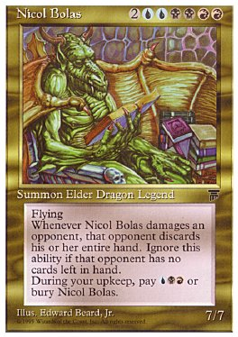

Doesn't surprise me. Many games sites/reviewers were impressed by N's fluidity, style of play, etc..
Myself *cringe* at least 100 more that the second-highest, and I'm not a big N player.
1 to 3 hours, but I don't play regulary.
My index finger, left hand. (I'm left-handed).
Quite easily, even if you start in the room, to some extent.
4 homing turrets would be less possible, if you want it to be stupidly hard.
Yes, READ THE MANUAL! It seems that it needs to be made very clear when something like this is posted...
If you ran in fast enough, then maybe yes.
The_Daily_Llama/Formica, because of his knowledge of weird bugs and manual editing. And great maps, of course.
You'd need to enter fast, because on a full map turrets/enemies may take a few frames to respond before they fire/react. Yes, you wouldn't want to jump into a turret, and your jumps would have to be pretty horizontal (jumping before you enter the room?).
DDAs, I think. They definately look the best, and take the most time and expertise to make a good one compared to other kinds of maps.
No, I don't think that Trojans need passwords either. They just jump on you when you go onto a certain page or activate a script or something.
Animated, but very odd. 
I'll give it a 7.
I'll give it a 7.
3.5 from me too. It's not too bad.
DDAs for me. The amount of time and expertise required to make a good DDA is massive.
Heh. It was all I could think of.
The tileset's right next to it if you're interested.
The tileset's right next to it if you're interested.
I gave it a 4.
Pretty good map, not too hard or easy, lots of rocket lanchers (yay! Rocket launchers!), good use of thwumps.
While i'm at it...
Ballistic Rings
Could someone rate, please?
Pretty good map, not too hard or easy, lots of rocket lanchers (yay! Rocket launchers!), good use of thwumps.
While i'm at it...
Ballistic Rings
Could someone rate, please?
The Murder Of Che Guevara rated.
I need A Circle That Is Somehow A Square (re) rated.
I need A Circle That Is Somehow A Square (re) rated.
Rated Revolver. Seems like a Action/Race Hybrid used to great effect. Very flowing. 4.5/5.
Rated Ravenous. Very good. I find corner jumps hard but the challenge was very enjoyable.
4.5/5.
Rated Ravenous. Very good. I find corner jumps hard but the challenge was very enjoyable.
4.5/5.
Search for author "evil_bob" and you'll find his maps.
Yeah, Comfort Eagle was damn hard. Still, I got to the first switch and managed to land on the middle bounceblock. Very nice anyway. 4.5/5 again!
And can somebody please rate A Circle That Is Somehow A Square?
And can somebody please rate A Circle That Is Somehow A Square?
Fake? How could I fake amazing pictures like that? No one can doctor an image THAT well.
*cough*
I could make that in 5 minutes.
And you can also tell by looking closely at the "Wallguard" that it has been recolored. That was not originally a vector.
Don't try and fool me; I can spot pixel imperfections a mile off.
Don't try and fool me; I can spot pixel imperfections a mile off.
Rated Asteroid Belt.
I also need Ballistic Rings rated 3 more times.
I also need Ballistic Rings rated 3 more times.
As I said, with a bit of time, to make those would be easy, and Master Jmd has proved my point.
OMFGZORZ!!! LIGHTNING TURRETS!

Sorry about the bad quality.
Sorry about the bad quality.
Playground: Quite fun to run around in, but it doesn't have as much content as some of the other "playground" genre maps. 3.5/5.
I need Electric-Wired Drone rated.
I need Electric-Wired Drone rated.
Exactly. But that was done on Paint. If I bothered to do it on protoshop you could use "replace colours" to make that seamless, instead of doing it manually. Also, the pictures on the first page have been mainly edited with copy, paste and print screen, with a little recolouring.
I think that's because his image is saved as a Jpeg, whereas I saved my one as Bitmap...
Yes, my image is a JPEG, and yours looks like a BMP, or maybe a PNG.
Simple enough. Use Paint, cut out Yoshi, put on white backing, set white as secondary colour, make secondary transparent, paste on N screnshot.
Or you could render Yoshi with Photoshop using magic wand (or select by colour) and a transparent background.
Or you could render Yoshi with Photoshop using magic wand (or select by colour) and a transparent background.
Obviously.
But why would anyone bother to leak screens about a flash game with a relativley small community???
Rated Deoxyribonucleic Acid (DNA) 3.5/5. Without the mines, it could be quite a good open tileset.
So there is still the possiblity that it is true?
ONE OF YOUR MATES WORKz FOR GAMESPOT???????????????A friend of mine who works for GameSpot (Who also contributed concept art to Halo 2) has just mailed me with confirmation that this is genuine.But why would anyone bother to leak screens about a flash game with a relativley small community???Hype man, hype. It's all about media hype these days. Soon these pictures will be all over GameSpot and, now that we have weapons and multiplayer, GotFrag.com too. Think of it: multiplayer + weapons = online deathmatch. N will be massive; it could be the next CounterStrike!1!!
Trust us, this will snowball.
someone quote this
Whoo! massive chain quoting!
This is total spam and should be locked. Quickly.
I suppose that they do.
I would like to be a Black Ninja, jumping across the gap which tl and Aju are in, with no other items, please.
Rated Do Not Look Down 2.
Good test of skills, harder than the first one, simple. 3.5/5.
I need Electric Spire Chamber rated.
Good test of skills, harder than the first one, simple. 3.5/5.
I need Electric Spire Chamber rated.
Everyone Is Done So Far.
Err... I haven't been added yet.
Rated To the Light of Day.
Need Between Shattered Earth And Heaven rated.
Need Between Shattered Earth And Heaven rated.
I suppose that many of you have noticed the "Giga Cannon" effect made by niccus by now.
Link to the map:
Giga Cannon Activate
But I have just come up with a slight variation; the Psy-Cannon. The Giga Cannon is created by you modifying a guass turret's X/Y parameters to a very high number. A guass turret usually is 3^348,288. In the Giga Cannon, it's 3^396,-1000000, and the effect for some reason occurs. With the same idea, and a bit of experimentation, I realised that by modifying the X/Y to a stupidly high number (something with 15-18 digits, like so: 3^74654756348576353453,34547385374957345743), you can make it so that when the turret fires, it kills you no matter where you are on the map. Also, there is no visual effect here, so you just die. I think it's a pretty good way of making a no-enemy or mine jumper that much harder. I've submitted the effect on NUMA.
Psy-Turret
Link to the map:
Giga Cannon Activate
But I have just come up with a slight variation; the Psy-Cannon. The Giga Cannon is created by you modifying a guass turret's X/Y parameters to a very high number. A guass turret usually is 3^348,288. In the Giga Cannon, it's 3^396,-1000000, and the effect for some reason occurs. With the same idea, and a bit of experimentation, I realised that by modifying the X/Y to a stupidly high number (something with 15-18 digits, like so: 3^74654756348576353453,34547385374957345743), you can make it so that when the turret fires, it kills you no matter where you are on the map. Also, there is no visual effect here, so you just die. I think it's a pretty good way of making a no-enemy or mine jumper that much harder. I've submitted the effect on NUMA.
Psy-Turret
I wonder what would happen if you set a vertical teleporter speed to pi.
I haven't tried that yet. I might do it now, if it's actually possible. Because pi goes on forever and is of indefinate digits, I don't think that we would be able to get exactly the right number.
Quote: MetaNinja, Feb 25 2006, 11:10 AMTry increasing your revoulution.
That, would be very weird indeed.
Try increasing your resolution. 1024/768 works.
Rated Torrential (mini).
Need Turning Away From An Armed Man rated.
Need Turning Away From An Armed Man rated.
Sorry for the double post, but here's what happens with pi and a launchpad. Namely, nothing special.
Just so. So it's completely useless using pi on a launchpad.
Yep, Eyeball Bots are easy. Change the second-to-last number to NaN.
e.g. 6^396,276,2,0,2,0 for a chaingun drone.
Change it to 6^396,276,2,0,NaN,0 and there, you have an eyeball bot.
e.g. 6^396,276,2,0,2,0 for a chaingun drone.
Change it to 6^396,276,2,0,NaN,0 and there, you have an eyeball bot.
Kablizzy: I don't know how far away it has to be exactly for the Psy-Turret to work. It must be over 100,000, because the Giga Cannon is 10,000, and somewhat over that makes the screen flash cook.
I tried setting a guass turret to pi on the x and y axis and it appeared just outside the top-right corner of the border. It could shoot anywhere on the map, but not through tiles.
I tried setting a guass turret to pi on the x and y axis and it appeared just outside the top-right corner of the border. It could shoot anywhere on the map, but not through tiles.
Between Shattered Earth And Heaven Tileset
Spiral Cavern Tileset
Jagged Worlds Tileset
I hope they help you.
Spiral Cavern Tileset
Jagged Worlds Tileset
I hope they help you.
Oops i guess i should have been more specific. I wanted a tileset of the N character.
Ohhhh. Right.
If nobody minds, I've converted the some of the simpler hand-drawn models into N Poser models.

Rated all of Villemancer's maps.
I need:
Death Rune,
Adrenaline Rush,
Psychic Wrath 2.0
and Turning Away From An Armed Man
rated.
I need:
Death Rune,
Adrenaline Rush,
Psychic Wrath 2.0
and Turning Away From An Armed Man
rated.
I rate every map on the first page. But I do notice that many people don't vote - when a map by a well-known author comes up (in this case, astheoceansblue) the map gets a rating in 5 minutes, when most other maps get 2 or less votes while on the front page.
9/10
Good bit of Flash (?) there.
Good bit of Flash (?) there.
Rated Security Breach 2.
Correct use of Seekers, Chainguns, Mines and Floorguards. Overall, very good.
I still need 1 more rating for Ballistic Rings. If you've already rated it, fell free to rate any of my other maps. Thankyou.
Correct use of Seekers, Chainguns, Mines and Floorguards. Overall, very good.
I still need 1 more rating for Ballistic Rings. If you've already rated it, fell free to rate any of my other maps. Thankyou.
Lockage, please.
I think of myself as an average N player - finished 0-9, 10-16, 20-23, 40-45, 90, and 91 so far.
So compared to me, you're a great player.
So compared to me, you're a great player.
Good God, how long does it take to convice people that this won't happen!
Here's a few suggestions that I've got to do with Ned in future versions of N.
1) Remember back in N v1.3 where in Ned it showed the appx. power of launchpads with a blue line? I would like that back, as it helped to identify which launchpads you had made into teleporters/or just modified without testing every time you changed something. If these do get back in, it would be better if they were more accurate than before, so that they actually showed where your ninja was going to stop in mid-air.
2) When you drag-select tiles, there should be an option "paste into grey region inverted" so that you can paste tiles the opposite way to when you selected them. This would make building symmetrical tilesets that much easier.
3) More flexiblity with tiles. While this may be counted as a major change in the gameplay mechanics, it would be good to have tiles such as 3/4 blocks, 1/4 blocks, and more varieties of slopes (such as different angles). 1/2 tile corners would also be useful. I can't be bothered to post an edited image, so I'll draw it here.
If "." was empty, and "-" was full:
Think of a 5-tile:
............
............
----------
----------
This would be a 1/2 tile corner:
......------
......------
-----------
-----------
Please give me your opinions on these ideas.
1) Remember back in N v1.3 where in Ned it showed the appx. power of launchpads with a blue line? I would like that back, as it helped to identify which launchpads you had made into teleporters/or just modified without testing every time you changed something. If these do get back in, it would be better if they were more accurate than before, so that they actually showed where your ninja was going to stop in mid-air.
2) When you drag-select tiles, there should be an option "paste into grey region inverted" so that you can paste tiles the opposite way to when you selected them. This would make building symmetrical tilesets that much easier.
3) More flexiblity with tiles. While this may be counted as a major change in the gameplay mechanics, it would be good to have tiles such as 3/4 blocks, 1/4 blocks, and more varieties of slopes (such as different angles). 1/2 tile corners would also be useful. I can't be bothered to post an edited image, so I'll draw it here.
If "." was empty, and "-" was full:
Think of a 5-tile:
............
............
----------
----------
This would be a 1/2 tile corner:
......------
......------
-----------
-----------
Please give me your opinions on these ideas.
Yeah, I use Photoshop CS2, MS Paint and GIMP 2.0 all together. I find GIMP the best, but for simple transparency options, MS Paint uctually is easiest to use. I can't get the hang of GIMP's "Select By Colour" however, so I use Photoshop's "Magic Wand" if I want to cut out something. Photoshop's Filter effects are also probably the best overall as well.
It is the keyboard. I live in Finland and I got "", "" and "" in my keyboard. I have to press shift down and twice "".
He says he's solved it.
Most of the time, changes to the core gameplay mechanics of N get bad reception for many reasons, one of which is that all of original levels would have to be redesigned.
Thankyou for spamming your own thread.
I can do weirder things!
y♀♦♣Θ}-╣─4╞♪⌡☺V. ↨66♀m6♀!!!!!
↨66♀m6♀!!!!!
.
Yay!!!!!11111oneone!!
I can do weirder things!
y♀♦♣Θ}-╣─4╞♪⌡☺V.
↨66♀m6♀!!!!!.
Yay!!!!!11111oneone!!
It was a pretty good map as well.
Rated stereotype and Cemitry.
I need Psychic Wrath 2.0 rated 2 more times. Take part in the competition while you're there if you like, as well.
I need Psychic Wrath 2.0 rated 2 more times. Take part in the competition while you're there if you like, as well.
Posered Logo and highlighted myself.
(PM me if you want to know about this effect)

(PM me if you want to know about this effect)
Anyone else want to be highlighted?
You're supposed to rate the map above you.
^ Has over 800 posts.
Modded myself again.
kirby, I'll get back to you on that as soon as I can.

kirby, I'll get back to you on that as soon as I can.
What do you want on it?
Yeah, and I did me, tl, Aju, Mark, GamingWolf, Adam77, Logo16, and Yv(u?)iop787.
I agree.Quote: Mysterypower, March 01, 2006 12:35 pmALL HAIL FORMICA!
Done Nemetacyst.

White Ninja, blue-auraed and with a gray-blue sword. Your sword is bigger than mine because you're using two hands.
chasethebase, what'dya want?
Almost done chasethebase.
AV, I'll do you as soon as I've finished him.
EDIT: chasethebase is done. I'll start on AV.

AV, I'll do you as soon as I've finished him.
EDIT: chasethebase is done. I'll start on AV.
I've done you, AV, and the TV but nothing else so far.
Finished you, AV.

Ah...
Right, a mine? You sure? Because it takes me more effort to make a pie than a mine.
Your mine is done.

Right, a mine? You sure? Because it takes me more effort to make a pie than a mine.
Your mine is done.
When I started with my Mac version the strorage window came up. Command-Click the window and go to "settings".
Oh... I'll copy that in.
Right, done. Blizzy readded.

Right, done. Blizzy readded.
I rate that 2/5. Sorry, but it dosen't have any objects, and dosen't look very good. However, it gets it's point across.
I still need Gotta Find Some Cover rated once more, Psychic Wrath 2.0 rated once more, and Turning Away From An Armed Man rated twice more.
I still need Gotta Find Some Cover rated once more, Psychic Wrath 2.0 rated once more, and Turning Away From An Armed Man rated twice more.
Sorry guys, I just don't have the time at this minute. I'll do RAVENCLAW as soon as I get the chance. Keep this thread active.
a jump pad and a enemyIs it possible with other enemies too? I thought it was only possible with mines.
ZZ9's right on this one. The game can't recognise two collisions happening at the same time. It works on all enemies, I got hit by a drone on that level and lived.
Those are surely the simplest.
Not just clustering, but actually placing objects on top of one another for no reason. Like having 10 rocets on one black.
Not just clustering, but actually placing objects on top of one another for no reason. Like having 10 rocets on one black.
Looks good so far, even if it might turn out a bit short. I'd suggest that you continue yourself.
Rated revolution.
Can you people not skip me please?
Can I have Psychic Wrath 2.0 rated once more and Silent Thunder rated, please.
Can you people not skip me please?
Can I have Psychic Wrath 2.0 rated once more and Silent Thunder rated, please.
All those levels together would cause mayhem. Consider how difficult it would be - it would have to be incredibly well put together.
I chose 3, but I also like 7.
NaN means Not a Number, like tktktk said. This means that things in the game's coding which are determined by a number, be it an integer, variable ect. have been modified to something that is not a number.
Supposing that you had the code for a ninja in your level - 5^36,276
I change the integers that determine the ninja's location to letters and/or symbols - 5^%£^$,££$
Now when I load the level, the game can't recognise the ninja's position - so it makes a giant one in the top corner (WTF?).
Supposing that you had the code for a ninja in your level - 5^36,276
I change the integers that determine the ninja's location to letters and/or symbols - 5^%£^$,££$
Now when I load the level, the game can't recognise the ninja's position - so it makes a giant one in the top corner (WTF?).
It's called "N Art" so that you can look at it. If you don't want to look at it, then play another level.
May I ask, what chapter are you on?
May I ask, what chapter are you on?
Rated Red Eye. Now can somebody pay me a bit of attention?
Rated Spun (Tileset), Spun and Steep.
Chapter in the main game? completed that jeez what do you take me for lol. and on the userlevels its annoying having levels without times. and when you come across a level like newts larval then its frustrating yknow?
I'm not really sure why you find those maps hard, then. I'm only on Chapter 22/92 and I don't find most of the better maps all that difficult, except Mother Thwumping Impossible of course.
I can see your point, although I did get some way into Space Hub before being shot. I actually found Shattered Track resonably hard at first, but it didn't take too long. Maps with flow are meant to have flow, maps without aren't. I really like the jaggedy maps and tilesets that I make, because of their lack of flow, not their abundance of it.
Corn is best. Yay! 

Rust and Foreclosure Of A Dream are wonderful, getting a 4.5 and 4 respectively.
The Waste Land - 4/5, simple, and that guass turret really makes it hard.
Shine on You - 4/5, again, great use of guasses and mines.
Yes, you are getting much better. Keep it up.
The Waste Land - 4/5, simple, and that guass turret really makes it hard.
Shine on You - 4/5, again, great use of guasses and mines.
Yes, you are getting much better. Keep it up.
iangb's got the point there. A pathfinding algo for drones works fine because the drones can only move in 4 directions. The ninja can move down to 1 pixel! The only way around this would be to have the map-maker program the AI themselves - something that might take ages and then would be just following a set path.
wedgie123, could you do ravenclaw for me (if you weren't going to do so anyway)?
Looking for recolours?

We could do a lot better than that and draw one ourselves instead of using game models.
We could do a lot better than that and draw one ourselves instead of using game models.
8/10
Abstract. That's usually a good thing, but it means that it can be made from distorting almost any picture.
By the way, I made my sig in 10 minutes, I just couldn't be bothered to make anything more complex.
Abstract. That's usually a good thing, but it means that it can be made from distorting almost any picture.
By the way, I made my sig in 10 minutes, I just couldn't be bothered to make anything more complex.
Is that the point?
Rodent spray.
= Dead.
Looks good Evil_Bob.
Evil_Bob, didn't chasethebase just say that you deleted him?

It's fixed now, anyway.
It's fixed now, anyway.
Rated some of playa1's maps. And by the way, check TERRIBLE because I've got a completion demo for ya.
I need Silent Thunder and Death Rune rated twice more, and I need Ice Rock and Assassins rated once more.
I need Silent Thunder and Death Rune rated twice more, and I need Ice Rock and Assassins rated once more.
iangb's got the point there. A pathfinding algo for drones works fine because the drones can only move in 4 directions. The ninja can move down to 1 pixel! The only way around this would be to have the map-maker program the AI themselves - something that might take ages and then would be just following a set path.That is not why pathfinding is hard. In any given frame, there are only three things (excluding kill and boss mode) that the ninja (i.e. the player) can do; press left, press right, press jump. This gives three moves, while drones have four. The drones do not use pathfinding, they just move in a straight line until they hit a wall or detect the ninja.
The pathfinding difficulty is that the places you can get to from the current frame, depend on things like how fast the ninja is moving, in which direction, how long the jump button has been held for, etc. If the ninja was like a chess piece and moved in fixed jumps from square to square, then it would be easy to create a graph for path finding as this graph would be the same for all possible sequences of previous moves. In N, the possible next moves depend on what moves have been made in the past.
But my point was that drones move in 4 directions, in single squares, and like you said they change direction depending on their algo when they touch an obstacle. I didn't say that the drones use pathfinding - I was agreeing with iangb about an algo being easier to program.
Now, because of N's physics engine, the ninja can move up, down, left and right with (somewhat) the correct interia and gravity. I know that the difficulty with pathfinding would making the movements of the "shadow ninja" correspond so that it can root out the player's ninja, in the shortest time possible. That's the basics of pathfinding. But what's hard is that the "shadow ninja" must know the routes through the map itself - meaning that the best way round it would be to program the pathfinding to be a little like a drone's algo - following tiles. So, in a sense, I'm agreeing with you. Unless the "shadow ninja" is to follow tiles, you would need to work out the distance between two tiles, for example, and then jump that distance.
So like I said, I'm agreeing with you.
formica, surely.
I like that. Very much. 4.5/5.
I need Adrenaline Rush and Silent Thunder rated twice more. I'd also like some comments, if you will.
I need Adrenaline Rush and Silent Thunder rated twice more. I'd also like some comments, if you will.
You do understand that there is only a very, very small chance that new enemies or objects will enter the game in later versions?
Yea... I'm not sure what causes this, but I had the same problem after I exited edit mode after placing some Floorguards. Well...
A Floorguard in the script is 4^396,570,1. I'll delete them for you, and see if it helps.
EDIT: Nope, it crashed when I selected the text box. I put the code in Notepad and used find to look for them, but it said they don't exist, so the code is probably corrupted. I say start again.
A Floorguard in the script is 4^396,570,1. I'll delete them for you, and see if it helps.
EDIT: Nope, it crashed when I selected the text box. I put the code in Notepad and used find to look for them, but it said they don't exist, so the code is probably corrupted. I say start again.
WE DON'T KNOW WHAT YOU MEAN BY "A FUTURE MAN"!!!!
Sorry about the caps, I had a point to get across.
Sorry about the caps, I had a point to get across.
I play most of the maps on the first two pages, and rate them. There was a poll about this not too long ago.
playa1, what did you rate Silent Thunder?
formica. Great knowledge of manual editing, bugs and map-making skills. By the way, there was another poll about this a few days ago.
What do you want me to do, rate it? Post it on the Should I Submit This To NUMA? Thread.
Unnessesary amounts of Floorguards, and too many rockets at the top. The mines near the exit are clustered, when you could have just put a few there instead. The drone near the middle of the map's pathfinding algo is wrong, so it just goes around in circles. I'll give it 2/5, because it's your first, and at least it's playable.
Unnessesary amounts of Floorguards, and too many rockets at the top. The mines near the exit are clustered, when you could have just put a few there instead. The drone near the middle of the map's pathfinding algo is wrong, so it just goes around in circles. I'll give it 2/5, because it's your first, and at least it's playable.
Whoo, it's starting to look like a pyramid!No, but that's not a bad idea. Then again it might be tough because not everyone would know of a funny quote from the other person.I thought the point of this game was to use quotes we thought were humorous in other posts in the forums from the person above us.JiggerJaw Screwed up the game! Get him!Oh, man, just wait until you get down to just a few levels left. It can be incredibly frustrating.Seriously the Legacy is kind of addicting.Yeah right... let school come before the "Legacy." That's a funny joke there.Meh. I'm trying to hold off so it doesn't come in front of my schoolwork. The few I've played are great, though.I don't understand how that would happen, but okay. Any others?Okay, simple, really: Just quote the person above you, and say something. The goal is to make bigger and bigger quotes. We can make a conversation out of this as well. Remember, always quote the entire post of the person above you. Enjoy. Okay, here's a topic, how's everyone doing on "The Legacy"?
I have yet to play Legacy as it Defunkticates my computer.
Sorry, that was spam.
Sport's good. Especially running.
This kinda fills the whole page...That's interesting. It's still showing everything on this computer. This is using a browser called "Safari." Don't know if anyone has heard of it.IE displays less quotes than Firefox. oOYeah, it's kind of hard to see, but it is sort of interesting. I'm surprised he notice it. Wow, this is really starting to look cool. Let's keep it up.That flipping thing is pretty freaky.But ya see, here on a mac computer at school, it's working fine! It looks really cool. Does it work all the way on anyone else's computer?i see flipping!!!!! lets keep this going! the boxes are still staying there it'll look really cool soonI think he means it looks like the quote boxes are flipping. As in if you picture the whole quote as a piece of paper, it is like it is being rotated vertically. I kinda noticed this after I tried it, so it's probably what he meant.What do you mean "Flipping"?scroll down really fast it looks like it's FLIPPINGC'mon, Jiggerjaw, don't be such a pessimist queerpium petard [/inside joke]. I noticed that too, but I also noticed that on my computer, the huge quote thing I made at school had been simpified down to a smaller number (around 30) quotes. At school, it didn't do that, so my conclusion: it works on some computers/browsers, and on others, it has a limit.Umm, that's already happening, look at the last few posts...we're losing old quotes. I don't know how, but they're disappearing...Might as well lock it man, sorry.Yeah. I just hope it doesn't get to a point where it is so big it is impossible to add anything else.all we can do is waitWhat do you mean "straight down"? Oh well, man, this is fun.how far before it just goes straight down?It is beautiful.It is bending!Erg random?i like honey but i can only have so much b4 i start to feel sick its like that with all sweets, specially chocolate. i like jam on english muffinsSure, I love it with butter, or sometimes even jam is good as well. Oh, and honey. I like honey.Done. Can we now talk about toast?Okay guys, try not to post at the same time as other people. I know it's hard to avoid this, but just try. If it does happen that two people quote the same person, just quote the post of the first person to have posted. And if you posted after someone else with the same amount of quotes, you should delete your post (if you are a MetaNember.)Quote: Azmilion, March 06, 2006 05:59 pmArcanite Reaper,HOOOOO!Gotta love inward bending.It's starting to bend inwards.How big is this pyramid going to get?Haha, question swap. Ask a question, get an answer. Giovanni also thinks question swap is fun.I just spend five whole hours on Question Swap. No lie.Well, spam is allowed in Messageboard Games. See, this topic is actually totally random, but hella fun.Whoo, it's starting to look like a pyramid!No, but that's not a bad idea. Then again it might be tough because not everyone would know of a funny quote from the other person.I thought the point of this game was to use quotes we thought were humorous in other posts in the forums from the person above us.JiggerJaw Screwed up the game! Get him!Oh, man, just wait until you get down to just a few levels left. It can be incredibly frustrating.Seriously the Legacy is kind of addicting.Yeah right... let school come before the "Legacy." That's a funny joke there.Meh. I'm trying to hold off so it doesn't come in front of my schoolwork. The few I've played are great, though.I don't understand how that would happen, but okay. Any others?Okay, simple, really: Just quote the person above you, and say something. The goal is to make bigger and bigger quotes. We can make a conversation out of this as well. Remember, always quote the entire post of the person above you. Enjoy. Okay, here's a topic, how's everyone doing on "The Legacy"?
I have yet to play Legacy as it Defunkticates my computer.
Sorry, that was spam.

Pointless. But fun. Pointless fun! w000t.
Pointless. Fun. Pointless. Fun. Pointless. Fun. Pointless. Fun.
Pointless. Fun. Pointless. Fun. Pointless. Fun. Pointless. Fun. Pointless. Fun.
Pointless. Fun. Pointless. Fun. Pointless. Fun. I could keep going forever. Pointless. Fun.
Pointless. Fun. Pointless. Fun. Pointless. Fun.
SQUEE!
Yep, none of them exist.
(apparently)
(apparently)
A drawn (?) picture of the Master Cheif.
7/10, because of the quality.
7/10, because of the quality.
Slay the Course - 4/5, agghh difficult!
Spectral - 4/5, love the simplicity.
Out of Control - 4/5, easier than the others but still very good.
I'll post demos when I get the time.
Spectral - 4/5, love the simplicity.
Out of Control - 4/5, easier than the others but still very good.
I'll post demos when I get the time.
I love that map. 5/5!
Posted a demo.
Posted a demo.
Rated a few of the "towering" maps.
Check Towering 2-1, I posted a very fast demo ther, better than HeartView's.
May as well suggest that you rate my maps, if you would.
Evil___'s maps
Check Towering 2-1, I posted a very fast demo ther, better than HeartView's.
May as well suggest that you rate my maps, if you would.
Evil___'s maps
I fuel air-bomb the shop.
█.It works well for meWell, it's only not working for you guys anymore on your computers. Yeah, it's not working on mine either. Right now, it's down to the post by sucker that says "all we can do is wait." But ya know what? It still works on some computers, and it's fun to do anyways.It deletes the earlier posts for me. it's down to the part where people were discussing it screwing up.It's screwing up! ^^Yes, we WILL keep on posting. That's the point of this thread. And since I'll be gone from Thursday to Sunday, I'll be counting on you guys to keep this alive.TOTAL RANDOMNESS!!!dun dun dun DUUUN! It's teh king Guiseppi, teh masta of pi memorizingzorz.This is as far as I have memorized it for now: 3.1415926535897932384626433832795028841971 693993751058209749445923078164062862089986280348.http://im.dumpalink.com/pics/4CFBkd00.jpgIt is pretty fun quote madness.Not really. We're basically just trying to have fun.So, are we trying to find a limit here, or what?Haha, it's already gone for me.Quote: Guiseppi, March 07, 2006 06:59 pmHaha, my original post in this thread is becoming so thin.SQUEE!This kinda fills the whole page...That's interesting. It's still showing everything on this computer. This is using a browser called "Safari." Don't know if anyone has heard of it.IE displays less quotes than Firefox. oOYeah, it's kind of hard to see, but it is sort of interesting. I'm surprised he notice it. Wow, this is really starting to look cool. Let's keep it up.That flipping thing is pretty freaky.But ya see, here on a mac computer at school, it's working fine! It looks really cool. Does it work all the way on anyone else's computer?i see flipping!!!!! lets keep this going! the boxes are still staying there it'll look really cool soonI think he means it looks like the quote boxes are flipping. As in if you picture the whole quote as a piece of paper, it is like it is being rotated vertically. I kinda noticed this after I tried it, so it's probably what he meant.What do you mean "Flipping"?scroll down really fast it looks like it's FLIPPINGC'mon, Jiggerjaw, don't be such a pessimist queerpium petard [/inside joke]. I noticed that too, but I also noticed that on my computer, the huge quote thing I made at school had been simpified down to a smaller number (around 30) quotes. At school, it didn't do that, so my conclusion: it works on some computers/browsers, and on others, it has a limit.Umm, that's already happening, look at the last few posts...we're losing old quotes. I don't know how, but they're disappearing...Might as well lock it man, sorry.Yeah. I just hope it doesn't get to a point where it is so big it is impossible to add anything else.all we can do is waitWhat do you mean "straight down"? Oh well, man, this is fun.how far before it just goes straight down?It is beautiful.It is bending!Erg random?i like honey but i can only have so much b4 i start to feel sick its like that with all sweets, specially chocolate. i like jam on english muffinsSure, I love it with butter, or sometimes even jam is good as well. Oh, and honey. I like honey.Done. Can we now talk about toast?Okay guys, try not to post at the same time as other people. I know it's hard to avoid this, but just try. If it does happen that two people quote the same person, just quote the post of the first person to have posted. And if you posted after someone else with the same amount of quotes, you should delete your post (if you are a MetaNember.)Quote: Azmilion, March 06, 2006 05:59 pmArcanite Reaper,HOOOOO!Gotta love inward bending.It's starting to bend inwards.How big is this pyramid going to get?Haha, question swap. Ask a question, get an answer. Giovanni also thinks question swap is fun.I just spend five whole hours on Question Swap. No lie.Well, spam is allowed in Messageboard Games. See, this topic is actually totally random, but hella fun.Whoo, it's starting to look like a pyramid!No, but that's not a bad idea. Then again it might be tough because not everyone would know of a funny quote from the other person.I thought the point of this game was to use quotes we thought were humorous in other posts in the forums from the person above us.JiggerJaw Screwed up the game! Get him!Oh, man, just wait until you get down to just a few levels left. It can be incredibly frustrating.Seriously the Legacy is kind of addicting.Yeah right... let school come before the "Legacy." That's a funny joke there.Meh. I'm trying to hold off so it doesn't come in front of my schoolwork. The few I've played are great, though.I don't understand how that would happen, but okay. Any others?Okay, simple, really: Just quote the person above you, and say something. The goal is to make bigger and bigger quotes. We can make a conversation out of this as well. Remember, always quote the entire post of the person above you. Enjoy. Okay, here's a topic, how's everyone doing on "The Legacy"?
I have yet to play Legacy as it Defunkticates my computer.
Sorry, that was spam.
Pointless. But fun. Pointless fun! w000t.
Pointless. Fun. Pointless. Fun. Pointless. Fun. Pointless. Fun.
Pointless. Fun. Pointless. Fun. Pointless. Fun. Pointless. Fun. Pointless. Fun.
Pointless. Fun. Pointless. Fun. Pointless. Fun. I could keep going forever. Pointless. Fun.
Pointless. Fun. Pointless. Fun. Pointless. Fun.
Well, that's something to post here.
Pi as far as I remember it: 3
Haha, just kidding. I've only memorized 3.14159265357898323
*inhale*
*cough cough*
*inhale again*
*fart*
oops.
SIZE 14!!!111!!!!ONEONE
This is fun!

Just keep on posting....
I wonder how long this will go for!
Gotta go to school soon... in ~30 minutes
████████!
█████ ███ █ █████!
██ █ ████ ████ ████!
█████ █████ █████!
█ ██ ███ ████████!
█.
...
That was strange.
It didn't quote properly.
DOS, of course. XP screws up too much, but XP is still better.
Flying or swimming?
Flying or swimming?
Squee.
God, I am a n00b.
Episode 27/34/92.
Episode 27/34/92.
Yay yay yay yay yay! Episode 28!
Ebaum should be jailed indefinitely.
Ebaum should be jailed indefinitely.
The nail rusts and then disintegrates.
And yeah, I do see what you mean about nukes.
And yeah, I do see what you mean about nukes.
Rated Warzone.
I'm not sure why, but this map may have been sniped.
Touch Of A God
It was at 4 yesterday.
I'm not sure why, but this map may have been sniped.
Touch Of A God
It was at 4 yesterday.
This is really getting out of hand...BLAH!!!!!!!!!!!!!!! SIZE 20 RANDOMNESS!ASCII, perhaps?What's with the blackness things?It works well for meWell, it's only not working for you guys anymore on your computers. Yeah, it's not working on mine either. Right now, it's down to the post by sucker that says "all we can do is wait." But ya know what? It still works on some computers, and it's fun to do anyways.It deletes the earlier posts for me. it's down to the part where people were discussing it ######## up.It's ######## up! ^^Yes, we WILL keep on posting. That's the point of this thread. And since I'll be gone from Thursday to Sunday, I'll be counting on you guys to keep this alive.TOTAL RANDOMNESS!!!dun dun dun DUUUN! It's teh king Guiseppi, teh masta of pi memorizingzorz.This is as far as I have memorized it for now: 3.1415926535897932384626433832795028841971 693993751058209749445923078164062862089986280348.http://im.dumpalink.com/pics/4CFBkd00.jpgIt is pretty fun quote madness.Not really. We're basically just trying to have fun.So, are we trying to find a limit here, or what?Haha, it's already gone for me.Quote: Guiseppi, March 07, 2006 06:59 pmHaha, my original post in this thread is becoming so thin.SQUEE!This kinda fills the whole page...That's interesting. It's still showing everything on this computer. This is using a browser called "Safari." Don't know if anyone has heard of it.IE displays less quotes than Firefox. oOYeah, it's kind of hard to see, but it is sort of interesting. I'm surprised he notice it. Wow, this is really starting to look cool. Let's keep it up.That flipping thing is pretty freaky.But ya see, here on a mac computer at school, it's working fine! It looks really cool. Does it work all the way on anyone else's computer?i see flipping!!!!! lets keep this going! the boxes are still staying there it'll look really cool soonI think he means it looks like the quote boxes are flipping. As in if you picture the whole quote as a piece of paper, it is like it is being rotated vertically. I kinda noticed this after I tried it, so it's probably what he meant.What do you mean "Flipping"?scroll down really fast it looks like it's FLIPPINGC'mon, Jiggerjaw, don't be such a pessimist queerpium petard [/inside joke]. I noticed that too, but I also noticed that on my computer, the huge quote thing I made at school had been simpified down to a smaller number (around 30) quotes. At school, it didn't do that, so my conclusion: it works on some computers/browsers, and on others, it has a limit.Umm, that's already happening, look at the last few posts...we're losing old quotes. I don't know how, but they're disappearing...Might as well lock it man, sorry.Yeah. I just hope it doesn't get to a point where it is so big it is impossible to add anything else.all we can do is waitWhat do you mean "straight down"? Oh well, man, this is fun.how far before it just goes straight down?It is beautiful.It is bending!Erg random?i like honey but i can only have so much b4 i start to feel sick its like that with all sweets, specially chocolate. i like jam on english muffinsSure, I love it with butter, or sometimes even jam is good as well. Oh, and honey. I like honey.Done. Can we now talk about toast?Okay guys, try not to post at the same time as other people. I know it's hard to avoid this, but just try. If it does happen that two people quote the same person, just quote the post of the first person to have posted. And if you posted after someone else with the same amount of quotes, you should delete your post (if you are a MetaNember.)Quote: Azmilion, March 06, 2006 05:59 pmArcanite Reaper,HOOOOO!Gotta love inward bending.It's starting to bend inwards.How big is this pyramid going to get?Haha, question swap. Ask a question, get an answer. Giovanni also thinks question swap is fun.I just spend five whole hours on Question Swap. No lie.Well, spam is allowed in Messageboard Games. See, this topic is actually totally random, but hella fun.Whoo, it's starting to look like a pyramid!No, but that's not a bad idea. Then again it might be tough because not everyone would know of a funny quote from the other person.I thought the point of this game was to use quotes we thought were humorous in other posts in the forums from the person above us.JiggerJaw Screwed up the game! Get him!Oh, man, just wait until you get down to just a few levels left. It can be incredibly frustrating.Seriously the Legacy is kind of addicting.Yeah right... let school come before the "Legacy." That's a funny joke there.Meh. I'm trying to hold off so it doesn't come in front of my schoolwork. The few I've played are great, though.I don't understand how that would happen, but okay. Any others?Okay, simple, really: Just quote the person above you, and say something. The goal is to make bigger and bigger quotes. We can make a conversation out of this as well. Remember, always quote the entire post of the person above you. Enjoy. Okay, here's a topic, how's everyone doing on "The Legacy"?
I have yet to play Legacy as it Defunkticates my computer.
Sorry, that was spam.
Pointless. But fun. Pointless fun! w000t.
Pointless. Fun. Pointless. Fun. Pointless. Fun. Pointless. Fun.
Pointless. Fun. Pointless. Fun. Pointless. Fun. Pointless. Fun. Pointless. Fun.
Pointless. Fun. Pointless. Fun. Pointless. Fun. I could keep going forever. Pointless. Fun.
Pointless. Fun. Pointless. Fun. Pointless. Fun.
Well, that's something to post here.
Pi as far as I remember it: 3
Haha, just kidding. I've only memorized 3.14159265357898323
*inhale*
*cough cough*
*inhale again*
*fart*
oops.
SIZE 14!!!111!!!!ONEONE
This is fun!
Just keep on posting....
I wonder how long this will go for!
Gotta go to school soon... in ~30 minutes
...
That was strange.
It didn't quote properly.
Yeah. Geeks kick ASCII.

And the madness continues...
Θ▐╨9↔#$⌐╣V╓HA><><ORZORZ!!
GOD NO HALO 2!
Halo 2 is easy, short, fuzzy, buggy and unoriginal.
Halo 2 is easy, short, fuzzy, buggy and unoriginal.
So I don't PM Louie about this? Because I did about 5 days ago, and I'm still not on here.
Lemme just redo it.
Color: Black Ninja with a silverish outline
Action: Sitting in a lawn chair
Where: Anywhere suitable on TehDude's skybase
Outline or aura?
My ninja has an aura. An outline ould be a 1 pixel thick line around the ninja.
I'll do Spyder first, then Inuyasha.
Even though it isn't a word, this worked: bargl 123456
Yep, that's nowhere near a true googlewhack. Breaks more than one rule.
Yep, numbers and not a real word. I know.
lol WAAAAAZZZZUUUUUUPzorz lol anywayzzorz lol bombsorz lol bushzorz lol moronzorz lol y'allzorz lol babyzorz lol l33tzorz lol omfgzorz lol niggerzorz lol crackazorz lol amadouzorz lol diallozorz lol abnerzorz lol louimmazorz lol sliceyzorz lol sliceyzorz lol arieszorz lol WTFz0RZ lol lmfaozorz lol thxzorz lol crackerszorz lol whitezorz lol trailerzorz lol trashzorz lolΘ▐╨9↔#$⌐╣V╓HA><><ORZORZ!!This is really getting out of hand...BLAH!!!!!!!!!!!!!!! SIZE 20 RANDOMNESS!ASCII, perhaps?What's with the blackness things?It works well for meWell, it's only not working for you guys anymore on your computers. Yeah, it's not working on mine either. Right now, it's down to the post by sucker that says "all we can do is wait." But ya know what? It still works on some computers, and it's fun to do anyways.It deletes the earlier posts for me. it's down to the part where people were discussing it ######## up.It's ######## up! ^^Yes, we WILL keep on posting. That's the point of this thread. And since I'll be gone from Thursday to Sunday, I'll be counting on you guys to keep this alive.TOTAL RANDOMNESS!!!dun dun dun DUUUN! It's teh king Guiseppi, teh masta of pi memorizingzorz.This is as far as I have memorized it for now: 3.1415926535897932384626433832795028841971 693993751058209749445923078164062862089986280348.http://im.dumpalink.com/pics/4CFBkd00.jpgIt is pretty fun quote madness.Not really. We're basically just trying to have fun.So, are we trying to find a limit here, or what?Haha, it's already gone for me.Quote: Guiseppi, March 07, 2006 06:59 pmHaha, my original post in this thread is becoming so thin.SQUEE!This kinda fills the whole page...That's interesting. It's still showing everything on this computer. This is using a browser called "Safari." Don't know if anyone has heard of it.IE displays less quotes than Firefox. oOYeah, it's kind of hard to see, but it is sort of interesting. I'm surprised he notice it. Wow, this is really starting to look cool. Let's keep it up.That flipping thing is pretty freaky.But ya see, here on a mac computer at school, it's working fine! It looks really cool. Does it work all the way on anyone else's computer?i see flipping!!!!! lets keep this going! the boxes are still staying there it'll look really cool soonI think he means it looks like the quote boxes are flipping. As in if you picture the whole quote as a piece of paper, it is like it is being rotated vertically. I kinda noticed this after I tried it, so it's probably what he meant.What do you mean "Flipping"?scroll down really fast it looks like it's FLIPPINGC'mon, Jiggerjaw, don't be such a pessimist queerpium petard [/inside joke]. I noticed that too, but I also noticed that on my computer, the huge quote thing I made at school had been simpified down to a smaller number (around 30) quotes. At school, it didn't do that, so my conclusion: it works on some computers/browsers, and on others, it has a limit.Umm, that's already happening, look at the last few posts...we're losing old quotes. I don't know how, but they're disappearing...Might as well lock it man, sorry.Yeah. I just hope it doesn't get to a point where it is so big it is impossible to add anything else.all we can do is waitWhat do you mean "straight down"? Oh well, man, this is fun.how far before it just goes straight down?It is beautiful.It is bending!Erg random?i like honey but i can only have so much b4 i start to feel sick its like that with all sweets, specially chocolate. i like jam on english muffinsSure, I love it with butter, or sometimes even jam is good as well. Oh, and honey. I like honey.Done. Can we now talk about toast?Okay guys, try not to post at the same time as other people. I know it's hard to avoid this, but just try. If it does happen that two people quote the same person, just quote the post of the first person to have posted. And if you posted after someone else with the same amount of quotes, you should delete your post (if you are a MetaNember.)Quote: Azmilion, March 06, 2006 05:59 pmArcanite Reaper,HOOOOO!Gotta love inward bending.It's starting to bend inwards.How big is this pyramid going to get?Haha, question swap. Ask a question, get an answer. Giovanni also thinks question swap is fun.I just spend five whole hours on Question Swap. No lie.Well, spam is allowed in Messageboard Games. See, this topic is actually totally random, but hella fun.Whoo, it's starting to look like a pyramid!No, but that's not a bad idea. Then again it might be tough because not everyone would know of a funny quote from the other person.I thought the point of this game was to use quotes we thought were humorous in other posts in the forums from the person above us.JiggerJaw Screwed up the game! Get him!Oh, man, just wait until you get down to just a few levels left. It can be incredibly frustrating.Seriously the Legacy is kind of addicting.Yeah right... let school come before the "Legacy." That's a funny joke there.Meh. I'm trying to hold off so it doesn't come in front of my schoolwork. The few I've played are great, though.I don't understand how that would happen, but okay. Any others?Okay, simple, really: Just quote the person above you, and say something. The goal is to make bigger and bigger quotes. We can make a conversation out of this as well. Remember, always quote the entire post of the person above you. Enjoy. Okay, here's a topic, how's everyone doing on "The Legacy"?
I have yet to play Legacy as it Defunkticates my computer.
Sorry, that was spam.
Pointless. But fun. Pointless fun! w000t.
Pointless. Fun. Pointless. Fun. Pointless. Fun. Pointless. Fun.
Pointless. Fun. Pointless. Fun. Pointless. Fun. Pointless. Fun. Pointless. Fun.
Pointless. Fun. Pointless. Fun. Pointless. Fun. I could keep going forever. Pointless. Fun.
Pointless. Fun. Pointless. Fun. Pointless. Fun.
Well, that's something to post here.
Pi as far as I remember it: 3
Haha, just kidding. I've only memorized 3.14159265357898323
*inhale*
*cough cough*
*inhale again*
*fart*
oops.
SIZE 14!!!111!!!!ONEONE
This is fun!
Just keep on posting....
I wonder how long this will go for!
Gotta go to school soon... in ~30 minutes
...
That was strange.
It didn't quote properly.
Yeah. Geeks kick ASCII.
And the madness continues...
☺☻☺☻☺☻☺☻☺☻☺☻☺☻☺☻☺☻☺☻☺☻☺☻☺☻☺☻☺☻☺☻☺☻☺☻☺☻☺☻☺☻☺☻☺☻☺☻☺☻☺☻☺☻☺☻☺☻☺☻☺☻☺☻☺☻☺☻☺☻☺☻☺☻☺☻☺☻☺☻☺☻☺☻☺☻☺☻☺☻☺☻☺☻☺☻☺☻☺☻☺☻☺☻☺☻☺☻☺☻☺☻☺☻☺☻☺☻☺☻☺☻☺☻☺☻☺☻☺☻☺☻☺☻☺☻☺☻☺☻☺☻☺☻☺☻☺☻☺☻☺☻☺☻☺☻☺☻☺☻☺☻☺☻☺☻☺☻☺☻☺☻☺☻☺☻☺☻☺☻☺☻☺☻☺☻☺☻☺☻☺☻☺☻☺☻☺☻☺☻☺☻☺☻☺☻☺☻☺☻☺☻☺☻☺☻☺☻☺☻☺☻☺☻☺☻☺☻☺☻☺☻☺☻☺☻☺☻☺☻☺☻☺☻☺☻☺☻☺☻☺☻☺☻☺☻☺☻☺☻☺☻☺☻☺☻☺☻☺☻☺☻☺☻☺☻☺☻☺☻☺☻☺☻☺☻☺☻☺☻☺☻☺☻☺☻☺☻☺☻☺☻☺☻☺☻☺☻☺☻☺☻☺☻☺☻☺☻☺☻☺☻☺☻☺☻☺☻☺☻☺☻☺☻☺☻☺☻☺☻☺☻☺☻☺☻☺☻☺☻☺☻☺☻☺☻☺☻☺☻☺☻☺☻☺☻☺☻
Look at the top of the posts... the avatar part is getting messed.
Yeah, that would be good. An RGB slider...
Thanks! That helps for jumping from wall to wall, but how can I jump on one wall using wall jumps (no wall paralell to it). I've been just holding down the right button (vise versa if the wall is to the left of me) and repeatedly pressing space. Do I have to let go of the right (or left button) for a second to press the space and then quickly press right again?well see if your repeatedly pressing space, which im assuming if what your jump button is set too, then this is why your not getting the height you need. to get the full power of a jump you need to hold space (jump) for as long as possible. for getting up a wall quickly you want to jump at it and then jump off the wall (holding right all the time) and hold jump for as long as possible, then press jump again when at the earliest point possible as you come back against the wall. you dont want to wait until you are holding the wall. the best power of a jump will come when N is barely touching the wall, you will get used to this though. but the reason to jump as soon as possible as your coming back against the wall is so that you are keeping the majority of the speed and momentum of your first jump. this speed will then make any further jumps slightly faster and higher. you will get the hang of it with practice.
This is probably the best I can do to demonstrate what wedgie123 meant. (as far as I know)
Map data:
Example 1 - Slow wall-climbing.Quote00000000000000000000000000000000000000000000000000000000000000000000000000000000000000000000000000000000000000000000000000000000000000000000000000000000000000000000000000000000000000000000000000000000000000000000000000000000000000000000000000000000000000000000000000000000000000000000000000000000000000000000000000000000000000000000000000000000000000000000000000000000000000000000000000000000000000000000000000000000000000000000000000000000000000000000000000000000000000000000000000000000000000000000000000000000000000000000000000000000000000000000000000000000000000000000000000000000000000000000000000000000000000000000000000000000000000000000000000000000000000000000000000000000000000000000000000000000000000000|5^408,516
Example 2 - Faster wall-climbing.Quote602:35791394|35791394|35791394|35791394|35791394|35791394|35791394|35791394|35791394|35791394|35791394|35791394|35791394|35791394|107376162|107374182|107374182|107374182|40265318|35791394|107374190|107374182|107374182|107374182|40265318|35791394|107374190|107374182|107374182|36071014|35791394|107374306|107374182|107374182|107374182|35791394|107376162|107374182|107374182|107374182|35792486|107374306|107374182|107374182|107374182|35792486|107376162|107374182|107374182|107374182|35792486|107374190|107374182|107374182|107374182|36071014|35791394|107374306|107374182|107374182|36071014|107405858|107374182|107374182|107374182|35791462|107374190|107374182|107374182|36071014|107405858|107374182|107374182|107374182|115483174|107374182|107374182|107374182|107374182|237118054|107374182|107374182|107374182|107374182|35808870|546|0
Quote309:35791360|35791394|35791394|35791394|35791394|35791394|35791394|35791394|35791394|35791394|35791394|35791394|35791394|35791394|107880994|107374182|237119078|107374182|107374182|107374182|107374182|107880998|107374182|107374182|107374182|35791462|107374306|107374182|107374182|107374182|107880998|107374182|107374182|107374182|35808870|107374190|107374182|107374182|107374182|115483170|107374182|107374182|107374182|550|0
Here's my (very slow) route for 24-3. Don't worry if you have to wait around for the lasers to disperse.

Err... no, that's the Master Cheif.
^ Is (at least somewhat) a Flash Developer.
^ Is (at least somewhat) a Flash Developer.
Knowing loads but very unlucky.
Evil or Goodness?
Evil or Goodness?
OMGOMGOMGOMGOMOMG!!!!!!11111!!!!!!!!112345sixsevenninteytwo
It's.... sitting there!!!
It's.... sitting there!!!
^ Hates eBaum (for don't we all...).
Very possible now.
00000000000000000000000000000000000000000000000000000000000000000000000000000000000000000000000000000000000000000000000000000000000000000000000000000000000000000000000000000000000000000000000000000000000000000000000000000000000000000000000000000000000000000000000000000000000000000000000000000000000000000000000000000000000000000000000000000000000000000000000000000000000000000000000000000000000000000000000000000000000000000000000000000000000000000000000000000000000000000000000000000000000000000000000000000000000000000000000000000000000000000000000000000000000000000000000000000000000000000000000000000000000000000000000000000000000000000000000000000000000000000000000000000000000000000000000000000000000000000|5^480.696424800161,566!11^468,564,516,564!8^492,178.285714285714,3!6^540,564,3,0,0,!6^420,564,3,0,1,!9^756,36,0,0,18,23,1,-1,0!9^756,36,1,0,17,23,1,0,-1!9^756,36,0,0,17,23,1,-1,0!9^552,564,0,0,22,23,0,0,0!9^528,564,0,0,22,23,0,-1,0!9^540,552,1,0,22,23,0,0,-1
I've got RPGM2003, but I keep getting errors that files can't be found. Your readme was pretty cryptic as well.
Smooth animation. 8/10.
A bit of N-Posering = done. 7/10.
And, in case you're wondering, I drew mine with Photoshop.
And, in case you're wondering, I drew mine with Photoshop.
Why is Raze's Hell up there and why isn't Half-Life 2 there?
Does your RPG ninja relate to the one already in N City or is it new? And can I modify it as I will?
According to the first post; you're meant to first only post ninja, exit and terminal. I did add things.
Rated Network and commented.
I need one morevote on Death Rune.
I need one morevote on Death Rune.
Changed.
00000000000000000000000000000000000000000000000000000000000000000000000000000000000000000000000000000000000000000000000000000000000000000000000000000000000000000000000000000000000000000000000000000000000000000000000000000000000000000000000000000000000000000000000000000000000000000000000000000000000000000000000000000000000000000000000000000000000000000000000000000000000000000000000000000000000000000000000000000000000000000000000000000000000000000000000000000000000000000000000000000000000000000000000000000000000000000000000000000000000000000000000000000000000000000000000000000000000000000000000000000000000000000000000000000000000000000000000000000000000000000000000000000000000000000000000000000000000000000|5^480.696424800161,566!11^468,564,516,564!8^492,178.285714285714,3!6^540,564,3,0,0,NaN!6^420,564,3,0,1,NaN!9^756,36,0,0,18,23,1,-1,0!9^756,36,1,0,17,23,1,0,-1!9^756,36,0,0,17,23,1,-1,0!9^552,564,0,0,22,23,0,0,0!9^528,564,0,0,22,23,0,-1,0!9^540,552,1,0,22,23,0,0,-1!2^480,564,0,-1!12^480,504!12^468,492!12^492,492!12^480,480!10^480,492!4^324,570,1!9^756,36,1,0,19,21,1,0,0!9^756,36,1,0,20,21,1,0,0
HAHAHAHAHAHAALOLLOLLOLLOLROFLROFLOLLOLLOL!!!!!!!!1111111222222233333fourfiveonehundredandfifty
...
...
...
What I am still doing here?
*leaves*
...
...
...
What I am still doing here?
*leaves*
That's the route that I took, except I meandered a bit 'cos I kept falling down.
Quote: TsukatuRandom Fact: In an official JSA debate on Ninjas vs Pirates, I got up as a subsequent speaker and spoke about bears. I actually got something of a following.
Just to follow up from that...
...
Sorry, that was utterly off-topic. Out of those... cats.
Don't, then. I didn't find it too hard. Nice map, TDL, by the way.
I've manually (I hope you don't mind) sorted out almost all of the problems, but whenever I enter a battle it crashes and gives me the error: "The file building cannot be opened".
Edit: Ahh, got it working. This has got to be the best RPG that I've ever seen made with RPG maker!
Edit: Ahh, got it working. This has got to be the best RPG that I've ever seen made with RPG maker!
Impossible.
00000000000000002200000000000000000030002200000000000000003300002200000000000000330000000000000000000033000000000000000000003300000033000000000000330000003300000000000033000000330000000000003300000033000000000000330000003300000000000033000000330000000000003300000033000000000000330000003300000000000000000000330000000000000000000033000000000000000000003300000000000000000000330000000000000000000033000000000000000000000220000000000000000000000220000000000000000000000220000000000000000000000003000000000000000000000330000000000000000000033000000000000000000003300000000000000000000330000000000000000000003000000000000000000000000000000000000000000000000000000000000000000000000000000000000000000000000000000000000|5^324,36!11^36,36,756,156!12^660,156!12^636,132!12^612,108!12^576,96!12^552,84!12^528,72!12^504,60!12^480,48!12^456,36!12^108,480!12^132,480
I've done it in story mode.
18-0 - Hit by a floorguad just as I landed on the launchpad.
90-0 - Hit a mine as I was launched, and I've also hit drones there.
Those are the only two I can remember.
18-0 - Hit by a floorguad just as I landed on the launchpad.
90-0 - Hit a mine as I was launched, and I've also hit drones there.
Those are the only two I can remember.
Exactly. The problem with religion is that in almost all circumstances, it can't do that.
Turn Ons -
+ Symmetrically. Symmetrical maps are usually very nice.
+ Guasses. Brilliant enemies.
+ Well-placed enemies. As in, guasses when you're trying to climb, lasers to get in the way, floorguards placed strategically.
+ Variety. The best maps have everything, somewhat, in tileset and objects.
+ Tactical Maps. Tactful and strategic thinking that is required in maps is a great thing.
Turn Offs -
- Too many objects. Unnecessary mines or enemies just increase load time.
- Bad tilesets. Maps with no tilesets or stupid-looking ones with loose ends are by no means a good thing. Personally, I think that tilesets are my strong point, and they can easily make a huge difference to the way that you play a map.
- Lag. Too many objects or enemies make maps lag, and I hate to see my 3.19 GHz go to waste on one flash program.
- Badly-used rockets. Rockets are very annoying when used in the wrong ways. They either make a map impossible, or they're useless.
- Launchpads. However useful they may seem, I find them incredibly stupid. Full stop.
+ Symmetrically. Symmetrical maps are usually very nice.
+ Guasses. Brilliant enemies.
+ Well-placed enemies. As in, guasses when you're trying to climb, lasers to get in the way, floorguards placed strategically.
+ Variety. The best maps have everything, somewhat, in tileset and objects.
+ Tactical Maps. Tactful and strategic thinking that is required in maps is a great thing.
Turn Offs -
- Too many objects. Unnecessary mines or enemies just increase load time.
- Bad tilesets. Maps with no tilesets or stupid-looking ones with loose ends are by no means a good thing. Personally, I think that tilesets are my strong point, and they can easily make a huge difference to the way that you play a map.
- Lag. Too many objects or enemies make maps lag, and I hate to see my 3.19 GHz go to waste on one flash program.
- Badly-used rockets. Rockets are very annoying when used in the wrong ways. They either make a map impossible, or they're useless.
- Launchpads. However useful they may seem, I find them incredibly stupid. Full stop.
The first edit is meant to be impossible, not possible. Read the first post.
You have to re-backup.
This should have gond in N Help.
This should have gond in N Help.
Rated El Azteca.
Could somebody rate one of the above maps?
Could somebody rate one of the above maps?
Here's a really big bug: When you finish the final battle (get beaten, I killed them all once) it just replays the battle over and over, even if your whole party is dead.
That one took me a while.
Possible now.
00000000000000002200000000000000000030002200000000000000003300002200000000000000330000000000000000000033000000000000000000003300000033000000000000330000003300000000000033000000330000000000003300000033000000000000330000003300000000000033000000330000000000003300000033000000000000330000003300000000000000000000330000000000000000000033000000000000000000003300000000000000000000330000000000000000000033000000000000000000000220000000000000000000000220000000000000000000000220000000000000000000000003000000000000000000000330000000000000000000033000000000000000000003300000000000000000000330000000000000000000003000000000000000000000000000000000000000000000000000000000000000000000000000000000000000000000000000000000000|5^324,36!11^36,36,756,156!12^660,156!12^636,132!12^612,108!12^576,96!12^552,84!12^528,72!12^504,60!12^480,48!12^456,36!12^108,480!12^132,480!2^468,348,0.707106781186547,0.707106781186547!2^648,432,0.707106781186547,-0.707106781186547!2^756,348,0,-1!2^672,432,-0.707106781186547,-0.707106781186547!2^540,432,0.707106781186547,-0.707106781186547!2^564,432,-0.707106781186547,-0.707106781186547!0^36,348!0^36,336!0^36,336!0^36,324!0^60,324!0^48,324!0^48,336!0^72,312!0^60,312!0^48,312!0^36,312!12^36,360!3^36,396!0^96,456!0^108,456!0^120,456!0^132,456!0^84,444!0^96,444!0^108,444!0^120,444!0^72,432!0^84,432!0^96,432!0^108,432!0^60,420!0^72,420!0^84,420!0^96,420!6^36,396,3,1,0,0!6^60,372,3,1,0,0!6^372,36,3,1,0,2!6^84,348,3,1,0,0!6^108,324,3,1,0,0!0^36,300!0^48,300!0^60,300!0^72,300!0^84,300!8^180,276,0!8^204,252,0!8^228,228,0!8^252,204,0!2^468,324,1,0!9^756,564,0,0,14,1,1,0,0!2^132,516,0,-5!2^132,72,0,1
I'm sure this has been answered... but the one on the first page was System Shock.
Anyway, it's obviously an FPS of some kind... GoldenEye (the N64 version) or TS3? It reminds me of both, for some reason.
Anyway, it's obviously an FPS of some kind... GoldenEye (the N64 version) or TS3? It reminds me of both, for some reason.
This is really, really easy, so I'm going to show as little as possible.

Good luck. This version is on DOS.
Good luck. This version is on DOS.
Possible.
00000000000000002200000000000000000030002200000000000000003300002200000000000000330000000000000000000033000000000000000000003300000033000000000000330000003300000000000033000000330000000000003300000033000000000000330000003300000000000033000000330000000000003300000033000000000000330000003300000000000000000000330000000000000000000033000000000000000000003300000000000000000000330000000000000000000033000000000000000000000220000000000000000000000220000000000000000000000220000000000000000000000003000000000000000000000330000000000000000000033000000000000000000003300000000000000000000330000000000000000000003000000000000000000000000000000000000000000000000000000000000000000000000000000000000000000000000000000000000|5^324,36!11^36,36,756,156!12^660,156!12^636,132!12^612,108!12^576,96!12^552,84!12^528,72!12^504,60!12^480,48!12^456,36!12^108,480!12^132,480!2^468,348,0.707106781186547,0.707106781186547!2^648,432,0.707106781186547,-0.707106781186547!2^756,348,0,-1!2^672,432,-0.707106781186547,-0.707106781186547!2^540,432,0.707106781186547,-0.707106781186547!2^564,432,-0.707106781186547,-0.707106781186547!0^36,348!0^36,336!0^36,336!0^36,324!0^60,324!0^48,324!0^48,336!0^72,312!0^60,312!0^48,312!0^36,312!12^36,360!3^36,396!0^96,456!0^108,456!0^120,456!0^132,456!0^84,444!0^96,444!0^108,444!0^120,444!0^72,432!0^84,432!0^96,432!0^108,432!0^60,420!0^72,420!0^84,420!0^96,420!6^36,396,3,1,0,0!6^60,372,3,1,0,0!6^372,36,3,1,0,2!6^84,348,3,1,0,0!6^108,324,3,1,0,0!0^36,300!0^48,300!0^60,300!0^72,300!0^84,300!8^180,276,0!8^204,252,0!8^228,228,0!8^252,204,0!2^468,324,1,0!9^756,564,0,0,14,1,1,0,0!2^132,516,0,-5!2^132,72,0,NaN!12^324,84!12^300,108!12^276,132!12^252,156!12^228,180!12^204,204!12^180,228!12^156,252!12^132,276!12^108,300!12^84,324!12^60,348!12^336,84!12^336,108!1^324,60
Lemmings!!!???
is it?
Yep. Sorry for replying so late. your turn.
Thanks for that, LV. Or you could just use the teleporter I placed at the bottom...
I can't find a use for Darkness, but like LV said you can just post them on NUMA.
That's cheating. Anyway, all my characters are expansion so I can't play.
A Photoshop flare, rendered on a green background. 30 seconds' work. 4/10.
One day two ninjas decided to go out to the shooting range and kill their banana's evil half-brother who was unicycling over an abyss. Suddenly, 469,000 pubescent gorillas came out of Hell asking for their adeptness. Tobias, the head gorilla, wielded moldy olive loaves with intent to annihilate Linus Ferguson, everyone's favorite bulemic undertaker. This wasn't saying much for Linus, because he was the only bulemic undertaker in the history of the world. Tobias was only throwing phones at the great big evil half-brother, who swiftly called collect. Suddenly the telephone exploded. Then the younger ninja became happy and he toilet-papered every living relative.
An antidisestablishmentarian passing nearby thought that stepping on the top of your head was
An antidisestablishmentarian passing nearby thought that stepping on the top of your head was
That is a pretty good idea - the inside is also great for jump-only.
It's very easy. And wedgie, load this data.
My slow and boring demo.
Submit it to NUMA.
11111111111969696969696111111111118000000000001111111111190;=00000:<01111119061180=0000000:011111=070:19000;000<00011119071800:000071800001111061118000000111000011190061900;0000619000011907<090;18000:000=0001907118071190<0000000;09071111111180:<00000;=00711900000690000000000000610;11907878787878787007901118061111111111110;1871969071111111111110:196=007861111111111118060000790711111111111119078706<0611111111111190711187=00:11111111111071111190780061111111110:111190;1=7<06111111110;111=00:111=071111111101111<00;969071111111110:1190071000;11111111110;1=0;11=000611111111110690011907007111111111180000:100:80:11111111119070006<00000006111111100:0800111<0;600111111100;0100111=08=0011111118718687=000000071111111|5^55.4916122602474,566!0^564,36!0^576,36!0^588,36!0^600,36!0^612,36!0^552,36!0^540,36!0^708,108!0^720,108!0^744,108!0^732,108!0^756,108!9^756,60,0,0,25,5,1,-1,0!0^672,216!0^684,228!0^684,240!0^648,204!0^672,228!0^660,216!0^648,228!0^684,252!0^648,216!0^636,216!1^276,432!1^276,444!1^276,456!1^180,348!1^192,348!1^168,348!1^168,540!1^180,540!1^192,540!1^84,444!1^84,456!1^84,432!0^156,156!0^156,180!0^132,180!0^108,180!0^108,204!0^108,228!0^132,228!0^156,228!0^156,252!0^204,252!0^204,240!0^204,228!0^216,228!0^228,228!0^240,228!0^252,228!0^252,216!0^252,204!0^252,192!0^252,180!0^240,180!0^228,180!0^216,180!0^204,180!0^204,168!0^204,156!0^384,120!0^384,108!0^372,96!0^360,96!0^348,96!0^336,108!0^336,120!0^348,144!0^336,144!0^360,144!0^372,144!0^384,132!0^336,132!7^204,420,0!9^756,168,0,0,17,11,1,-1,0!9^180,312,0,0,13,1,1,-1,0!9^156,420,1,0,8,20,1,0,-1!9^156,468,0,0,7,20,1,-1,0!9^156,468,1,0,7,20,1,0,0!9^156,468,0,0,7,20,1,0,0!11^48,564,180,492!11^300,564,180,492!7^156,468,2!7^156,420,2!9^756,228,1,0,6,17,1,0,-1!9^456,192,0,0,21,1,1,-1,0!9^756,168,0,0,30,2,1,-1,0!9^756,60,0,1,25,1,0,0,0!9^756,168,0,0,30,3,1,-1,0!9^360,120,1,0,15,10,1,0,-1!7^204,468,0!9^204,468,1,0,8,17,1,0,-1!9^204,420,1,0,6,19,1,0,0!9^756,168,0,0,30,NaN,1,-1,NaN
My slow and boring demo.
6818:2236962|0|17895696|17895697|33554433|2236962|0|0|0|0|79691776|89478485|17895697|17895697|17895697|69905|107374272|107374182|107374182|107374182|107374182|201326694|89478485|89478485|17913173|17895697|69905|71582796|71582788|71582788|71582788|71582788|237118052|107374182|89478212|89478485|18175317|89480465|18175317|89985297|71652693|89408580|89478485|17913173|89985297|17913173|17895697|17895697|17895697|273|0|0|0|0|0|0|0|0|71614464|71582788|0|35791392|237117986|107374182|91645542|22369621|89480465|89478485|89478485|35792485|91677218|89478485|97587477|89478485|17895697|17895697|53547281|35791394|35791394|107405858|35791398|107374306|105137254|107376162|89613926|89478485|97587541|89478485|107369813|35792486|35791394|35791394|0|0|17895696|17895697|35791409|20062754|17895697|17895697|97587473|89478485|89985297|17895765|17895697|17895697|273|0|0|0|35782656|35791394|35791394|35791394|35791394|237117986|35791462|35791394|35791394|35791394|35791394|35791394|35791394|34|35782656|72089600|105137220|107374182|107374182|2|0|0|35791360|35791394|36072994|35791394|35791394|35791394|35791394|79831586|71582788|71582788|71582788|124151398|89478485|17895697|79696145|71582788|89478212|89478485|18175317|17895697|17895697|1118481|0|0|0|35790848|35791394|35791394|35791394|237117986|35791398|35791394|0|0|35791392|35791394|35791394|35791394|35791394|35791394|35791394|35790850|35791394|35791394|35791394|35791394|115483170|107374182|35791398|35791394|96469538|89478485|89478485|89478485|89478485|89478485|89478485|17895697|17895697|17895697|201326593|107374148|107374182|107374182|107374182|8742|89478493|18175317|1118481|0|0|71584768|107374182|107374182|107374182|35808870|35791394|35791394|35791394|107374190|71582790|35791462|35791394|2236962|0|89915392|17895701|17895697|17895697|89480465|17895701|17895697|17895697|71582813|107374180|107374182|35791398|107376162|89478212|89478485|89478485|17895697|71618833|71582788|105137220|35792486|2236962|0|0|21282816|17895697|17895697|17|107373760|107374182|107374182|40265318|35791394|107376162|107374182|107374182|107374182|21251174|17895697|4369|17600|0|0|35791392|2|0|0|35790848|34|17895697|17895697|17895697|17895697|17895697|17895697|17895697|97587473|89478485|17913173|17|0|0|0|0|0|0|0|35791394|35791394|35791394|35791394|35791394|35791394|19014178|17895697|97587473|89478485|18175317|17825809|89480465|89478485|89510165|89478485|22369621|69905|35651584|35791394|35791394|35791394|35791394|35791394|107376162|107374182|107374182|35791394|35791394|35791394|73819874|107373636|107365446|35677798|35791394|107376162|139814|2236962|0|0|71614464|107374182|107374182|107374182|107374182|115483170|40265318|35791394|8738|79691776|71582788|105137220|107374182|107374182|107374182|35791398|8738|0|35791392|35791394|35791394|35791394|35791394|35791394|35791394|35791394|35791394|35791394|36071022|35791394|35791394|35791394|35791394|35791394|35791394|35791394|35791394|35791394|40267298|35791394|17965602|17895697|17895697|17895697|69905|0|17895683|17895697|17895697|71614464|71582788|89474116|69973|0|71584768|71582788|237117984|107374182|107374182|70|17895697|17895697|89480465|71587157|71582788|279620|0|0|35791360|237117986|107374182|550|0|0|72089600|107374180|107374182|36071014|8738|17895697|201396497|71582788|71582788|107374182|40265318|71754274|18175044|17895697|0|107375616|71582790|107373636|107374182|107374182|107374182|36071014|107374306|107374182|107374182|107374182|237117986|107374182|40265318|107374306|107374182|107374182|115484262|107374182|40265318|35791394|35791394|107374190|107374182|89411106|89478485|89478485|17895701|89480465|71582788|107374182|2238054|17895696|17895697|89480465|349525|35782656|35791394|115483170|107374182|107374182|107374182|115483174|107374182|107374182|107374182|107374182|35808870|107376162|107374182|35792486|17895680|17895697|273|107375616|107374182|107374182|107374182|40265318|0|0|35651584|16777250|17895697|17895697|17|35791360|546|33554432|34|35782656|35791394|35791394|35791394|35791394|35791394|107374190|35792486|35791394|35791394|35791394|139810|0|0|89474124|89478485|35651605|35791394|35791394|35791394|107374306|237119078|107374182|35792486|107880994|35791462|2|0|201326592|107374148|107374182|107374182|107374182|4613734|115343360|107374182|35791462|0|0|0|107266048|73819750|17476|0|16777216|17895697|0|107374156|107374182|36071014|107376162|107374182|107374182|35791462|107374190|107374182|35792486|35791394|35791394|35791394|35791394|35791394|8738|0|0|35651584|35791394|17895424|4369|107374156|107374182|17912902|17895697|69905|0|107374156|107374182|107374182|107374182|35808870|35791394|107374306|107374182|107374182|107374182|107374182|2254438|0|0|0|71582796|89478484|89478485|18175317|0|0|33554432|35791394|35791394|35791394|35791394|35791394|35791394|35791394|107880994|17895494|17895697|17895697|35790849|35791394|71614466|89474116|89478485|71582805|68|35782656|2236962|0|79691776|89474116|71652693|107374182|89478470|22369621|4369|0|107374188|107374182|107374182|107374182|35792486|35791394|72090146|89478468|89478485|89478485|17895697|17895697|1|0|0|35782656|34|0|17891328|17895697|219222289|89478485|17895765|17895697|17895697|273|0|35790848|35791394|35791394|139810|0|0|0|35791394|107880994|107374182|36071014|107376162|107374182|107374182|36071014|35791394|107376162|107374182|35808870|35791394|107374190|35791398|107376162|40265318|35791394|2236962|17895680|17895697|0|2|201326592|35792484|35791394|35791394|107880994|107374182|107881062|107374182|70|0|0|0|201326592|17896788|17895697|17895697|22876433|17895697|17895697|89985297|17895701|17895697|17|0|0|17895697|17895697|219222289|89478485|17913173|17895697|17895697|89478493|89478485|89480465|89478485|89478485|17895701|97587473|17895701|17895697|1|0|0|17891328|89510161|17895765|17895697|17895697|219222289|89478485|89478485|17895701|17895697|17895697|69905|0|89985024|89478485|22369621|89510161|89478485|17913173|89478493|89478485|87381|71582912|79691780|71582788|72089600|107234372|107374182|107374182|35808870|107405858|71582790|17476|0|17895424|17895697|17|0|0|0|0|0|0|0|71582796|0|0|0|0|107365568|107374182|107374182|550|0|236978176|107374182|35808870|107374190|71583334|71582788|107374148|107374182|35808870|107376162|107374182|36071014|17891328|69905|35782656|2236962|0|0|89478609|89478485|107365445|107374182|107374182|35792486|35791394|107374190|71582822|71582788|107365444|107374182|139814|72089600|89478468|89478485|1135957|0|0|0|115483168|107374182|107374182|2236966|71582796|89478484|89478485|89510161|89478485|89478485|17895765|89510161|89478485|17895697|89480465|89478485|89478485|89478485|17895701|17895697|17895697|17895697|17895697|17895697|17895697|17895697|17895697|89985297|17895701|17895697|17895697|0|97587200|89478485|219223381|89478485|89478485|1135957|0|0|0|17825792|4369|0|0|35791360|35791394|34|0|35791392|2|0|17895696|17895697|33554432|35791394|35791394|35791394|34|17825792|17895697|17895697|4369|0|0|0|0|0|35651584|35791394|17891328|17895697|17|0|35782656|35791394|35791394|35791394|35791394|35791394|0|0|17825792|1|0|71582912|89478212|71652693|107373636|107374182|35808870|71593506|68|0|0|0|35782656|2|0|33554432|107374190|107374182|4482662|0|17895697|79696145|71582788|22369348|17|35791392|35791394|115483170|107374182|2516582|71582912|0|0|0|0|0|0|33554432|8738|0|0|0|35651584|139810|0|0|17895696|17895697|17895697|1118481|0|0|17895697|17|0|35782656|107374190|71582788|105137220|107374182|73819750|89478485|22369621|219222289|85|0|139776|71614464|71582788|71582788|4|0|35782656|35791394|546|0|79696145|71582788|157286|17895696|17895697|17895697|17895697|17895697|17895697|17895697|17895697|17895697|0
Submit it to NUMA.
I have to use enter in debug mode to kill myself but K in all other modes.
The Shift effect is quite cool as well, like puppet strings.
The Shift effect is quite cool as well, like puppet strings.
We posted at the same time. Don't blame me. I've just rated Running Of Faith anyway. And check the map, I posted a demo.
Be very careful. This should be moved to Bash & Thrash.
Rated Leapfrog 2, Bouncing Around, Duality and Vertigo.
I would like Complex, Strangeness and Symmetricality rated.
I would like Complex, Strangeness and Symmetricality rated.
Rated it.
Maybe a good idea would be to have vector-drawn tiles instead of preset ones. As long as the physics engine is up for it, then it would work. Who wants to follow up on this?
The newbie. There is one way to unlock the flavours without completing the game legitimatly. That is .sol editing which nobody here would reveal secrets on.
Very true. However, you'd need some knowedge of whatever progamming language to know anything. I tired opening my .sol in notepad once, and you get the same stuff as you get in a .dll or whatever.
We have a Custom Levels forum for posts like these.
But still...
The first was ok, despite an abundance of mines. 2.5/5
The second... no close calls, too long, to much gold delay... 2/5
The third. Erm... much the same as the second. 2/5.
Not terrible, but could do with some work.
But still...
The first was ok, despite an abundance of mines. 2.5/5
The second... no close calls, too long, to much gold delay... 2/5
The third. Erm... much the same as the second. 2/5.
Not terrible, but could do with some work.
Impossible.
0000000000000000000000001010000000000000007090000000000000000000000000001010000000000070900000000000000000000000000000001010000000709000000000000000000000000000000J00001010007090000000000L00000000000000000000000J00001010900000000000000L00000000000000000000000J007010100000000000000000000000000000000000000070900010100000000000000000000000000000000000709000000010100000000000000000000000000000000000000000000010100000005002000000000000000000000000000000000010100000000000000000000000000004003000000000000010000000005002000000000000000000000000000000000000000000000000000000000000000004003000000000000000000000005002000000000000000000000000000000000000000000000000000000000000000004003000000000000000000000000000000|5^276,132!11^444,468,180,396!2^180,564,5,-1!3^504,168!3^600,264!0^204,372!0^228,348!0^156,420!0^132,444!0^108,468!0^84,492!0^60,516!0^36,540!0^396,420!0^420,444!0^468,492!0^516,540!0^492,516!0^372,396!0^348,372!0^324,348!0^300,324!0^276,300!0^252,276!0^228,252!0^252,324!0^276,300!0^300,276!0^324,252!0^348,228!0^372,204!0^396,180!0^420,156!0^204,228!0^180,204!0^132,156!0^156,180!0^108,132!0^84,108!0^60,84!0^36,60!0^624,240!0^624,288!0^576,288!0^576,240!0^672,336!0^672,384!0^720,384!0^720,336!0^480,144!0^528,144!0^528,192!0^480,192!0^672,348!0^684,336!0^708,336!0^720,348!0^720,372!0^708,384!0^684,384!0^672,384!0^672,372!10^696,360!6^36,84,2,1,0,0!6^84,132,2,1,0,0!6^132,180,2,1,0,0!1^108,300!1^456,324!1^576,432!1^252,492!1^684,96!1^696,528!9^696,312,1,0,7,16,1,0,-1!9^696,312,1,0,7,16,1,0,0!12^720,312!12^672,312!12^744,360!12^648,360!1^696,420!12^180,414!6^564,132,3,0,1,3!6^516,36,3,0,1,2!2^288,132,-1,0!3^252,84!12^420,468!12^468,468!8^444,468,2
Nice to see that I'm not the only Darwinia player here...
Rated Clamour. The other map dosen't exist.
I would like Symmetricality 3 and Missile Command: Mountain rated.
I would like Symmetricality 3 and Missile Command: Mountain rated.
A bit simplistic and easy to make. Still, looks quite nice.
6.999/10.
6.999/10.
Rated Processing Plant.
Would like Strangeness and Crown Of Darkness rated. If you have the time, comments would be appriciated.
Would like Strangeness and Crown Of Darkness rated. If you have the time, comments would be appriciated.
`, ~, '?
There certainly won't be anything wrog with N. The .exe WILL NOT corrupt because of download. Try other keys.
There certainly won't be anything wrog with N. The .exe WILL NOT corrupt because of download. Try other keys.
*builds radiation sheild around self*
*sits there*
*dies*
*sits there*
*dies*
Seemingly Paint-drawn sprite. 5/10.
Snipers? You talking about snipers? You think i don't notice when you rate my maps 0, playa1?
*comes back to life as a drunken atomic zombie*
*meanders around, moaning*
*attacks Dark Ball Y-E*
*meanders around, moaning*
*attacks Dark Ball Y-E*
*dies of liver poisoning*
*comes back to life again*
*dies*
*regenerates*
*comes back to life again*
*dies*
*regenerates*
^ No. 1520!
*leg floats up and kicks The_Juggler's shins*
It's ok. Not much to do with N though.
Actually, that isn't entirely correct. Spacebar switches the Ninja's body between exploded and not-exploded, Ctrl does what you said, and Shift makes the Ninja hover like he's on puppet strings.
No, Ctrl sucks the Ninja. Shift does the weird floaty thing. I've also noticed the "Flying Corpse" effect before.
But why is this in NUMA discussion? Why not in N Help or Bug Reports?
Actually, there's currently 35394 (at the time of posting) maps on NUMA, if you count looking at N Art and playing Test Levels.
Not me. Episode 36, member number 5749. No way.
I'll make one and post it on NUMA.
Try and find one so I don't have to.
And may I ask, how small? Minimap size or bigger?
EDIT:
This is all I'm going to do today. Tell me what you think of it.
EDIT:
This is all I'm going to do today. Tell me what you think of it.
Could you answer my questions please?
When we start, I'll be on the block in the bottom-right corner, with a Carnifex and 567.3 Gaunts.
1. Pointless scripting is required. Too minor.
2. Erm... that would make it too easy. You could then safely go down a wall with a Seeker chasing you.
3. Major changes to the gameplay (like new enemies, items, objects etc.) are very unlikely to happen at this time.
4. Read the pinned "Suggestions". I think it has a rule concerning multiplayer there.
5. Ditto of 3.
2. Erm... that would make it too easy. You could then safely go down a wall with a Seeker chasing you.
3. Major changes to the gameplay (like new enemies, items, objects etc.) are very unlikely to happen at this time.
4. Read the pinned "Suggestions". I think it has a rule concerning multiplayer there.
5. Ditto of 3.
Join: the resistence

So... I'll be in the resistance base then? Fine. I'll join the resistance, as long as I get 7135 crunchie bars to kill my enemies.
It's brilliant. There aren't any cardboard characters anymore! Yay! (I'm referring to Morrowind, if you haven't noticed)
Unfortunately, my computer is crashing constantly because of something hogging system resources - it just gets slower and s-l-o-w-e-r and... s.....l.....o.....w.....e.....r.
Unfortunately, my computer is crashing constantly because of something hogging system resources - it just gets slower and s-l-o-w-e-r and... s.....l.....o.....w.....e.....r.
No, you didn't.
1
^ Is a very minor mapmaker.
I'm just making mine.
EDIT: Done mine.

EDIT: Done mine.
Fixed.
0-0. Yep, this will get repetitive. 1-0 was really hard for me at first.
To counter chasethebase's defences:
A detailed description (as requested):
Defences:
Mines. Don't try to jump on them.
Range: 0
Effectiveness: Aircraft; 0 (unless landed on)
Vehicles: 50%
Infantry: 100%
Large-ish turret; Sentry Gun. Rapid-fires bullets and has a laser sight for good accuracy.
Range: 500 pixels (long)
Effectiveness: Aircraft; 40%
Vehicles: 30%
Infantry: 80%
Small, low turret; Cannon. Fires lasers; for precise strikes, minigun-rate (6,000 RPM) bullets; for sweeps of enemies, and shells; for long-range defence.
Range: 300 pixels laser; 225 pixels minigun; 500 pixels cannon.
Effectiveness: Aircraft; 30%
Vehicles; 80%
Infantry; 70%
Armaments:
Small Missile: Weak, but good for destroying single aircraft or infantry.
Range: 650 pixels.
Effectiveness: Aircraft; 80%
Vehicles; 40%
Infantry; 70%
Large Missile: Powerful, but slow. Can pierce walls.
Range: 1750 Pixels.
Effectiveness: Aircraft: 0%
Vehicles: 95%
Infantry: 100%
Missile Battery: Fast, and quite weak. Better protected than Small Missiles. May fire up to 8 shots.
Range: 650 pixels.
Effectiveness: Aircraft; 80%
Vehicles; 40%
Infantry; 70%
And it's my go first, as said on the last page.
Defences:
Mines. Don't try to jump on them.
Range: 0
Effectiveness: Aircraft; 0 (unless landed on)
Vehicles: 50%
Infantry: 100%
Large-ish turret; Sentry Gun. Rapid-fires bullets and has a laser sight for good accuracy.
Range: 500 pixels (long)
Effectiveness: Aircraft; 40%
Vehicles: 30%
Infantry: 80%
Small, low turret; Cannon. Fires lasers; for precise strikes, minigun-rate (6,000 RPM) bullets; for sweeps of enemies, and shells; for long-range defence.
Range: 300 pixels laser; 225 pixels minigun; 500 pixels cannon.
Effectiveness: Aircraft; 30%
Vehicles; 80%
Infantry; 70%
Armaments:
Small Missile: Weak, but good for destroying single aircraft or infantry.
Range: 650 pixels.
Effectiveness: Aircraft; 80%
Vehicles; 40%
Infantry; 70%
Large Missile: Powerful, but slow. Can pierce walls.
Range: 1750 Pixels.
Effectiveness: Aircraft: 0%
Vehicles: 95%
Infantry: 100%
Missile Battery: Fast, and quite weak. Better protected than Small Missiles. May fire up to 8 shots.
Range: 650 pixels.
Effectiveness: Aircraft; 80%
Vehicles; 40%
Infantry; 70%
And it's my go first, as said on the last page.
ctb, I have to say that you are being stupid. The stats are waaaaayyyy too high, and you shouldn't have that many turrets.
Yes... and...?
Where are you attacking? There's no indicator.
Oh and, "hurry up and post Evil___", there's a symbol under your avatar that shows if you're online or not. I have other forums to visit, and things to do, like eat. Unlike everyone else here, so it seems.
Where are you attacking? There's no indicator.
Oh and, "hurry up and post Evil___", there's a symbol under your avatar that shows if you're online or not. I have other forums to visit, and things to do, like eat. Unlike everyone else here, so it seems.
One thing to say: does this give you an unfair advantage? All our attacks are physical, so they can be blacked/avoided. Yours can't. I have nothing to do as I cannot stop this from hitting me.
Also, you have 3 attack markers; it would be fairer for you to only attack one thing.
Anyhoo... I'll try.

I subdue your attack with my mind by absorbing it. I take a little bit of damage.
Also, you have 3 attack markers; it would be fairer for you to only attack one thing.
Anyhoo... I'll try.
I subdue your attack with my mind by absorbing it. I take a little bit of damage.
God, that was obvious. You can see the text. Good one though.
Here's one of the best effect maps I've ever seen, and I made it.
The Ulimate Thunderhead
Rate it, if you will.
The Ulimate Thunderhead
Rate it, if you will.
luminaflare, what the...
You just attacked your own side, fool! I'm with the resistance! I chose 1 at the start, then you changed me to 1 and now youb attack me?
What what what what what what what what what what?


...
...

You just attacked your own side, fool! I'm with the resistance! I chose 1 at the start, then you changed me to 1
and now youb attack me?What what what what what what what what what what?
...
...
Get on with it then, if you know it's your go!
Now... I'll just launch my missile battery at him and then he shall die... die I say... die!!! DIE!!!
Now... I'll just launch my missile battery at him and then he shall die... die I say... die!!! DIE!!!
Rated Monkey_Of_Doom's map. It was perfectly simple.
I would like Temple Tunnels rated. (it's on a 4 at the moment)
I would like Temple Tunnels rated. (it's on a 4 at the moment)
Why the hell is everyone after me? Even my own side?
I attempt to absorb that too.

Ooo! It's my turn!
I launch a guided missile at Luminaflare for attempting to kill me.
I attempt to absorb that too.
Ooo! It's my turn!
I launch a guided missile at Luminaflare for attempting to kill me.
Bad to see one of our greatest mapmakers go... good luck out there.
This community has loads of great map makers, there's no need to panic.
[noob]Liek mezorz!!!!!!!!!!!!!! sjhfksjfddskjfbsdnfjknsdfnjh[/noob]
I can see what you mean. Some might come back though...
Hey... my guy's lost his blur.
I don't know if it is fair for you to intervene. I haven't finished my turn yet.


")


")


")


I am the king.
Next person to tell me my highest-rated map is the king.
Rated Hooky and Circle Of Pain.
Would like BuRnInG cOwZ!!!!!!111, Indefinite and Tentacleation (tileset ded to Sendy) rated.
Would like BuRnInG cOwZ!!!!!!111, Indefinite and Tentacleation (tileset ded to Sendy) rated.
No, you're not the king. You have to tell me what my top rated map is.
No, I'm attacking luminaflare.
Read the posts, lumina left his base to me, because hes on vacation or somthing.
Yes, but then you have to use his attacks for his base.
Me: 434
Mines: 111
Floorguards: 32
Guasses: 71
Rockets: 90
Chainguns: 35
Lasers: 65
Zaps: 224
Thwumps: 44
Total: 1106.
[noob]
I aM tEh N00b!!!!!!!!11111111111111121324[/noob]
Mines: 111
Floorguards: 32
Guasses: 71
Rockets: 90
Chainguns: 35
Lasers: 65
Zaps: 224
Thwumps: 44
Total: 1106.
[noob]
I aM tEh N00b!!!!!!!!11111111111111121324[/noob]
Rated them all and faved V.
I would like...
Insanity rated once more,
Temple Tunnels rated once more,
and Indefinite rated at least once.
I would like...
Insanity rated once more,
Temple Tunnels rated once more,
and Indefinite rated at least once.
Isn't this only a practise round anyway?
Rated all of them and faved The Wall.
I would like 1 more rating for Insanity and some votes on Dagoth Pt. 1.
I would like 1 more rating for Insanity and some votes on Dagoth Pt. 1.
That's another good idea, but it's really cheatable.
1306:17825792|17895697|17895697|33554449|35791394|34|35782656|546|1118480|0|0|546|0|0|0|0|0|0|35790848|35791394|2|0|0|35782656|35791394|35791394|17825794|17895697|17895697|0|0|0|0|0|0|0|0|0|0|17825792|17895697|4369|0|0|0|17895424|17895697|17895697|35782656|35791394|139810|0|0|0|0|0|0|0|0|0|35791392|2|35791394|34|0|0|0|35791394|35791394|8738|0|16777216|17895697|17895697|0|0|0|0|0|0|0|0|0|17895680|17895697|69905|0|35791394|0|17895697|17895697|1118481|35782656|35791394|8738|0|139810|0|0|0|0|0|0|0|0|35651584|35791394|546|17895680|0|35782656|35791394|35791394|139810|17895424|17895697|17895697|0|0|33554432|34|0|0|0|0|0|0|17891328|17895697|17895697|0|35782656|34|17895696|17895697|273|35791360|35791394|0|0|0|0|0|0|0|0|0|0|0|33554432|35791394|139810|0|0|0|35790848|35791394|35791394|2|17895680|17895697|17|0|0|0|0|0|0|0|0|0|17825792|17895697|17895697|0|0|0|17895424|17895697|17895697|17|139810|0|35791394|17895680|17895697|4369
In that case... 6.85214/10. I've got good luck, good "fate" (If you'll put it that way) but something always leads to another...
2, It's an even number.
255-200-50, 240-250-185, 70-220-75?
255-200-50, 240-250-185, 70-220-75?
Uprated the first five of Temporis' maps and faved Sickle Cell.
Would like Dagoth Pt. 1 and Dagoth Pt. 2 rated. Please play them before you rate.
Would like Dagoth Pt. 1 and Dagoth Pt. 2 rated. Please play them before you rate.
Rated It Came From My Lunchbox (faved) and The Mount Palimer Illusion.
I need Dagoth Pt. 2 and Indefinite rated.
I need Dagoth Pt. 2 and Indefinite rated.
I love Courage And Stupidity. TDL's my fave author, and this is an unothodox, ridiculous and needlessly complex way of showing just how good he is. Love it.
Rated Anti - Symbolism and []cubular broken v2[] (I've already rated border experience).
Would like Dagoth Pt. 2 rated.
Would like Dagoth Pt. 2 rated.
Quite a bit, I'm sure. Because Drones only move up/down/left/right one block, in wouldn't be possible to do that with tiles.
I made this survival earlier today and I think it could do with a little more attention. Not for votes (that's what the map-rating thread is for) but because I have put a DED up for grabs.
Please participate.
Remember to calculate your score in a comment when you post your demo (see mine for an example).
I look forward to seeing your best.
Please participate.
Remember to calculate your score in a comment when you post your demo (see mine for an example).
I look forward to seeing your best.
No, because it dosen't involve creating or using multiple maps.
Rated Hydron's.
Could someone rate Waveform and Hide N' Seek in a warzone for me?
Please post a demo in the latter - you have a chance of getting a DED!
Could someone rate Waveform and Hide N' Seek in a warzone for me?
Please post a demo in the latter - you have a chance of getting a DED!
For N00BZORZZZZZZZZZ!!!!!!!!!!!!!111
Why was this thread created?
Why was this thread created?
Here's a new series of maps by me. The point of this series is to attempt to challenge the skills of NUMA's best N players, or at least those who have completed the game.
I don't think that I've made these maps stupid or impossible in any way, to my knowledge. I can't complete them in one go, but I have tested each individual section for impossibilities.
Here they are so far:
00-0 - Incredibly hard
00-1 - Very hard, at best
00-2 - Hard
I don't think that I've made these maps stupid or impossible in any way, to my knowledge. I can't complete them in one go, but I have tested each individual section for impossibilities.
Here they are so far:
00-0 - Incredibly hard
00-1 - Very hard, at best
00-2 - Hard
Rated and commented on Cacophony.
Would like Stealth Suit: 00-0, Stealth Suit: 00-1 and Stealth Suit: 00-2 rated. Please don't rate them low because of the difficulty - they all are completely possible.
Would like Stealth Suit: 00-0, Stealth Suit: 00-1 and Stealth Suit: 00-2 rated. Please don't rate them low because of the difficulty - they all are completely possible.
Is there something going on between the mods? You give me the impression that you know exactly what his motives are, Sweep. I doesn't look like he's leaving any time soon. He's risen above astheoceansblue and clovic in a matter of days!
^ Stated the obvious.
God, this could go on forever.
God, this could go on forever.
Turn off practice mode and beat them normally, in the right order, or delete your .sol file and start again.
Read the most recent posts in "I said it best here...". Darn you, b_t! Got us so worried!
I can completely understand Sweep.
What . is . the . point?
This should be locked and forgotten.
What . is . the . point?
This should be locked and forgotten.
^ Also has posted in a stupid thread.
Good point there.
Good point there.
Thanks for skipping me.
I say again:
Would like Steath Suit: 00-0, Stealth Suit: 00-1 and Stealth Suit: 00-2. Please don't rate them low because of the difficulty - they all are completely possible.
I say again:
Would like Steath Suit: 00-0, Stealth Suit: 00-1 and Stealth Suit: 00-2. Please don't rate them low because of the difficulty - they all are completely possible.
NRRRGhgh!hgHDSAKUFABHUH!
Please do not skip me.
I say again:
Would like Steath Suit: 00-0, Stealth Suit: 00-1 and Stealth Suit: 00-2. Please don't rate them low because of the difficulty - they all are completely possible.
Please do not skip me.
I say again:
Would like Steath Suit: 00-0, Stealth Suit: 00-1 and Stealth Suit: 00-2. Please don't rate them low because of the difficulty - they all are completely possible.
^ Knows what I like doing.
I don't know if this can be counted, but I'll submit it anyway and wait for your approval.
Why Don't We Levitate With Electro-Thingies?
Why Don't We Levitate With Electro-Thingies?
Rated Refugee.
Would like... Why Don't We Levitate With Electro-Thingies? and Stealth Suit: 00-1 rated.
Would like... Why Don't We Levitate With Electro-Thingies? and Stealth Suit: 00-1 rated.
When does judging start?
mcp3000, Snipers arn't breaking any rules unless it's something like personal
or racist attacks. I agree with Zugbop on this one. I don't know how much work it would be to "cancel" a specific vote, but doing it on dozens (if not hundreds) of maps must take some time.
or racist attacks. I agree with Zugbop on this one. I don't know how much work it would be to "cancel" a specific vote, but doing it on dozens (if not hundreds) of maps must take some time.
I think the point our dyslexic friend is trying to make is that, for this contest, you must make an N-Art based on N City, that thread in General Discussion.
Mysterypower, there already is a (suitably impressive) N-Art about and called N City.
Mysterypower, there already is a (suitably impressive) N-Art about and called N City.
Read my above post.
9 is White, and 10 is Clear. 6 is Gray. Good job making this.
Keron, only the very stupid wouldn't notice the .sol's filesize.
God Dammit.
I'll just quote the manual for all to see. READ IT.
I'll just quote the manual for all to see. READ IT.
Quote: N Manual
N v1.4 / Ned v.1.1
Ned (level editor) manual
copyright Metanet Software Inc. 2005
Raigan Burns / Mare Sheppard
metanet at harveycartel dot org
--------------------------------Table of Contents-------------------------------
1. General Stuff
2. Getting Started
3. Tips for Designing Levels
4. Editing Levels
5. About Level Data
6. Playing in Debug Mode
7. Playing and Recording Demos
----------------------------------------Section 1 General Stuff
Ned is what we call the level editor for N: N-ed (editor) hey, we thought it was clever. Anyway, Ned is built
right in to the release version of N, so you can get started creating levels without having to run another application.
Unfortunately, the interface is not designed for ease of use. Due to time constraints, we were not able to get
it to that point but it is useable, and we find that once you get the hang of it, designing levels is pretty fun. It's not as finished as the rest of N, but it's functional, and we apologize for the lack of pleasing aesthetics.
Ned v1.1 brings some exciting changes to the proverbial table. These are explained in Section 4, Editing Levels. Check it out!
----------------------------------------Section 2 Getting Started
Double click the Flash projector to start N. At the main menu, press the [~] or [|] (vertical bar) key. If you have an international keyboard, try the [] (circle with two dots above it) key.
Pressing [~] / [|] pulls up the debug menu.
Note!! Press the [~] or the [|] key before any looping sounds from the demo start playing, they will loop for what seems like an infinite amount of time. You can stop looping sounds by entering and exiting boss mode (default key is [tab]).
In order to understand how to use Ned, youll need to understand debug mode. First, a bit about what each menu command does.
The debug menu looks like this:
[M] Main menu
[L] Load level (from textbox)
Save level (to clipboard)
[J] Load empty map
[H] Load full map
[E] Edit level
[R] Reset objects
[T] Reset+edit
[P] Continue playing level
[1] Begin recording demo
[2] Stop recording demo
[Q] Begin demo playback (WARNING: resets objects)
[W] End demo playback
[3] Load demo (from textbox)
[4] Save demo (to clipboard)
[M] Return to main menu
This will bring you to the games menu, where you can choose to read the story, see the help and start or continue a new game of N. Make sure you save your level data before going here.
[L] Load level (from textbox)
This loads level data from the top textbox (pressing [L] brings up the text boxes the top text box is for level data, and the bottom one is for demo data).
Save level (to clipboard)
This saves the current level data to the top textbox and to the clipboard. You can then paste it into a text file by pressing [CTRL] +[V].
[J] Load empty map
This feature loads a new empty map you can start with.
[H] Load full map
This feature loads a new map full of solid tiles you can start with.
[E] Edit level
Press this key to pull up Neds menu and begin creating / editing levels without resetting objects.
At the editor menu, pressing [insert] ([help] on an Apple pro keyboard) or [numpad 0] allows you to edit
objects, and [delete] or [numpad .] allows you to edit ground tiles. See section 4 for more information.
[R] Reset objects
This resets all the objects in the level to their initial states. This is useful if you die while testing and want to have another go.
[T] Reset+edit
Press this key to pull up Neds menu and begin creating / editing levels after resetting objects.
At the editor menu, pressing [insert] ([help] on an Apple pro keyboard) or [numpad 0] allows you to edit
objects, and [delete] or [numpad .] allows you to edit ground tiles. See section 4 for more information.
[P] Continue playing level
This command refers to the debug environment, and not to the real game environment. Some of the keys are different than when youre playing N see Section 6 for more info on debug gameplay.
[1] Begin recording demo
Demos of your actions can be recorded while you play. This handy feature lets you review your strategies, and more importantly, prove to your friends that the level you built is actually beatable.
IMPORTANT: the level must be in its initial state when you begin recording, or your demo won't play back properly. Press [R] to reset the level before recording, especially if you've changed the level by playing in debug mode.
[2] Stop recording demo
Pretty self-explanatory, I like to think.
[Q] Begin demo playback (WARNING: resets objects)
This initiates playback of the current demo data. After youve recorded a demo, you can copy + paste it to a .txt file for future viewings. Press [Z] to bring up the demo text in the lower textbox. Press [Q] to start playback, and [P] to actually play the demo.
[W] End demo playback
For when youre done watching your demo. If you try to play and the ninja is moving on its own, you forgot to stop playing the previous demo.
[3] Load demo from textbox
After youve recorded a demo, this key loads demo data from the lower textbox into the game.
[4] Save demo (to clipboard)
This saves level data from the top textbox to the clipboard. You can then paste it into a text file by pressing [CTRL] +[V].
See section 7 for more information on recording and playing demos.
----------------------------------------Section 3 Tips for Designing Levels
Level design is pretty fun, once you get the hang of the interface. Here are a few things to remember, from seasoned level designers
First of all, new in 1.1 is the ability to play levels you've created in N game mode. Levels playable in game
mode are read from a text file in N's directory called userlevels.txt. We recommend that you keep work-in-progress levels in a different text file than userlevels.txt -- this way you'll have a backup copy, and you can be sure only finished levels appear in userlevels.txt.
---Save Often---
Its a good idea to save your level data once when youre halfway done, and again when youre completely finished. Common sense, right?
---Necessary Objects---
Each level must contain a ninja and an exit. The rest is up to you.
You can add more than one exit, if youd like.
---Gold---
Gold adds 2 seconds of time to the total time remaining per level. So when youre adding gold, remember that
each level lasts 90 seconds. Adding too much can make the level a cinch; adding too little can make things
impossible. You dont have to add any gold, but used strategically, it can add quite a bit of depth to a level.
Typically, it helps to design levels, test them in debug mode, and then play through it in User Levels mode. This will give you an idea of how much gold to add. About one minutes worth of gold is a lot. But it doesnt have to be easy to get.
---Difficulty---
Have an idea of the difficulty of your level, so you can add it to your level description (see Section 4) if you
like. When creating levels for N, we generally classify them as Easy, Medium or Hard, but each classification
has a range from very basic to quite tricky. You should be able to figure out where your level fits after
testing it.
Harder levels do not necessarily have more enemies.
---Level Type---
In userlevels.txt, levels are qualified by 3 things: title, author and type. You can assign anything you want
for 'type', eg. DDA, Survival, easy, medium, hard, crappy, awesome etc. See section 4 for a recommendation on
how to keep your levels organized before you add them to userlevels.txt.
---Level Constraints---
Stationary objects, such as mines and gold, are pretty much inconsequential you can have lots on-screen without a noticeable drop in framerate. Generally, 30-50% of the screen should be empty when youre finished designing your level.
Enemies that move are more costly testing levels should let you know when youve got too many. Expect a drop in framerate and therefore sluggish response.
There are no constraints on tiles, so any arrangement should work. Keep in mind, however, that some tile layouts, like steep cracks, might not be fun.
---Themes---
In our experience, level design works best when you start with the tiles and have an idea of the objects and enemies youd like to place in your level. Try choosing a theme a type of tile, a shape or pattern of tiles, a type of enemy, or a level designed around using a particular move. This will keep your level focused, and will make it feel less random and thrown together. Designing easy levels is fun when youre starting out, and is sometimes more difficult than it first seems.
----------------------------------------Section 4 Editing Levels
1. Launch the application. (the Flash projector file, eg. n_v14pc.exe)
2. Press [~] or [|] when the game starts to access the debug menu.
3. Press [J] to load an empty map, or [H] to load a full one.
4. Press [E] or [T] to access Ned, and to begin editing the level. The editor menu will pop up with the following options:
[Delete] or [numpad .]
Press to begin editing tiles
[Insert] or [numpad 0]
Press to begin editing objects
[PGDN]
Press to save current level data to textbox
[PGUP]
Press to load level data from textbox
---Adding Tiles---
Press [delete] or [numpad .] from Neds menu to add ground tiles.
They are organized into 8 types, and 4 directions, or categories, in each type. Holding [shift] when youre using any type of tile lets you place the compliment of the current tile type. Complimentary types are joined in the tile menu by a vertical line.
Ned contains a legend that will show you which key to press in order to place a particular tile.
To place a tile, press the key corresponding to the type of tile youd like to place (ie. [1]-[8]) and position the cursor over the grid cell where you want the tile to appear.
Then press the key corresponding to the direction, or category, of that type of tile (ie. [Q], [W],, [A]). [E] and [D] place full or empty tiles, respectively, regardless of which type of tile is currently selected.
When youre finished editing the ground tiles, press [home] to return to the editor menu, where you can save your level data. Note also that at any time, you can press [insert] or [numpad 0] to begin editing objects.
---Adding Objects---
Press [insert] or [numpad 0] from Neds menu to add objects. Objects can be items, enemies, doors, the exit and the ninja.
First press the key that corresponds to the type of object youd like to add the editor contains a legend, which shows all the objects you can add and the key you need to press to add them.
To place an object, position the cursor over the cell where youd like the object to appear, and click. Some objects require that you hold a key while clicking.
Several objects have a number of steps youll need to go through before they can be successfully placed. It should be fairly straightforward, but at times placed objects or board edges will obscure the cursor text.
Delete objects by holding [backspace] and clicking them. Delete exits by clicking on exit doors, not the exit trigger. Doors, however, must be deleted by clicking on the door trigger, not the door.
Hold [|] (vertical bar) and click to delete objects in reverse order of creation.
---New to v1.1 - Viewable Gridlines---
N is a grid/tile based game, so each level is designed on an invisible grid. At least, until now.
You can now choose to view different grid patterns overlaid on the screen.
There are ten options for the grid. Pressing [V] hides the grid, and the other 9 keys (B,N,M,F,G,H,J,K,L)
display different types of grid, containing different offsets and different line spacings. The
gridlines should help you line up both tiles and objects, and are especially helpful for levels requiring
symmetry.
---New to v1.1 - Duplicate and Move mode---
Perhaps the most exciting new change is Duplicate and Move mode, which is much like the copy and paste options available to you in other programs.
Duplication and Moving only works in Tile Edit mode. Click and hold to begin dragging a "selection" outline.
Release the mouse button when your rectangle surrounds the tiles you wish to move or duplicate: these are the tiles you will copy from.
A light gray rectangle will now follow the mouse. Move it to the location to which you'd like to move or duplicate; these are the tiles you will copy to.
You now have these options:
[C] Press this to copy the tiles outlined by the white rectangle and duplicate them inside the gray rectangle
[X] Press this to move the tiles from the white rectangle to the gray rectangle
[Z] Press this to remove all tiles within the gray rectangle
[A] Press this to fill the gray rectangle with full tiles
Or, you can click and drag to create a new selection rectangle, which will get rid of the old one.
Click to return to normal tile-editing mode.
---New to v1.1 - Hide/Show Triggers---
Showing Triggers allows you to see which triggers work with which doors via a thin line connecting the two.
This is handy when you've got a level containing multiple locked doors to keep track of!
Trigger-lines are visible in both modes, but you can only toggle them on or off from Object Edit mode.
---New to v1.1 - Cursor Snap Modes---
Cursor snap modes have been around since the beginning of Ned, but they've only been documented for v1.1. The secret's out! Cursor snap modes are only useable in Object Edit mode.
Snap modes allow you to position objects in different places in each cell:
[Z] no snapping
[X] cursor snaps to half the width/height of a cell
[C] cursor snaps to one quarter (1/4) the width/height of a cell
It's difficult to explain -- try it and see!
---Saving and Loading Level Data---
After youre finished creating a level, press [home] to return to the edit menu, and then [PGDN] to pull up the level data text boxes, which will then contain your level data.
Click in the top text box and press [CTRL]+[A] (or [Command] + [A] in Mac) to select all the text and [CTRL]+C ([Command] + [C]) to copy it so you can paste it to a text file and save it.
You can paste level data into the top text box and press [PGUP] to load it into the editor.
We recommend that you document levels like this as you make them:
from Bills_levels.txt
//space battle 2
//difficulty very easy
//type - action
00000000000000000000000000000000000000000000000000001101101000000000000001100000000000000000000010000000001100000000000100000000000000000000010000000000000000000000000011000000010000000000000100000000100000000010001000000001000000000100000000000000000000000000000000000111100000000001000000011001100000100001000001100001000001000010000010000010000000000000000100000100000010000000001000001000000000000111010000000000000000000000100000100000000100000001000010000000000100000010001000000000000000000010101000000000000100000111110000000000000011110000000000000000000000000000000000000000000000000000000000000000000000000000000000000000000000000000000000000000000000000000000000000000000000000000000000000000000000000|5^333,344.40180371574!0^156,288
-----
//space battle 2 demo
444:0|0|35782656|73819758|71582788|2236966|0|35791394|0|0|0|0|0|0|0|35791394|201326626|71582788|105137220|107374182|35791398|35791394|139810|0|0|0|0|0|71614464|107374180|107374182|35808870|546|0|0|0|0|0|0|2236928|0|0|0|0|0|71584768|107365444|35791394|35791394|546|0|0|35791360|35791394|0|0|8704|35651584|2|35790848|107374306|36071014|34|0
------------------
Bill Pullman
25 April 2004
billpullman at whatever dot com
Level names should be short (say, no more than 50 characters), and as descriptive as you can manage.
---Testing Newly Made Levels---
When youre done saving your level, press [~] or [|] from the editor menu to return to the debug menu, where you can play your new level by pressing [P]. See Section 6 for more info on playing in debug mode.
Its important to test each level, to make sure its beatable. Recording a demo of you beating the level is also a good idea, because then people will believe you when you claim your level's not impossible.
After testing, you can consider your level finished, and try it in User Levels mode, in which you can play it in
game mode rather than debug mode. Read the included userlevels.txt file for more information on how to add levels.
----------------------------------------Section 5 About Level Data
As youll see when you start saving levels (or by looking at the example above), each level is saved in the form of numbers and symbols.
Generally, you can tell level data from demo data by the first few characters. If you see a : (colon), its a demo.
In the level data, ground tiles are described first. Youll see a whole bunch of 1s and 0s (and other characters), followed by a [|] (vertical bar). After the vertical bar, object data is described.
In the example on above, look at this code, after the ground tile data:
5^333,344.40180371574
This code describes the ninja, and is ALWAYS found right after the vertical bar, unless you havent added one yet.
In the example above:
5 represents the objects ID code.
^ separates object ID from parameters describing that object.
333 is the x coordinate of this object.
344.40180371574 is the y coordinate of this object.
If you look at the example level data above again, youll see ! after the ninja data:
! divides the code for each object. So it marks the end of the data for the ninja object in this case.
Each object has a different ID code and a different set of parameters.
----------------------------------------Section 6 Playing in Debug Mode
At the debug menu, you can press [P] to test a level by playing through it. There are several controls available in debug mode which are added to help debugging and testing.
Gameplay commands
[caps lock] pause / unpause the game
-turn caps lock on to begin playing, after pressing [P].
[enter] - toggle between alive and dead
-if dead, you will respawn alive at the mouse cursors position. This is useful if you die while testing a level, and want to continue playing it without restarting.
-if alive, you will be killed by a blow in the same direction as the cursor-to-player direction.
[shift] - while dead, hold shift and move the mouse to shove the rag doll around.
[ctrl]/[command] - while dead, hold ctrl/command and move the mouse to drag the rag doll around.
[spacebar] while dead, toggles between exploded and non-exploded.
Note: When the ninja dies in debug mode, objects will continue to behave as if the ninja was alive.
----------------------------------------Section 7 Playing and Recording Demos
---Recording a Demo---
1. Create or load a level: Press [L] to bring up the data textboxes, and paste your level into the top textbox.
2. Press [L] to load the level.
3. Press [1] to start recording the demo.
4. Press [P] to start playing the level, so your exploits can be recorded.
5. Make sure caps lock is on!
6. When youre finished playing and want to stop the demo, press [~] to return to the debug menu.
7. Press [2] to stop recording.
8. Press [4] to save your demo data to the clipboard.
9. Paste demo data to a text file.
---Playing Back a Recorded Demo ---
Note!! Always paste demo data into the lower text box!
The top textbox should be filled with level data corresponding to the demo -- the level in which the demo should be played.
1. Press [L] to pull up the textboxes. Paste level data into the upper text box, paste demo data into the lower text box.
2. Press [L] to load your level.
3. Press [3] to load your demo.
4. Press [Q] to initiate playback of the demo.
5. Press [P] to start viewing the demo.
6. Make sure caps lock is on!
Ned v1.1
Level Editor Readme
copyright © 2005 Metanet Software Inc.
Raigan Burns / Mare Sheppard
dude, ur sad!
That is the most stupid comment I've seen in ages. Maybe he needs more practice. What you don't say is "dude, ur sad!" or "h@ 100k @t teh n00b!!!!!111". We want a good community, not a cursing one.
Heh. My best discovery is on the later pages of that thread. A guass that kills you instantly; wherever you are on the map.
There's a couple of threads in the Level/Ned Help forum that I've posted in. Read them. They might help.
Stop double posting and read a tutorial.
Rated Pembie's Vine.
Would like Survival Concept: eNergiser rated.
Would also like these rated:
Utter Chaos (currently on 5)
Gunfight (currenty on 4.5)
and Tunnel Training (currently on 4.5)
Thanks.
Would like Survival Concept: eNergiser rated.
Would also like these rated:
Utter Chaos (currently on 5)
Gunfight (currenty on 4.5)
and Tunnel Training (currently on 4.5)
Thanks.
Looks like I've got some good competition.
Rated Secondary Apocalypse.
I would like Tunnel Training (currently on 5) and Above The Bio-Forress (currently on 4) rated.
I would like Tunnel Training (currently on 5) and Above The Bio-Forress (currently on 4) rated.
Could I submit Stealth Suit: 00-0? I think it's the hardest plausible map on NUMA.
Unfortunately, no. How about right-clicking while on N, clicking "settings" and increasing the maximum local storage? Does it tell you you've completed ep. 9?
I just find that practice works - you need to find a speed before the death speed. Hammer the button and try to judje it.
Yes, its acceptable, it was made two days after the contest started....
off-topic: Its not a very good 00-0 though
No, not really. It's the hardest out of the three maps in the series and it's the first. Anyway, when I made that I didn't even know that this contest existed, so it was kinda touch and go.
we met someone from steam at the GDC and offered to let them distribute N as a free download, just to promote steam.. but we never heard anything back from them.
That would be good. Best, even.
Steam is a PAIN IN THE A**.
Very much agreed. It takes ages to load, uses your system resources, and is geneally unhelpful. The fact that everyone needed internet access just to install Half-Life 2 didn't help either.
I like this idea. It would be really helpful.
Ok, that sounds stupid. Seriously.
Ok, that sounds stupid. Seriously.
Realistically, I just think there will be changes to Ned in later versions.
Otherwise, I would like 1; More objects. Something that blocks drones but not you (like a normal auto-door, but it doesn't open and close) or something to activate enemies.
2; More levels. Who doesn't?
3; More flavors. 2-colour ones, or something.
Otherwise, I would like 1; More objects. Something that blocks drones but not you (like a normal auto-door, but it doesn't open and close) or something to activate enemies.
2; More levels. Who doesn't?
3; More flavors. 2-colour ones, or something.
I think he sniped my tileset when he used it in mine jumper 3000. I dropped off the top 10 rated pages around that time.
If you need inspiration, check out my tilesets.
No, neither do I, unfortunately. I've seen it done before. Mysterypower has the right idea.
My comment.
I found that 5 or 6 peices of gold works much of the time - but depending on your speed and angle, once I only used 2. I made a launchless DDA with some door propulsion - .BuRnInG cOwZ!!!!!!111.
Sorry, that was me. There has to be a logout link around here somewhere...
^ Banned for banning someone for using that word in a post about banning someone for using that word.
^ Has an avatar that is precisely 12106 bytes in size.
Sorry, that wasn't that obvious. But neither was his!
Sorry, that wasn't that obvious. But neither was his!
Granted. But before I grant it, I change around the E and the A in taxes. Thus making you say, "I wish for death to Texas" So you're now done for.
Great one! I couldn't think of how to get round that.
Your one is easy. You would die of pain whenever one happened.
I wish that I ruled the world, had complete and utter control over everything and everyone, and were responsible enough to rule and own it.
^ Banned for banning someone.
Luckily, most multi-accounters stangely don't go near the forums.
And fake/mucked up doors. Ooh... and weird one-ways.
I've got one but I can't get to it at this time. I can't remember who made it... it's for making tilesets out of Bitmaps (BMPs).
an N 3d would be cool if it had the whole prince of persia acrobatics. ie running on walls, up walls, all that stuff.
You do know that the original Prince Of Persia had noting to do with running on walls?
Likewise with N.
If we put N in 3D, what would it be? Although I'm looking at this from a commercial point of view, it would be just another collect-run-avoid-finish platformer. Who needs more of them? If you want that sort of game, go and buy some shoddy 3+ for your PS2 from the bargain bin.
Why N is good is because it's simple - shock, horror! The point of the game is simplicity, there's no open-endness, no "boss" thingys, no War On Terror, no GTA. ZZ9 has the point as well, we can't base a proper game directly on N for legal reasons.
^ Is not
6/10, Marvin render, quite nice cutout, fairly uninteresting.
You have to activate it by starting a victory dance in front of it. Then you disappear and reappear in the next level. For some reason, it has the odd side effect of making you hallucinate that there is a box saying "Press [spacebar] to start, [Q] to quit" floating in front of you.
That's probably the best way of explaining it.
Oh, why must people be so pedantic to question these things?
I know I won't win this because of Ngaged, along with the other skills entering. Worth a try, however.
w00t! The master of n00bs got to 2-3! w00t p@|-.y |-\0w @11 |_| 3v!1 n00bz!
I have no idea. It's probably windows, because the game performs badly on Linux and doesn't seem like an original Mac program. (I have all three)
^ Is (at least somewhat) alive.
No for the first four ideas, and no for Axonn's. Read the stickies about multiplayer.
Both good suggestions. I have to say, you're one of our best members (in my opinion), you're a good mapmaker, a great player, and a great poster.
^ Is unoriginal.
Nhhh.
Did you even read my post? I'm talking about a 3D version of N.
And if you want Price Of Persia, then play it.
Did you even read my post? I'm talking about a 3D version of N.
And if you want Price Of Persia, then play it.
"Nobody Sucks"?
The Lord Of The n00bs has arrived! |-\3 !5 -|-3|-| 13a5-|- |-|a><><0|-.!
I've tried for highscores before, and I always end up between 0.005 and 30 seconds off the list.
The Lord Of The n00bs has arrived! |-\3 !5 -|-3|-| 13a5-|- |-|a><><0|-.!
I've tried for highscores before, and I always end up between 0.005 and 30 seconds off the list.
^ Doesn't know that, so therefore it is unobvious.
hi,Just to make it clear for anyone else passing.
Over the past year, 2 or 3 other teams have written us to propose something similar (an N sequel/remake).
Our position on this is: we can't give you permission to use the name, graphics, characters, story, etc. in your game. We intend to develop N in the future and need to remain in control of the IP -- and for instance, a condition of most Canadian grants is that the "chain of title documentation" be 100% controlled by whoever's applying for the grant.
Everyone is free to make a game "inspired by" N -- in the credits to N we've listed several games which influenced us quite a bit when developing N; however, N remains distinct from each of them.
Since we can't give permission to use our IP, we encourage developers to similarly find a way to make their project their own original creation, even when it borrows from or is influenced by other games (such as N). It's not much harder to do, and it means that the resulting ideas will fit much better with the game itself, since you'll have total control over them and will be able to change things to maximize the fun -- you're not locked into anything.
One distinction we'd also like to make is the use of our IP in other fan projects such as comics, animations, etc.. this is fine, since it's work that exists in a different sphere than the game itself. A useful analogy in terms of music: there's a huge difference between recording a cover version of "Yesterday", and painting a picture inspired by the song "Yesterday".
Also, we love knowing about N-related projects, so please email us to show us your N-related stuff; when we update our site we'll be updating the art section!
thanks,
Mare and Raigan
Point strengthened.
Both good suggestions. I have to say, you're one of our best members (in my opinion), you're a good mapmaker, a great player, and a great poster.http://numa.notdot.net/user/thecalcgenius
Look at my map count.
I haven't submitted any maps because I truly lack creative mapmaking skills. That and I take a long time to make a map.
Aside from that, thanks Evil___. I truly appreciate that comment. You just made my day.
*dances off*
God, I'm sure you made some maps. I saw them.
Thanks to ZZ9 for inspiring this idea (your post on "N Store").
How about a system that allows you to get extra flavors (or even skins?*) by doing certain things, e.g. being killed by X enemy Y number of total times, collecting X total peices of gold, playing X total levels, having a userlevels file of X number of maps, etc..
* What I mean by this is the kind of effect you can achieve with WinAmp.
And the flavors:
Killed by 1000 Zaps/Seekers - Cyan
Killed by 750 Rockets - Flame skin
Collected 50000 total peices of Gold - Bright Yellow/Gold skin
You get the idea. Feel free to suggest more.
What do you think? Obviously some of these would be easier to implement than others, as you would (for example) need a hidden counter for gold (that wouldn't be too hard, would it?).
How about a system that allows you to get extra flavors (or even skins?*) by doing certain things, e.g. being killed by X enemy Y number of total times, collecting X total peices of gold, playing X total levels, having a userlevels file of X number of maps, etc..
* What I mean by this is the kind of effect you can achieve with WinAmp.
And the flavors:
Killed by 1000 Zaps/Seekers - Cyan
Killed by 750 Rockets - Flame skin
Collected 50000 total peices of Gold - Bright Yellow/Gold skin
You get the idea. Feel free to suggest more.
What do you think? Obviously some of these would be easier to implement than others, as you would (for example) need a hidden counter for gold (that wouldn't be too hard, would it?).
Judging should start soon.
"Floorguard Abilities"?
How about making that a new secret mode?
And a bonus secret column would be good.
How about making that a new secret mode?
And a bonus secret column would be good.
NaN means Not a Number. This means that, basically, Flash can't recognise what that bit of code is because it isn't a number when it's supposed to be.
That number that is now a NaN tells the game the power of the launchpad. 1 is full, or one whole, 0.5 is 50%, 1.5 is 125%, etc.. Because it's a NaN, the game doesn't know how strong the launchpad should be, and it bugs. Why it bugs like that I don't know.
That number that is now a NaN tells the game the power of the launchpad. 1 is full, or one whole, 0.5 is 50%, 1.5 is 125%, etc.. Because it's a NaN, the game doesn't know how strong the launchpad should be, and it bugs. Why it bugs like that I don't know.
If you trap more than..... 100 zap drones in Interlocking doors [()] (like that?) you get trapping abilities.
Nah... the game wouldn't be able to recognise when that happened. Still, interesting idea.
It works with anything.
^ Has a quote in his sig.
Was that a joke or am I stupid? I think I know the answer...
b_t, your point is valid. The only reason I chose the deathcount is becasue that's the only counter currently in the game. How about highscores? Get 5 0ths and get a secret mode?
And no invunerability.
And no invunerability.
manvsbear, your submission was too late. By 3 hours.
9 for me.
yeah, submissions will be declined after 12:00 tonight(4:00am-Forum Time), in about 3 3/4 hours.
After that, tomorrow i will submitt the first roll of judging, and any of the other judges may add on after that....
4:00 AM Forum Time. Yours was after 7:00.
I know that there's at least one more group trying to do this, and apologies if this is ruining any great shock or suprise.
Hmm... I wonder where you got that from? (hint, hint!)
Looks like a rocket.
^ Banned for having loads of Sig Strips.
maybe just one 0'th, or maybe 5 highscores, 0-19'th, and it could be the deathcount of just the game... (i just looked, i have over 34,000 deaths total
I've only got 1,215. <Newbie
jeca, I didn't notice that. Maybe lower it... get 5 highscores in total, or 1 0th?
Yep, it's in the game. Open N, then press `, ' or \. If you have a foreign keyboard, you might have to use something else. Press J to clear the map, E to enter edit mode and P to play it.
If we're talking DDAs, Shooting Gallery is amazing. The Ninja falls through about 500 Chaingun bursts.
Probably just heard about it. Doesn't it mention it on the MetaNet site?
^ Banned for having the letter "o" in his name.
Banned for having a *gasp* "naughty" word (david) in your signature...
The site already is extremely accurate, it's just that it doesn't show it.
So... are you going to finish judging, or just sit there?
Stealth Suit by Evil___:
Tileset: 23/35-Same Signature and the tileset spikes are pretty unoriginal
Object Application: 14/20-Extremely hard. Nice drone usaged, but too many mines
Originality: 20/25-...
Difficulty Balancer: 11/20-Too damn hard, way too hard.
Total:68/100-Kinda Blah...
I disagree with that. It's my third top rated map. Why's MTI so appealing? Becasue it's a challenge to complete. You shouldn't rate a map down just becasue it's too hard for you.
Chainguns or Guasses here.
nsgfigjsiaufhsyfghygbGOD!
4 threads?
Anyhoo, I'm using Blue right now becasue it's the furthest one I've unlocked.
4 threads?
Anyhoo, I'm using Blue right now becasue it's the furthest one I've unlocked.
I likeo very mucho.
I'm sure someone sniped my maps... Assassins and Bio-Fortress have gone down to 4s.
I'm sure someone sniped my maps... Assassins and Bio-Fortress have gone down to 4s.
This map is on a 1.5 at the time I'm writing this. I don't think it should be anywhere near as low. I've rated a few maps.
Rated lord_day's.
I'd like a legitimate rating on Utter Chaos after a strangely suspicious member sniped it.
I'd like a legitimate rating on Utter Chaos after a strangely suspicious member sniped it.
I hat snipers. Most of my best maps are now 4s. Especially Utter Chaos, which was 5 ninjas until a certain "sharc" rated it 0 because he couldn't understand why it had no comments.
Rated Qix's.
Bit of an oddity for The Underrated Map Thread, this, but it was on 5 ninjas before being sniped.
Squee!
Bit of an oddity for The Underrated Map Thread, this, but it was on 5 ninjas before being sniped.
Squee!
I'm searching for alternatives for the "half a bean" rhyme-thingy.
The traditional statement is: A bean, half a bean, a bean and a half and two beans.
This, however, is rather predictable and another more interesting statement might be: A bean and a half, a quarter and two beans and a sixteenth of a bean plus one thirty second of a bean and two sixtyfourths of a bean and a bean.
Of course for the metric minded this would be: 1+0.5+0.25+2+0.0625+0.03125+(2x0.015625)+1, if you see what I mean (mean, bean? Muhahahahaha!). For the musical ear "a bean a bean a bean bean bean" may be better, and for the literary greats, a bean and another, a lucky pair and one lonely bean so glad to meet the others.
Anybody agree? Got any other suggestions?
The traditional statement is: A bean, half a bean, a bean and a half and two beans.
This, however, is rather predictable and another more interesting statement might be: A bean and a half, a quarter and two beans and a sixteenth of a bean plus one thirty second of a bean and two sixtyfourths of a bean and a bean.
Of course for the metric minded this would be: 1+0.5+0.25+2+0.0625+0.03125+(2x0.015625)+1, if you see what I mean (mean, bean? Muhahahahaha!). For the musical ear "a bean a bean a bean bean bean" may be better, and for the literary greats, a bean and another, a lucky pair and one lonely bean so glad to meet the others.
Anybody agree? Got any other suggestions?
Yah, It's alright. I do a bit of graphic design. The banner still extends past the edge of the window on my mac, though.
Quote: Beans
- One bean
- One bean and two bean halves
- Three and six quarterbeans
- Negative half a bean
Or two beans, one bean, one bean and one-hundred-and-fourteen-point-five of a bean, plus one and fourty-sixth of a bean, minus .6 of a bean, plus five hundred beans, divided by 65, minus naught-point-seven-eight-four-six-one-five-four of a bean, times two beans, minus nine beans?
Riiiiight.
It's just a way to waste system resourses. I could understand it if it was just a tech demo or something (though it would be pretty unadvanced if it was) but as a desktop it's pretty useless.
Matrix games also have the feature.
This is getting pretty off-topic, but Max Payne does it far better in general.
Anyhoo...
I don't really like the idea, because it could be simply used as an alternative for cheating. If anybody remembers my post about using Cheat Engine or Macros to slow N down, you'll know how easy it makes the game. I shaved around 4 seconds off my time on every map while testing the impact it has on your ability. Aesthetically, it would be nice, but then it doesn't help anyone. What's wrong with clicking FbF really fast?
Simplistic, quite nice.
7.501/10
I had to render mine manually, then re-draw most of the render manually. I don't know how it got the transparency bits, but it looked ok.
7.501/10
I had to render mine manually, then re-draw most of the render manually. I don't know how it got the transparency bits, but it looked ok.
Granted, but the uncut version is crap.
I wish that I had a Pentium 92 4,000,000GHz PC.
I wish that I had a Pentium 92 4,000,000GHz PC.
For my part, I believe that the 9/11 attacks took place just as portrayed, and were organized by terrorists acting by themselves, not the U.S. government.
Realistically, that's the best one I know. Bush is after people that don't agree with his beliefs, criminalising them when something goes wrong. He's a real fanatic evangelist.
And, people really have made it to the moon. I mean, why would someone want to believe otherwise anyway?
Some valid points have been made to say they didn't - the most obvious being that there was more than one light source, the flag was fluttering (no atmosphere, no wind), and others concerning the size and position of the Earth.
wait, what about the moon? Of course people made it to the moon. There was radio contact, videos, and pistures, long before anybody could fake a photo as well as needed to pursway a nation.
Just bvecause there wasn't such thing as Photoshop doesn't mean you can't fake stuff. How about I say it's filmed in a studio? People have seen the world from space before - they could have taken a peice of earlier film and played it in the background. It would be relatively simple to do.
^ Has two Ys in his name.
It's a bit like playing an old-style RPG, though you just click on things to kill them, and perform "quests" where you usually end up walking to one person, talking, talking again, walking to another person 5 miles away, talking, walking back. I can't see the point, myself.
2) There's nothing suspiscious about the flag fluttering. The flag was being twisted and moved into position, which will always result in fluttering, regardless of air.
What if it's not being moved?
You get Solid Insanity.
*Inserts Squee*
*Inserts Squee*
I'm here. At last. Pinned? w00t!
Hmm. Simplistic, but that's often a good thing. Not my sorta colour though. 7.5/10
Personally, I think that our "armaggedon" (please try to spellcheck) - as opposed to, the destruction of the planet - will happen in a relatively short time. Have any of you read Riddley Walker? I think that actually, that's a (somewhat) realistic view on things. The last recorded date in the book is 1997, from then onwards the near-destruction of civilisation forces the remaining people to start from the beginning again.
Heaven was a plain grassy field, where the residents simply sat on chairs, nothing else. However, they were content as they had no desires or needs anymore. They were content to sit there for the rest of eternity.
Hell was just like earth. Continuing with Jhonen's trademark social commentary, hell was hell beause of its residents. They were not changed after death, so they still had unsatisfyable desires to be popular and conform. There were giant empty cities full of garbage, that the residents destroyed before moving on to build another city.
I like that.
"How does that contribute?" C'mon, man.precisly obby, thats what's promised to you if your an islamic terrorist and suicide bomb.
The virginians are a bad joke about word confusion.
I don't think that suicide bombings have anything to do with extremists at all. 7/7 was because they were unhappy about the foreign policy in arab countries, and Bush is criminalising Islam for these atrocities happening. Blair's following suit; he wants to keep in Bush's good books.
... Seriously? You agree that society is going to crumble when all dogs turn against people? I... um. Is there more to that book than the summary lets on?
It doesn't seem too realistic to me.
Try reading the book. It has very little to do with dogs, actually.
The book is about the destruction of advanced civilisation; the event of which has become a legend among the remaining people interpreted in various forms. The book is set in what remains of Kent - there's a map in every edition of the book, with corrupted names of all the places/cities ("Cambry" as Canterbury, etc.). The legend of the "1 Big 1" (as it is) is originated from a painting from Canterbury Cathederal - The Legend Of St. Eustace. As there has been a near-breakdown of society and languade and people are only starting to pull themselves together, it's changed almost to non-recognition. Eusa (Eustace) was told by "Mr Clevver" (who we learn later in the book is a representation of the Devil) to find the "1 Big 1" so Eusa could rule the world. He searced for the "Hart Of The Wud" (triple meaning; Hart, as in deer-like animal; Hart as in Heart, or Hart as in Heart interpreted as what your heart needs, what you desire). Eusa finds the Hart Of The Wud with the "Littl Shinin Man" standing in between its horns (this is St Eustace finding a Stag with a vision of Christ between its horns in the painting) and shoots it. He orders the Littl Shinin Man to tell him the "numbers" (whatever that may mean) of the 1 Big 1 and threatens to pull him in two. The Littl Shinin Man refuses and Eusa kills him. He sees that inside the Littl Shinin Man there are two 1s, the Littl 1 going round the Big 1 and the Big 1 going round the Littl 1. He notes their "numbers" and puts them in bombs. Seduced by Mr Clevver, he drops so many bombs that he kills off most of the planet. (The Littl Shinin man represents the atom, and pulling him in two represents splitting the atom. The 1 Littl 1 is the explosion caused by gunpowder, the 1 Big 1 the nuclear damage of splitting the atom) It goes on for a while longer (it's a chapter in itself) but I hope that explains the background story.
^Diito.
Even if you do, it's damn hard. I tried Macroing it, and it had no effect whatsoever. Probably because it's Java.
ummm, look on the book. It says fiction, right? Its fake. Its a random theory that seems very very far fetched
What, that man finds a way to make the Atom Bomb and everyone kills each other with it? Pretty reasonable to me.
^ Not possible. The game isn't progammed so you can just "think" and something will happen. The game's controls are mapped, whether on a keyboard or in your brain, to certain constants; left, right, jump, open Ned, etc..
Yeah. That's plausible.
Wow. My worst nightmare has come true. Bill gates is a RODOT! *screams*
A what?
Even if you are saying what I think, don't we all know that already anyway?
Ooo, Hezbollah and Lebanon are gonna get fked. Which is a shame, because a) Lebanon's civilians didn't do anything wrong and b) Israel is making more enemies. Plus, there's the risk of Israel taking on Syria, which would lead to Iran doing... something. Iran is far away from the action, so I'm not sure what they could do, but they're supposed to aid Syria.
This isn't a battle against a rag-tag militia either. Hezbollah are very big indeed.
Syria have been using Labanon for years now as a front for their attacks - making sure they aren't directly responsible. Insidious stuff, eh?
fist of all, if korea ever manages to get a missle farther than Japan, I would be amased. If they try to attack us, they would seriously be crushed. America is simply to powerful for a small poorer and less industrialised country like N. Korea to win a major war. It would be a slaughter.
Do you even know what you're talking about? Japan don't have any missiles, so getting further than them is already achived. North Korea do have Nuclear Weapons, but rennaT's point about a lack of using them is realistic. Remember: the only (documented) instance of a Nuclear Weapon being dropped on any large population was nearly 60 years ago. Nothing since. Considering the fact that nearly all countries on the planet have signed to limit size and number of warheads (the USA included) it just doesn't seem likley that we'll all be facing major destruction soon. However - yes, North Korea is so poor as it has such a little amount of economic value. Almost the whole place is still agricultural.
I personally like Myst III the best.
Only one I really bothered with...
I consider suicide to be the result of a serious mental illness (usually depression), and therefore object to people dismissing it as "childish" and "lazy".
Now, at this point it's traditional for somebody to say that depression isn't a real illness and everyone who claims to have it is a whiner and needs to get over themselves. On the contrary, clinical depression is recognised as a very real and very unpleasant disorder by medical professionals and many governments. Telling suffers they should just get over it will work about as well as telling epileptics they're just imagining it and should stop immediately.
I don't think there is much more to it that that.
However... did you know that there's sizeable scientific evidence that schizophrenia isn't a disease at all, but a virus? The most common example is a toxin in cat feaces (I forget which) that can cause schizophrenia in unborn children or people strongly exposed to it/people that consume it through drinking water etc..
In Vietnam, we entered with full knowledge of the people. WE didn't have the technology we have now. NOw, if a war were to come, we have planes that travel faster than sound, and can destroy a target acurately and fully, and be gone before they are noticed.
I wouldn't ever sign that completely off the map. There's always a possibility. Guerrillas can cause massive damage when they work properly together. Camps/compounds could be destroyed, yes. But I really think that we shouldn't underestimate people. Anyway - I'm sure there's something in the Geneva convention that says you can't just bomb a country to death? Surely?
Yeah, that Techno one is called Amateria. I think it's the most fun age in Myst III.
You mean Physics, not "Techno".
Uh... it's been proven that our anti-missile technology is basically ineffective against missiles... so we're dead anyway.
It's basically shooting a missile with... well, some kind of missile. How helpful. Agreed.
Y'know stealth missles will probably be invented before a 100% effective missle sheild.
Obviously.
No incentive for people to excel. It hampers creativity.
Which is exactly why you end up with such a slow-growing country. Russia was still using cavalry - in WWII! In my opinion, the lack of growth in this way is possibly the worst area of Communism. Otherwise, it seems to work out. Somewhat.
^ Ever read any of Iain M Banks's books? Its based in a eutopian society run by robots.
Not all of them.
I'm pretty crap at it, and I tend to be the one getting blinded all the time (rather than anyone else, and no, I don't mean because of my lack of skill).
Right. To tie into the topic at hand, that is probably the exact reason why Israel will soon deploy further ground forces into southern lebanon to try and "defang" and neutralize Hezbollah. Obviously they can't end this solely through airstrikes and artillary.Certainly. In war, you're only supposed to attack targets with military relevance, and a long the way limit civilian casualties. If you could just bomb the shit out of countries with no regard for civilians there wouldn't be any issue in Iraq - there wouldn't be an Iraq. It's assymetric warfare.
I wouldn't ever sign that completely off the map. There's always a possibility. Guerrillas can cause massive damage when they work properly together. Camps/compounds could be destroyed, yes. But I really think that we shouldn't underestimate people. Anyway - I'm sure there's something in the Geneva convention that says you can't just bomb a country to death? Surely?
They sure could. They'll keep bombing civilian targets and hope they (finally) get someone. However, as I said, they'd still have large numbers of small resistance groups all over the place afterwards.
Here's my work in progress:

This is all I'm going to do for now.

And those small groups will create havoc on Israel if they aren't taken care of. The only way to take care of them is to send in ground forces. Bombs alone won't do the job.Is that a statement or an argument? I've already stated that bombs won't win the war, and yet you repeat the fact to me. Now hopefully, hopefully the AN will do something about Israel before they get the chance to use ground troops.
You could always get a Bugatti Veyron:
1,001 Horsepower
16 Cylinder, 16.6 litre engine ("W" configuration)
Top Speed: 250 mph (400+ km/h)
0 to 60 in 3 seconds, 0 to 180 in 14 seconds
1.2 million dollar price tag
What a good idea!
Yay! 3871 deaths by MINES!
And I'm only on ep. 48. Damn.
And I'm only on ep. 48. Damn.
Didn't they try to sort that out in Myst 3 by letting you jump between 2 (or more) screens you had already passed?
Hmm...
Have you tried ticking "never ask again"?
Have you tried ticking "never ask again"?
Quote: Mysterypower, July 29, 2006 05:54 pm,Isreal getting attacked.
You mean Israel attacking.
*note to obby - WW1 didn't start with the shooting of a Prince. It started with the assassination of Archduke Franz Ferdinand.
Try not to double post; you can edit.
Nah, no easy modes. Actually, I have an idea. I've noticed that now I've got up to ep. 47/54 I'm beginning to lose (or at least be pressured) due to a lack of time. How about in Easy you get appx. 3 secs per gold peice, and on hard you only get 1? We would need seperate highscore lists, but I still like it.
Nah, no easy modes. Actually, I have an idea. I've noticed that now I've got up to ep. 47/54 I'm beginning to lose (or at least be pressured) due to a lack of time. How about in Easy you get appx. 3 secs per gold peice, and on hard you only get 1? We would need seperate highscore lists, but I still like it.
almost gaurantee you just googled it.
Actually, I know it by heart.
You cant say that WWI was caused by the shooting of Franz (only i get to call him that - were buddys). There were wany othere factors. That was just the straw that broke the camels back.
No, not really. Hungary got annoyed and thought Serbia started it, declared war on Serbia, Russia stood by Serbia, Germany declared war on Russia, France declared war on Germany, Britain was allied to France, Germany invaded Belgium and Britain declared war, and Japan declared war on Germany due to a pact with Britain.
I doubt it was God's doing. Probably somebody trying to get rid of some stolen cash.
I lost 50 out of my current account for no particular reason. It doesn't even mention it on my statments. WTF?
I lost 50 out of my current account for no particular reason. It doesn't even mention it on my statments. WTF?
^ Nice.
I'll make one later, probably. Won't take me long. Drawing a few shapes then Chrome-Filtering it is an easy way out.
I'll make one later, probably. Won't take me long. Drawing a few shapes then Chrome-Filtering it is an easy way out.
Lanching Nukes at a country is stupid and inhumane. The UN would never allow it. Kepp in mind that Russia still holds more Nuclear warheads than America and holds a larger surface area.
BBIAER1-TMV1KLI
Half-Life 2.
Nothing comes close. Halo 1 - maybe, but Halo 2 is buggy, fuzzy-looking, repetetive and with a very, very, very stupid plot.
Nothing comes close. Halo 1 - maybe, but Halo 2 is buggy, fuzzy-looking, repetetive and with a very, very, very stupid plot.
Haven't got Aftermath yet. Will do.
The scope of options in Forza is amazing. Especially if you have lots of money. Dodge Viper, modded to maximum - 0-60 in about 2.5 seconds. Pity it handles so bad I can't drive the dammed thing.
^ T3|-| 183|-..
I love that film.
Text - alright, pretty funny.
8/10
Text - alright, pretty funny.
8/10
Just plain weird. 5/10
That's the point.
elaxion - random, quite neat, sharp. 7/10
^ Is not a self-referred Counter-Strike Pro.
Apparently a "limer" is something in french, so that's what I think you are.
Copy the data, close N, open N, open Ned, paste data, try again.
Halo 2 rules over all FPS'. Best storyline ever.What the hell. You go and find nearly exactly the same thing as you had found before, end up on a artifical planet and get caught up in a civil war? I could come up with that in a few minutes if I wanted something of the sort, but I don't because it's so crap.
EDIT: Oh, yeah, Battlefield 2 is great. Really dramatic sometimes.
I've had a look round Amazon. I've never played Myst, but I would like to, so I have a question.
Which is the most puzzling and fun Myst game which works for Windows XP?
The third, probably.
7.3 here. I can't do better than that.
Simpictic, logoistic, basic. 9/10
Good, clean render, nice effect, love the text. 8/10
Oh, and by the way, the shoulders of the things on mine have been drawn by me personally.
Oh, and by the way, the shoulders of the things on mine have been drawn by me personally.
Obby's right (for once... j/k). It is only Fundamentalists that belive that we (and everything) were created by God almost instantanously. I think that most by now are open-minded enough to think that evolution was a natural process that happened after the creation by God.
I can't download it, I have to save it to a disk.
Err... that is downloading.
Alright, render, not much else. Too simple for my tastes.
6.999/10
6.999/10
However, if we have to make pictures, I'm out.
Don't worry. The whole game only revolves around making pictures. You'll be fine.
Granted, but then you find that you already do and have wasted your time.
(Ignore my wish; somebody take my place)
(Ignore my wish; somebody take my place)
Out of the most recent, crappy, abstract sigs I've done (no internet for a while, therefore no (new) renders) which one should I use?
Why are we still talking here? Can't this be locked and conversations moved to other sub-forums?
Personally, it's first or second. But I wanted another (few) opinion(s).
I'm not sure what the rift between the (listed) Christian Churches is, really. I think that Catholicism has much do do with sexuality, the use of contraception and all that. But I really don't know.
I am a worse n00b helper than you are! HA! BEAT THAT!!!!!1111
I can't actually say anything on this thread. I haven't been into school for about eight or nine weeks now, and haven't done a single peice of homework over the entire year except for the first two months. Strangely, I haven't had a single detention or anything at all. I have got in trouble for fighting, though. So I can't really comment. Why'd I bother posting here??????
So, so far second or current.
I have more, and better, maps than you.
You Get DMC 4.
Inserts
Inserts
Ah, yes, the sequel is sheer brilliance. However, as sequels go, it's not as great as the original map, which, quite obviously, is the greatest ever made.
I have the best quasi-religious game plot ever[/b].
That's crazy.
Imagine if everyone abided by those rules. Especially Section III:
Imagine if everyone abided by those rules. Especially Section III:
There'd be fights all over town!QuoteSection III - The Survival Of The Fittest Rules (a.k.a The Bastard Rules)
1) If the driver so wishes, he/she may institute the Survival Of The Fittest Rules on the process of calling Shotgun. In this case all rules, excepting 1.8, are suspended and the passenger seat is occupied by whoever can take it by force.
2) The driver must announce the institution of the Survival Of The Fittest Rules with reasonable warning to all passengers. This clause reduces the amount of blood lost by passengers and the damage done to the vehicle.
3) Please follow the above rules to the best of your ability. If there are any arguments or exceptions not covered in these rules, please refer to rule 1.8.
What the hell.
Better.
Great. Thanks.
Worthy of a lock, o mods?
Worthy of a lock, o mods?
To Ironlunch:
(Now I mean to Ironlunch only seriously)
http://www.albinoblacksheep.com/flash/youare.php
I should use that sometime.
Anyhoo, yea, I agree.
No, don't implement this. Bye.
Only a minor thing here. It could take a while to code, I don't know, maybe. All that I would like is for Floorguards to obey the psysics engine so that they don't take up a full square but only their bodily space rather like the ninja. This would allow them to move under 5-tiles and be blocked by locked/closed/trap doors.
What? Why? Who??? Arg!
Pembie's and dejablue4's rated.
Would like http://numa.notdot.net/map/41571 and http://numa.notdot.net/map/38964 rated.
Would like http://numa.notdot.net/map/41571 and http://numa.notdot.net/map/38964 rated.
Probably The Bio-Fortress. It was sniped some time ago.
Whenever I try to download my favorites file, notepad mucks up and puts it all on continuous lines without and spaces. When I open userlevels.txt and try to edit anything, it crashes. My userlevels section in N is completely empty.
Don't say that. The only thing I can do is text script.
Thanks for that, a_g. Both 4'ed.
Please rate http://numa.notdot.net/map/38145 and http://numa.notdot.net/map/32371
Please rate http://numa.notdot.net/map/38145 and http://numa.notdot.net/map/32371
WinZip said it was corrupt. I normally use WinRAR but I'm not on my computer now.
I found that really easy. 2nd try.
I know how to refresh it if I want to. Just when I try to download my favorites, it does the effects above.
239:17895697|17895697|17895697|17895697|17895697|17895697|273|0|0|0|35791360|35791394|35791394|35808994|89478594|89478485|89478485|89478485|17913173|17895697|17895697|17895697|17895697|4369|35782656|35791394|35791394|35791394|35791394|17891328|17895697|17895697|17895697|4369|0
I rarely rate 5's. Usually once a week. Most of my votes are in the 3-4 region; sometimes higher; sometimes lower.
ARRGGGGG!!!!!!!!!!! SEEKERS SEEKERS SEEKERS!!!!!!!!!!!!!!!!!!!!!!!!!!!!!!!!!!!!!!!!!!1111111
Over 500 deaths just from them; as compared to a max of 300 from mines, lower for the rest.
Over 500 deaths just from them; as compared to a max of 300 from mines, lower for the rest.
I'll have to look that up.
...
It looks like it will be implemented in N 1.5 anyway, judging by Raigan's post.
...
It looks like it will be implemented in N 1.5 anyway, judging by Raigan's post.
It tends to happen. In other circumstances, too. I mean, you make a map for nearly any game that people are unfamillar with and their attention span is so limited that they say "tis map sux" before it even loads.
"Charon" was originally designated as a satillite of Pluto, but was then, probably with more sense, made a planet in its own right.
Impressive. I rated them all 4.
I love it. 9.999/10.
I'm not Texan.
(yes, it's lame, I know)
(yes, it's lame, I know)
I can spell avatar, when you can't.
http://numa.notdot.net/map/55962
I just made this map. It went through the newest 10 page on NUMA without getting rated! Can someone please give their opinion?
TheAdster - "Not Accepted Anywhere" is great.
You skipped me! Tch.
Rated Limer's.
http://numa.notdot.net/map/31172 and http://numa.notdot.net/map/55970
Planets don't have to be spherical?
They do if they have a spherical center of gravity. If they are oddly shaped but do, then they just fall apart. I don't know how that one got that way.
Kinda stupid in my opinion. Most (or all?) of these "planets" are smaller than our moonI know, the basis for planets should be larger in size. Technically then Earth and the Moon are "twin planets"
And why should we call Charon and Pluto twin planets? What's the difference between twin planets and planet+moon?
No; it's the other way round. A "planet" has a molten/hot core; while a satillite has not. Therefore the Moon is a satillite of Earth, and Pluto and Charon are twin planets as they both give off electromagnetic charges due to their cores.
country in southern asia. location of a major conflict during the cold war.Actually it's 'Nam, short for Vietnam (if I spelt that right...).
Capitals.
Rated Slappy's, already rated Caero's.
Would like http://numa.notdot.net/map/35186 and/or http://numa.notdot.net/map/37473 rated.
Would like http://numa.notdot.net/map/35186 and/or http://numa.notdot.net/map/37473 rated.
Erm... right.
Thanks, LV, for pointing that out as well.
Thanks, LV, for pointing that out as well.
N does not have limits in a developmental sense. N has limits; as a map-making tool; but very little. You can make art; tilesets; levels; puzzles; calculators; races; DDAs; or even Tic-Tac-Toe if you want, to name but a few options. Look at me; I've made 92 maps; 31 of those are tilesets and I'm still coming up with new ideas.
Not to mention just because your a neo-liberal communist you get to insult conservatives for having a different view on how the world's run.Contradictory? A communist government is not liberal; a socialist government is. Neo-liberals are generally capitalists; so how can he be both at once? And, if he was a neo-liberal, why would he insult conservatives???
Are you trying to tell me he's a Neo-Liberal Capital Communist? Noooo.....
Dunno. I've been getting fitter since I've been out of school.
...
I don't use any brushes, at all. For anything.
Mind you, mine looks crap as well.
I don't use any brushes, at all. For anything.
Mind you, mine looks crap as well.
Mine.
1: I know; that was intentional. Everybody knows I have it; I did a topic on cheating N some time ago.
2: Stuff.
2: Stuff.
Haha, LV has the most facial hair on the entire forum, methinks.Click on me, I'm Dave S.
Proved you wrong, sar!
O.o
An employee?
Good God.
Classic. 8/10
It's called keyframing.
@maestro, isn't tweening when it just fills in the empty space with more frames, making it smoother? Or are they the same thing?
@maestro, isn't tweening when it just fills in the empty space with more frames, making it smoother? Or are they the same thing?
I think he's just saying it's cool...?
True.
...
Lock?
Quiet right now. Evidently.
^ ??????????????????????
Sorry, spam.
Me too.
Sorry, spam.
I thought it was master ryan, but w/e.
Me too.
^
That's great!
That's great!
I was actually thinking it was an All-Gold System, a way of automatically making the ninja collect every peice of gold on the map. But still...
Might take me an hour of trying, then I'll give up. I usually come back later and finish it.
...right...?
A fusion of Cave Story and Katamari Damancy???
Genius![/sarcasm]
A fusion of Cave Story and Katamari Damancy???
Genius![/sarcasm]I still do. Sometimes.
The slowing down speed hack has been explained in another tpoic, search for it.
w00t! My topic. You can't search for it, though. it's gone somewhere.
Somewhere as in... deleted, or...?
You can't find it. It's not deleted, but it's gone. It was open last time I saw it.
triplasers
Tripe Lasers???

I like the drone idea though.
it would be pretty cool
Agreed.
doesn't support N, and I believe it is currently impossible to play it on the PSP anyways. This suggestion has been discussed many times.
Also agreed.
It's not there. Search doesn't find it, rather like my topic on cheating.
Add [/img] to the right and [img] to the left ends. For example;
[IMG"]http://www.domain.com/picture.gif[/"IMG]
Without quotes.
[IMG"]http://www.domain.com/picture.gif[/"IMG]
Without quotes.
Creep:
Caravans
Require
Everyday
Environmental
Pardoning
Squee!
Caravans
Require
Everyday
Environmental
Pardoning
Squee!
...Ok.
All of those are strange.
All of those are strange.
^Banned for being a girl
^^ banned for thinking he is a girl, when he isn't.
^ Banned for having any warn at all. (W00T 0%ZORZ)
^ Ended this topic.
Lock?
It's empty. Did you save the file?
I guessed you knew that.
And don't talk in block caps.
So have I, twice. I'm sure most of us do.
Personally, if I want to play a hack/slasher, I'll carry on perfecting Ninja Gaiden, thanks.
^ What's that got to do with drones? And what's with the "Christmas Tree Generator" Mac app?
BTW, the Thundercloud doesn't work unless you're on a Mac. Text is corrupt.
Want to see a real thundercloud? Look for it.
___________Hiii!______
Want to see a real thundercloud? Look for it.
___________Hiii!______
OMGZORZ!
The morse code one is mad. If you click the links at the bottom of the page it shows other stuff, like this.
The morse code one is mad. If you click the links at the bottom of the page it shows other stuff, like this.
I get really annoyed by that all the time.
It is pinned.
Correct bla.
You don't get a "Game Over" if you run out of time even now. You just die and have to start the level again.
You don't get a "Game Over" if you run out of time even now. You just die and have to start the level again.
Drug: Halo 2
Symptoms: Unable to live up to potential. Too worried about graphics and looks rather than actual gameplay. Accurate rather than precise in life.
Too true.
...I lost on multiplayer to someone who was AFK.
[/shame]
This game remains teh awesome. I met glenno online, but he left before I could play him.
That arm still hurt?
Nice backflip. I can't at all.
I've got here an effective yet goofy move. Have a look.
I've got here an effective yet goofy move. Have a look.
Your replays are saved in the "autosave" folder and you can paste them into the replays folder to watch.
I managed to do a move that decap'ed and tore both the arms off the opponent before ripping him in half, but I don't have the demo right now. It's pretty cool, but takes far too long to be really used in multiplayer.
My normal tactic right now is to do this:
This should mean that you either grab your opponent by the head or by the sides of the torso with one arms, and gets the other one in a position to punch him. If you do the optional part, then your oppenent can't kick your legs out and you can kick him if needs be.
My normal tactic right now is to do this:
Quote: Tech ListExtend both ankles
Contract left/right pecs (the ghost should show you jumping slightly and pushing the chosen arm out)
Extend (move in) the other pecs.
Turn torso left/right (in the direction of the chosen arm)
If you're feeling lucky, extend abs. Your punch will go right for their head. If you want to be careful, then contract abs. But do either one or the other.
Set chosen arm to grab.
(Optional)
Contract hip on the same side as chosen arm.
Contract opposite knee.
This should mean that you either grab your opponent by the head or by the sides of the torso with one arms, and gets the other one in a position to punch him. If you do the optional part, then your oppenent can't kick your legs out and you can kick him if needs be.
This is really macabre.
That's freakin' hilarius!Quote: Evil___, September 02, 2006 11:09 pmThis is really macabre.
I like this one too.
Heh. Beat this.
If you want to throw, do something akin to this.
Or this for an air throw.
Got another one.
Editus Secondaris: Evil___, it could be a problem on my end, but that demo just seems to show both players flopping over bonelessly. Is that supposed to happen?
No. Reload Toribash. The red player should crouch and then rip the other guy's arms off, backflip, but lose his head in the process. He'll land on all fours, and do some flippy acrobatic stuff before throwing his head across the room.
I just made a brilliant replay!
Pretty good. Still, watch my one above.
This one's alright, though disaster strikes at the end.
Woo, I found a fun glitch, flying swords, helicoptering swords, and blood arcs sky high.
Download the mod for it first at http://www.toribash.com/forum/index.php?topic=498.0 .
Edit: It works better if you input it. Relax both characters, contract both characters pecs and elbows.
Edit2: 110 engage distance.
Weirder version.
Despite that post, I don't think you know about ".sol editing programs". They most likely do it manually, with a text editor of some sort.
You know, I actually like this, as an option for seekers rather than a seperate enemy.
I quite like it. It's far too easy.
Hmm.
14-16, perhaps 15?
(I have been said to have the mental age of somebody in their mid-thirties, but just post what you think.)
14-16, perhaps 15?
(I have been said to have the mental age of somebody in their mid-thirties, but just post what you think.)
This is a bit like the kind of map I would make, only better and with less gold.
Here's an edit, with some small-/medium-changes to the gameplay. Added mainly Guasses and Floorguards; some gold as well. The start might be too hard, though.
Remember: If you want something challenging, Guasses hate you climbing up and down things. Put them at the bottom of slopes, or sometimes at the top.
Edit: Tch. You people make maps too easy! Spiker's one is nice.
Remember: If you want something challenging, Guasses hate you climbing up and down things. Put them at the bottom of slopes, or sometimes at the top.
Edit: Tch. You people make maps too easy! Spiker's one is nice.
It's hard for me, but I'm crap.
You could just make this:
(Change the file extension to .txt)
You could just make this:
(Change the file extension to .txt)
I can do it in 175, so I expect 3 is nearest.
All my maps are equally amazing.
You're just as famously arrogant as you always were. In a good way.
I've started a new short series. The series may be anywhere from 3 to 10 maps long, depending if I get any more ideas. The tilesets for the maps are made and submitted beforehand, and feel free to use them. Comment/rate here and on the maps, if you want. This post will be updated when I make new maps.
Enjoy.
Sigil Maps
Of Power; Dagoth
Of Malice; Spirit
Of Ignorance; Humanity
Sigil Tilesets
The Dagoth; Personified
Hidden One
Edit - Updated for 3rd map.
Edit - Updated, as Humanity was sniped.
Enjoy.
Sigil Maps
Of Power; Dagoth
Of Malice; Spirit
Of Ignorance; Humanity
Sigil Tilesets
The Dagoth; Personified
Hidden One
Edit - Updated for 3rd map.
Edit - Updated, as Humanity was sniped.
^ Correct Tosho. (Do you mind if I call you that?)
Let me make this clear to you all.
N does not use .bmp, .png, .jpg, .gif, or any other standard image file.
The "images" that it uses are vector files. Vectors are patterns, not images, that work entirely differently.
Changing the colours of the limbs is fine; you just change the colour of the vectors.
Adding bits to the ninja that are not imbedded in the game as vectors - much harder.
Now be quiet.
Let me make this clear to you all.
N does not use .bmp, .png, .jpg, .gif, or any other standard image file.
The "images" that it uses are vector files. Vectors are patterns, not images, that work entirely differently.
Changing the colours of the limbs is fine; you just change the colour of the vectors.
Adding bits to the ninja that are not imbedded in the game as vectors - much harder.
Now be quiet.
Good idea. There's not really too much text in N anyway, except the map titles.
Can't some OS X Macs emulate windows anyway?
*bumped*
Please don't ignore this like the last one. I may be a self-righteous fool, but still, please.
Please don't ignore this like the last one. I may be a self-righteous fool, but still, please.
*sigh*
What was that about?
Anywayyyy... nice icons. I'm only using one at the mo, for N itself, but they might come in handy sometime.
What was that about?
Anywayyyy... nice icons. I'm only using one at the mo, for N itself, but they might come in handy sometime.
Hmm. I'm a .c. What's a .c again?
I understand, but I don't get much time to make them.
Yep, this has happened at least 3 times for me. Usually when I just open and close it, sometimes it crashes inexplicably and the same thing occurs, etc..
Attached file doesn't work. It asks for a download and then turns out to be empty.
People have done that before, some with more sucsess than others.
It's a bit more interesting than my early attempts at DDAs, that's for sure. But it takes far too long, and get really boring.
unneeded objects all over the place. i'd give it a 3.5Agreed, a 3 from here.
Sorry, but i could say exactly the same about you.
He wasn't asking a stupid question; he was pointing out an error in the french wiki. The wiki says that mines explode when an "object" touches them, it doesn't say anything about ninjas touching them. A Drone is obviously an "object" otherwise it wouldn't exist in the game. If the wiki was right, whenever a Drone touched a mine the mine would explode. Which, as we all know, doesn't happen.
Don't be so ignorant.
Next time: Look at the FAQs, or ask on the General Community forum... not here.
To answer your question... mines are robots to, and explode if a Ninja touches them. Drones are not Ninja's...
He wasn't asking a stupid question; he was pointing out an error in the french wiki. The wiki says that mines explode when an "object" touches them, it doesn't say anything about ninjas touching them. A Drone is obviously an "object" otherwise it wouldn't exist in the game. If the wiki was right, whenever a Drone touched a mine the mine would explode. Which, as we all know, doesn't happen.
Don't be so ignorant.
This took you 4 hours? It might take you that long because of the thwumps, but that still is a stupidly long time for something like this. wedgie has the right idea; he should know; most of his maps are DDAs.
Double post.
New map.
New map.
What...?
Oblivion mads are plugins. You don't get a new set of files for a mod, you get whatever new icons and models that the mod uses and a plugin that you can enable that works with the rest of the game. You really shouldn't be running another .dll/.exe for the mod. And why don't you need to have the full system specs? Does it run on the Morrowind engine or something?
I just noticed Windows Console at the back. All I can say is ?????. Can you try to explain this, please?
Oblivion mads are plugins. You don't get a new set of files for a mod, you get whatever new icons and models that the mod uses and a plugin that you can enable that works with the rest of the game. You really shouldn't be running another .dll/.exe for the mod. And why don't you need to have the full system specs? Does it run on the Morrowind engine or something?
I just noticed Windows Console at the back. All I can say is ?????. Can you try to explain this, please?
Sorry to break this idea, but just how much coding would it take to adjust the Drone's "AI" so that it would aim for a mirror if it couldn't see the ninja and a mirror was in angle of the ninja? If you put ten mirrors around a Drone, and only one would direct fire towards the ninja, how would the Drone know which one to fire at? The one nearest the ninja, or nearest the drone? It would have to be something simple to get the current algorithms to still work. Making a laser bounce of more than one mirror at a time would be even harder. I'm not so worried about lag or "noob" maps as the rest of you seem to be, but I am worried about the consistency of the Drone's intelligence, which is, as of now, either follow solids clockwise/anticlockwise, follow pattern (predefined, constant) clockwise/anticlockwise, random, or alternate, and when in sight of ninja and no solids are in the way, fire at current point of ninja. How we would integrate such bouncing is beyond me. I mean, you'd have to make the Drone "understand" all angles up to 180 or even, more probably, 360, degrees just for it to know where to fire from and at what.
Unrealistic.
Unrealistic.
Whoa, those maps are awesome, some of the best ever! Although they're hard, some of the time...
The few that I've made are stupidly hard, as compared to the others.
Has really nobody got any other comments?
I'm not American, and I'm a Authoritarian Socialist/Commie anyway.
No vote.
No vote.
Granted, but you get lynched by the current champions.
I wish I had infinite Fig Rolls, that always taste good, only are there when I want them to be, weigh nothing, never go off, don't cost anything, and are indestructible unless I eat them.
I wish I had infinite Fig Rolls, that always taste good, only are there when I want them to be, weigh nothing, never go off, don't cost anything, and are indestructible unless I eat them.
He means the N Desktop Buddy, I assume.
Check the thread out in Fan Programs.
Check the thread out in Fan Programs.
Yes, there are a lot of newb maps on NUMA. However...
1. There are other really awesome maps out there that you can find within this sea of maps.
2. These newb mapmakers will eventually get better as they stay with NUMA. The great mapmakers (some of which I've seen in this thread), if they be good role-models for these guys, will inspire them to experiment with new techniques, new styles of gameplay, and overall, they'll get way better.
3. But right now, they aren't that great at mapmaking. So what? These kids probably have fun submitting their maps to NUMA. Their possible dreams of being an all-time mapmaker shouldn't be shattered by the complaints of people who think their maps are overflowing NUMA. Let them go on, give them a chance.
Completely, utterly correct.
Precisely.
You'd make a perfect mod, kirbs.
Ah. Thanks for cleaning that up, LV.
I really don't know what to do, then. It would halp if we had the tech details of the error though.
I really don't know what to do, then. It would halp if we had the tech details of the error though.
What?
What Firewall are you using? Norton really doesn't seem to like N trying to access highscores.
They always seem to, and, sorry, that's being fair.
Anyhoo, the translation is weird. It does quite a good job, but I don't know what the "NR" is about.
Nautical Recall?
National Refurbishment?
Natural Requirements?
Noobish Radicals?
Anyhoo, the translation is weird. It does quite a good job, but I don't know what the "NR" is about.
Nautical Recall?
National Refurbishment?
Natural Requirements?
Noobish Radicals?
Actually, while "The West" is constantly afraid of "extremists" there are more extremists in America then anywhere else. Oh, delicious irony!
Well, if you have some dangerous terrorist, and they are part or a large organiszation who holds a nucleur weapon pointed at the US.... should the US just try and make them comfortable?
Pity there isn't, and never was, such a "nucleur weapon". I hate to say it, but I think that you, obby, are just fodder for the news and masses' myths.
Perhaps the NR appears because google translator took "N" as the abreviation of "numro", and translated it to "NR" as the abreviation of "Number"...
No?...
Good point. Probably not true, though.
26 of my best tilesets, in default order of creation. I decided I just wanted to make a pack, for some reason. Use them however you want, but credit please.
Pst ur commnts!
Edit: major update. Added all of my new ones since Returned. Last file died at around 150 downloads.
Pst ur commnts!
Edit: major update. Added all of my new ones since Returned. Last file died at around 150 downloads.
What? Immature attention seeking n00bs?
*cough*
radicals whose only plan is to kill every single American. Much like Osama Bin Laden.Sorry to have to quote so far back. If Bin Laden is a "radical", who's Bush? A man who thinks it's his God-given right to invade defenceless contries simply for money?
I hope you realise that by "support" I mean to not take him out of office. One may not like Bush, but unless you do everything in your power to get him out of office, you still are in some way supporting him.
That is not the definition of "support". By saying that you support Bush's regime, then you mean that you think it is right.
Of course, do any of you have any proof that there are such things as "terrorists" in the first place?
Is not Osama Bin Laden (jr.) a hero throughout Indonesia and the Middle East?
Is to Bush a Radical Evangelist Christian, and has his own sect following him?
Is not Bush 1. Texan and therefore a Capitalist who cares for nothing but money? (no offence intended, McP. I'm generalising)
Is not Bush 2. One of the most, if not the most, stupid, illiterate leader(s) in power?
Any government that has a "Presedent" is a far more fascist regime than anything with more emphasis on counsul, e.g. regimes with PMs. This is why, if I was an American, I'd stay away from voting altogether.
...Right.
Now we've cleared that up...
Now we've cleared that up...
I've only got 72, so for me it's gotta be 6+6+6=
Underworld Part XXI: Paranormal Rift - nemetacyst
Underworld Part XXI: Paranormal Rift - nemetacyst
Actually, it would be "unethical" to render any couple unable to formally bond. What is "unethical" is the way that there is predudice towards gays at the current time already - in other words, you've just contradicted yourself.
Then you'd fix that smiley that you just used, which looks mucked on my comp.
If I had a million dollars...
If I had a million dollars...
Since when did all of america invade Iraq just for money? And that another misconception. You all act like its just Bush sitting in his office all alond and does whatever he wants. How many of you actually realise that presidents are just puppets used for their party?I said more emphasis on counsul, not that there isn't such thing altogether.
- Do I have any evidence of terrorists? Are you kidding me? 9/11 comes to mind.
Where is the proof that 9/11 had anything to do with terrorists? Why couldn't Bush just bomb planes into his own buildings so he could invade Muslim countries?
- Since when is all of America a sect who worships Bush?
Another thing I didn't say. I said that there are large Radical Evangelist sects of Christianity sprouting up after Bush came to power. I also didn't say that they worship Bush; however; I did say that they belive that it's their right by God to go and kill a load of Islamic peoples.
Oh, and the link that you provided above is from CNN. I would prefer the "proof" to come from a site full of less Americanisms.
Thanks for being the only person who has bothered to reply!
Personally, I like the Sigil Tilesets most - Dagoth - Personified and Hidden One.
Personally, I like the Sigil Tilesets most - Dagoth - Personified and Hidden One.
0%, and always have had.
What the hell? Where'd you get that?
You do know that that's breaching the terms of use?
You do know that that's breaching the terms of use?
I'm surprised how fast this topic has grown...
Yea... 1.5, I dunno. I'll go by what you guys say, as I've got really no idea.
Yea... 1.5, I dunno. I'll go by what you guys say, as I've got really no idea.
I haven't played this, but personally it looks like the open space makes it much harder to dodge the drones due to the amount of time you spend falling.
Whoo... I see what you mean about the list of games. Anyhoo, I still like N best.
I don't care about delays, it's more important that you've got some free time.
I don't care about delays, it's more important that you've got some free time.
Even if we do have the data for debug mode, it's still more convenient for all of us to have this as an inbuilt built-in option. Supported.
Edit - Damn. My grammar's going to pot.
Edit - Damn. My grammar's going to pot.
1. A seperate highscore table based on speed/least frames taken, not score.
2. An effective way of blocking drones' path without using normal doors.
3. Ned to have invert/flip options, to speed up map-making, and it to be renamed NEd to sound less stupid (NEd = N-Ed = N-Editor, no?).
2. An effective way of blocking drones' path without using normal doors.
3. Ned to have invert/flip options, to speed up map-making, and it to be renamed NEd to sound less stupid (NEd = N-Ed = N-Editor, no?).
Unless you run all the programs simultaneously, it wouldn't have any effect whatsoever. Browsing the hard drive with windows explorer would be slightly slower, depending on the quality of your drive. He sould know better; I'm 14 and can tell that. Mind you, I know a lot of MS-DOS/Console commands too.
That will help browsing and the computer to find and open programs; but won't make them run any faster once they are open.
a way to make your computer to run faster is to Disk Defragment
do this by clicking:
Start>All Programs>Accessories>System Tools>Disk Defragment
it will take a long time depending on how slow it is.
That will help browsing and the computer to find and open programs; but won't make them run any faster once they are open.
It's rated now, and I think it got what it deserved.
1) story mode.
2) weapons shurken,sai,sword or a bo staff, just some thing.
3) more enemys.
4) traps.
5) A boss inn the end of each episode.
6) maybe a "N" female skin.
7) diamonds that ads 4 sec.
8) multiplayer
10) A ghost "N" So its easyer to improve highscore, if you dont understand
what I mean, I will give an eksample: its the same thing thay use inn car and raceing games, a ghost car, but only whit a ghost N . games like NFS and Ignition.
It's probably not my place to comment, but I will anyway.
1) Already there, in a sense.
2) 0% chance.
3) Probably not.
4) Probably not.
5) 0% chance.
6) Possibly.
7) Probably not.
8) 0% chance.
(What happened to 9?)
10) Discussed in another topic, look down the page.
1) story mode.
2) weapons shurken,sai,sword or a bo staff, just some thing.
3) more enemys.
4) traps.
5) A boss inn the end of each episode.
6) maybe a "N" female skin.
7) diamonds that ads 4 sec.
8) multiplayer
10) A ghost "N" So its easyer to improve highscore, if you dont understand
what I mean, I will give an eksample: its the same thing thay use inn car and raceing games, a ghost car, but only whit a ghost N . games like NFS and Ignition.
It's probably not my place to comment, but I will anyway.
1) Already there, in a sense.
2) 0% chance.
3) Probably not.
4) Probably not.
5) 0% chance.
6) Possibly.
7) Probably not.
8) 0% chance.
(What happened to 9?)
10) Discussed in another topic, look down the page.
For my justification of 2, 5 and 8, look at the top of the page.
3D, multiplayer, warfare, and ideas which add more keys to play will not be implemented, NO EXCEPTIONS. Please do not suggest them.
The most annoying thing is when you try to press tab (as the boss mode key) to stop looping sounds, and then slip and press Q at the same time, closing the game. However, boss mode is made so you can get the program out of freezing or exceptional slowdown. It's actually scripted that pressing Q -> close program. And how do you "accidentally" press the close button? Dubious.
Dubious.if each object in the level had a code on it saying something like:I see what you're trying to say. I've found the demo system over-fiddely at times, and it would be much more accessable if it was actually based on recordings, and would allow a "ghost" ninja to be possible.
when room_end if collide=1 then instance_destroy()
and then for object ninja to collide with the brick
if point_distance(x,y,par_brick.x,par_brick.y)<10 then collide=1 (that part that says collide=1 needs to be directed to the tile)
now i dont know anything about flash codeing, but this code would make it work in game maker so the objects vanish if the ninja dosent touch them at the end.
but i think flash would work the same, wouldn't it, i dont know
Now here's my idea: The "ghost" doesn't react to anything, (as maestro said, it runs around the tileset) but as it's a recording it just follows the path it was on when it was recorded. To clarify:
Say a player sets a highscore by holding on to the back of a thwump. When the "ghost" is played back in another player's game, the thwump doesn't move, but the ninja flies along like it was holding onto a kinda invisible thwump. This means that the game is only recording the ninja's position on the screen, but nothing else. Even if the tileset changes, it'll follow the old one.
So, to sum it up: I agree with you all.
Probably.
I really can't help. Try removing the * so you only are searching for .sol - that works for me.
I really can't help. Try removing the * so you only are searching for .sol - that works for me.
^ Great. Thanks.
For a Mac it's under [username]/library/preferences/macromedia/flashplayer/#SharedObjects/7LXM5ZK7 (not sure what that's about)/localhost/n_v14b_userdata.sol
For a Mac it's under [username]/library/preferences/macromedia/flashplayer/#SharedObjects/7LXM5ZK7 (not sure what that's about)/localhost/n_v14b_userdata.sol
Download it again.
Wooo! I voted another 9 times with fake emails!
@mc_george - Just put in anything that looks remotely like a email address. It still takes it as a vote. For example, I used squee@hotmail.com, squee0@hotmail.com, squee1@hotmail.com, etc, etc.
@mc_george - Just put in anything that looks remotely like a email address. It still takes it as a vote. For example, I used squee@hotmail.com, squee0@hotmail.com, squee1@hotmail.com, etc, etc.
Ah.
Have you tried "properties", then unchecking "read-only"? I haven't tried this on Macs yet, so I don't know if you can, but it's a way of getting rid of stuff on Windows.
guhh i hate it when new people ask this, its annoying, theyll all get the same answer and its no. there really are no cheats and anyway its no fun to cheat on a game as awesome as this
Well, there are. You can try fiddling with your .sol file like I've done, but it doesn't really get you anywhere. The file uses symbols to represent numbers, (e.g. (˚∆ for 12435 or something) so I doubt you could do much to help.
how the hell could it be sound card issues? he is having problems with performance of the game, not sound.
There are plenty of games that don't work at all due to sound card issues. I think it working slowly is getting off lightly. Or, in fact, working at all.
Ctrl+Alt+Delete. Go to the "processes" tab and check how much data stuff is using up. If there's nothing that is really making it run slow, then open N and check how much effect it has on the performance. Also, try disabling sound through the control panel, as if you mute sound, it still tries to use the card - just too quietly for anyone to hear.
Here we have a contest. A pretty standard one at that, but still a contest. The aim of this contest is to create a map that is playable, but based on imagery as much (or even moreso than) as gameplay. Each member may submit only one map each. There are 3 additional slots open for judges.
All maps must be either Action, Puzzle or Race.
Maps are ranked as follows:
Accessabilty (/10)
Originality (/15)
Object Placement/Looks (/15)
Tileset Looks (/35)
Gameplay (/25)
All maps are finally rated on the mean total score by all judges. The winning map shall be crowned Flagship map for the member, and Flagship Map Compo Winner. The winning member shall get dedications from all judges, and a sig tag.
Judges:
3v!1
- empty -
- empty -
- empty -
Entries:
Limer; Octopus
spiker5; Chained Down
dejablue4 - Luck Of The Irish
AMomentLikeThis - Throwback Boulevarde
twilight_lair - Worm
Alexx - Breaking Benjamin
Django; Trident
All maps must be either Action, Puzzle or Race.
Maps are ranked as follows:
Accessabilty (/10)
Originality (/15)
Object Placement/Looks (/15)
Tileset Looks (/35)
Gameplay (/25)
All maps are finally rated on the mean total score by all judges. The winning map shall be crowned Flagship map for the member, and Flagship Map Compo Winner. The winning member shall get dedications from all judges, and a sig tag.
Judges:
3v!1
- empty -
- empty -
- empty -
Entries:
Limer; Octopus
spiker5; Chained Down
dejablue4 - Luck Of The Irish
AMomentLikeThis - Throwback Boulevarde
twilight_lair - Worm
Alexx - Breaking Benjamin
Django; Trident
Strangely, my taste in music is based not on quality but on rhythm. No matter how good a track is, whatever the genre, I cannot stand tracks with no focus. For that reason, I hate the first track of every Muse album, and cannot stand solos. I just can't.
Added both.
Muhahahahaha.
Wow, that's really interesting. My left hand (I'm left-handed, as very few of you know) sometimes spasms when I am woken from a dream or by a dream. Odd.
Added.
We need judges!
We need judges!
Added.
i think the winner should get a sig tag. just a thought.
Good idea. I'll put that in the post.
Added Django's.
G.O.T.Y.E.
Is it? I've still got that somewhere...
Not good. I liked him too.
Erm... press P?
S**t. What's up with your post count?
Oxymoronic: You're whining about snipers, and telling people to stop whining about snipers. You're being a hypocrite.
Oxymoronic: You're whining about snipers, and telling people to stop whining about snipers. You're being a hypocrite.
Easy enough to fix. Just press Tab (or whatever your boss mode key is) twice.
I really don't know. Any slowdown?
Every time I press the ~ key in Ned, I hear an odd sound. This happens only when I am playing in debug mode and then press the key to go to the Ned manu. Is this something built in?
I really don't know. Any slowdown?
Hmm. Does the BSD say that it's a sound card issue, or is it just rubbish as normal? (from what you can see of it) If it doesn't, then it could really be anything, if I know windows. And do what Pavel says. Open up the box and remove/re-insert the RAM.
Sorry that this is about 14 days late.
Sorry that this is about 14 days late.
Rated above two.
Need votes on Cryogenic and System Overload, two (fairly) old maps.
Tch. I hate this new layout.
Need votes on Cryogenic and System Overload, two (fairly) old maps.
Tch. I hate this new layout.
Firstly, this doesn't seem useful but simply trivial. Nothing really wrong with that, I'm just pointing it out.
- Primary Colours - What exactly do you mean? The Ninja already has colour mod rewards, so do you mean mods for the map itself?
- Low Gravity - Made obsolete by your next suggestion.
- Gravity Changer - Fine.
- High Gravity - " 2.
- Negative view - Forced obsolete by first suggestion.
- "Adding Different Gameplay" - ?
- Mirror mode - Fine.
- Upside down mode - Could be integral in previous suggestion.
- Multiplayer of any sort - You know it won't happen. It would take a very die-hard modder to make this.
- Primary Colours - What exactly do you mean? The Ninja already has colour mod rewards, so do you mean mods for the map itself?
- Low Gravity - Made obsolete by your next suggestion.
- Gravity Changer - Fine.
- High Gravity - " 2.
- Negative view - Forced obsolete by first suggestion.
- "Adding Different Gameplay" - ?
- Mirror mode - Fine.
- Upside down mode - Could be integral in previous suggestion.
- Multiplayer of any sort - You know it won't happen. It would take a very die-hard modder to make this.
get better RAMRAM has nothing to do with it.
mine is just extremely slow
What kind of processor and sound card do you have in that thing?
I expect that's the key, rather than the .sol.
Why, exactly, has somebody bothered to bitesize one of my maps? And not even a very good one? I should be happy, and I am, but it just seems like an odd choice. If you bitesized this, could you post, please?
Map.
Map.
Yea, I think so.
Edit: Ha! Fools! This thread is now useless. Da da da da da!
Edit: Ha! Fools! This thread is now useless. Da da da da da!
Rated above two. Need one vote on Tuning Forks, and two votes on (w00t!) Of Power; Dagoth.
^ Agreed, in all ways.
Of course.
Edit: Back again.
Edit: Back again.
You don't mind if I do my own guy, do you?

Hmm. Very good. I don't know how useful it might be, though. It seems that it would take a lot of testing to get exactly the right amount of power.
I'm not sure what I like. I'm using blue at the moment, but I've only got to purple (does it come after blue?). Otherwise, I'd probably use gray.
WHAT?
*bang*
Ow.
*bang*
Ow.
Do you... want to know what the path algos mean? What?
CW Dumb means a drone will move in a straight line until it touches a wall, and then turn in a clockwise direction. CCW Dumb means the same thing, the only difference being that the drones turn anti-clockwise (probably counter-clockwise to you). CW Surfacefollow means that the drone will follow the surface it is placed nearest/adjacent to, and turn clockwise corners, while a CCW Surfacefollow drone will turn anticlockwise.
CW Dumb means a drone will move in a straight line until it touches a wall, and then turn in a clockwise direction. CCW Dumb means the same thing, the only difference being that the drones turn anti-clockwise (probably counter-clockwise to you). CW Surfacefollow means that the drone will follow the surface it is placed nearest/adjacent to, and turn clockwise corners, while a CCW Surfacefollow drone will turn anticlockwise.
Well, it is a newer system, and there may still be some bugs to work out.
Heh. It's my map.
No, it's because Microsoft are crap at getting stuff right. The reason for the existence of Service Packs.
EDIT: Okay, I consulted an expert (my dad) and he says you should try defrag-ing your hard drive. Also, going back to what LV was talking about, another antivirus program you may want to try is BitDefender Antivirus. Almost nobody's heard of it, but I have it, and it's really good. Plus, most computer magazines have rated it really high.
Hmm. I haven't defragged my PC in about three years. It runs fine. The McAfee Security Center might be your problem (I had it for a while) or it could be just mass viruses. It does happen.
Yea, I have a problem with screenshots. Might just try that...
Anyone else play the OOO (Oscuro's Oblivion Overhaul) mod? It gives you loadsa other stuff (more than you can imagine), makes non-quest creatures much harder (i.e. level 40 ruin bosses), lets you bash open locks, summon Golems (modded and re-skinned Frost Antoraches (sp?)), no lockpicking or potion making when detected, adds realistic creature intelligence (they don't chase you forever, each species has a seperate faction, singular creature lairs (i.e. wolves or bears, etc.), more books, stupidly powerful artifacts (heh, a staff that does 80 shock damage, adds 30% shock weakness for 8 seconds and has 60 uses... doom... DOOM!)... it's really quite good, but if you make a combat character you tend to get wrecked as everything's so tough.
Oh, and I've got an unmodded character at level 49 with four master skills and three attributes at 100 (Khajiht), all Daedric quests completed, all main quests except Fighters Guild completed, etc.. I went on a killing spree with full glass armor and Goldbrand, and managed to kill every non-essential character in Skingrad and the Imperial City before giving up (muhahahaha... 85+ armor).
Oh, and my custom class is pure stealth but with marksman, mercantile and speechcraft replaced with blade, athletics and block.
Anyone else play the OOO (Oscuro's Oblivion Overhaul) mod? It gives you loadsa other stuff (more than you can imagine), makes non-quest creatures much harder (i.e. level 40 ruin bosses), lets you bash open locks, summon Golems (modded and re-skinned Frost Antoraches (sp?)), no lockpicking or potion making when detected, adds realistic creature intelligence (they don't chase you forever, each species has a seperate faction, singular creature lairs (i.e. wolves or bears, etc.), more books, stupidly powerful artifacts (heh, a staff that does 80 shock damage, adds 30% shock weakness for 8 seconds and has 60 uses... doom... DOOM!)... it's really quite good, but if you make a combat character you tend to get wrecked as everything's so tough.
Oh, and I've got an unmodded character at level 49 with four master skills and three attributes at 100 (Khajiht), all Daedric quests completed, all main quests except Fighters Guild completed, etc.. I went on a killing spree with full glass armor and Goldbrand, and managed to kill every non-essential character in Skingrad and the Imperial City before giving up (muhahahaha... 85+ armor).
Oh, and my custom class is pure stealth but with marksman, mercantile and speechcraft replaced with blade, athletics and block.
This should be in messageboard games, if my interpretation of punctuation-less garblespeak is correct. Move?
Vista is crap and buggy. Enough.
Sorry? Orcs with magicka? Don't they have a high Willpower to balance their stupidly good skill bonuses?
And yea, Wood Elves are the best marksmen/assassins. Destruction-enchanted bow + Fire Arrows + Paralyze/Silence poison = death.
And yea, Wood Elves are the best marksmen/assassins. Destruction-enchanted bow + Fire Arrows + Paralyze/Silence poison = death.
open a task manager window (y'know, the Ctrl+Alt+Del thing?) and see what slows it down.
That's usually the best thing to do. Go onto the "processes" section and see what's straining the CPU the most.
Ah, the wonders of capitalist America.
Is that a default? Anyhoo, does the job. 6.5/10
Only slightly more hypocritical than most major religions, though. Slightly. Damn, I'm cynical.
Actually, to move onto a slight (if somewhat relevant) tangent... You often hear about the trouble of people in high religious positions abusing their power for personal gain, or the government capitializing on the masses' beliefs. But is not religion simply crushing your own true, bestial nature by attempting to remove base instincts? Then a religious leader is therefore less religious than their congregation, as they are sating their base desires for power with personal gain, and therefore, despite being held in high regard, of lower piety than most religious citizens!
Actually, to move onto a slight (if somewhat relevant) tangent... You often hear about the trouble of people in high religious positions abusing their power for personal gain, or the government capitializing on the masses' beliefs. But is not religion simply crushing your own true, bestial nature by attempting to remove base instincts? Then a religious leader is therefore less religious than their congregation, as they are sating their base desires for power with personal gain, and therefore, despite being held in high regard, of lower piety than most religious citizens!
I would certainly say no to homosexuality having anything to do with genetics; environmental and/or social pressure, common mutation (pre-birth, of course), or hormonal unbalance are probably the greatest probabilities. Keep in mind that the former can work quite the opposite (a gay person can quite easily be forced into hetrosexuality through external pressure, including casual discrimination).
What makes us human is, in my opinion, the weakness of individuality. Surely there are every now and then mutants that emphasize too much on one area (e.g. a feminine man, or an autistic savant, or even a leftie). These certainly are not a bad thing, and even if they are, the argument is nothing but a vessel for my theory of individuality as a weakness.
What makes us human is, in my opinion, the weakness of individuality. Surely there are every now and then mutants that emphasize too much on one area (e.g. a feminine man, or an autistic savant, or even a leftie). These certainly are not a bad thing, and even if they are, the argument is nothing but a vessel for my theory of individuality as a weakness.
(...I'm looking at you, Obby)OMFG ITS ALL A PLOT BY AL-QAEDA! OMFG WE MUST PURGE THE LAND OF MUSLIM HEATHENS![/sarcasm]
God, if the world was any more unrealistic. [/semi-offtopic]
One thing that really bothers me more than anything is people who spend most of thier day bagging on homosexuals when they never did anything to anyone to deserve this. It's starting to become almost like racism...
Humanity is afraid of what it doesn't understand or what is different. It's generally thought that racism and homophobia are spawn of a perceived superiority, but it's probably more realistic that they are the spawn of religion, which in turn was created by a lack of understanding.
Who's pressuring children to be gay? Who discriminates against straight people??
I didn't say that. Sorry, that passage was stupidly clumsy. It should read:
"I would certainly say no to homosexuality having anything to do with genetics - common mutation (pre-birth, of course), or hormonal unbalance are probably the greatest probabilities. Sadly, a gay person can quite easily be forced into hetrosexuality through external pressure, including casual discrimination."
A simple question, while we are on the topic of God.
God loves us (apparently) and God allows evil to occur so he can prove that he loves us by showing that through his love, he has given us the chance and the willpower to resist evil. The power to resist evil while it happens all around you is surely an act of love, for God has made us good in our hearts.
However, this could be interpreted in the sense that God is nothing but a narcissist that wants attention through allowing evil to occur, so that we may all praise Him as a great protector and giver of gifts, or as a sadist who takes pleasure in watching mortals die in each other's hands. Along with this, the whole notion of sin and The Wrath Of God shows nothing but although sin may be forgiven, if it is not, God becomes vindictive, holding infinite grudges until the right part of dogma and/or ritual is spoken/invoked/perceived/committed. Also, on the latter subject, God may be testing us without allowing us to test Him, just so he can watch us commit sin and (eventually) punish us for it!
Anyone share my point of view?
God loves us (apparently) and God allows evil to occur so he can prove that he loves us by showing that through his love, he has given us the chance and the willpower to resist evil. The power to resist evil while it happens all around you is surely an act of love, for God has made us good in our hearts.
However, this could be interpreted in the sense that God is nothing but a narcissist that wants attention through allowing evil to occur, so that we may all praise Him as a great protector and giver of gifts, or as a sadist who takes pleasure in watching mortals die in each other's hands. Along with this, the whole notion of sin and The Wrath Of God shows nothing but although sin may be forgiven, if it is not, God becomes vindictive, holding infinite grudges until the right part of dogma and/or ritual is spoken/invoked/perceived/committed. Also, on the latter subject, God may be testing us without allowing us to test Him, just so he can watch us commit sin and (eventually) punish us for it!
Anyone share my point of view?
A simple question, while we are on the topic of God.God loves us enough to let us choose our own paths. He tells us what is in our best interest, but we can do whatever we want. If He didn't love us enough to give us free will, there would be no point in life; we would be nothing more than robots.
God loves us (apparently) and God allows evil to occur so he can prove that he loves us by showing that through his love, he has given us the chance and the willpower to resist evil. The power to resist evil while it happens all around you is surely an act of love, for God has made us good in our hearts.
However, this could be interpreted in the sense that God is nothing but a narcissist that wants attention through allowing evil to occur, so that we may all praise Him as a great protector and giver of gifts, or as a sadist who takes pleasure in watching mortals die in each other's hands. Along with this, the whole notion of sin and The Wrath Of God shows nothing but although sin may be forgiven, if it is not, God becomes vindictive, holding infinite grudges until the right part of dogma and/or ritual is spoken/invoked/perceived/committed. Also, on the latter subject, God may be testing us without allowing us to test Him, just so He can watch us commit sin and (eventually) punish us for it!
Anyone share my point of view?
That wasn't my point. Read the post if you're going to answer. The second passage is more important.
You were talking about evil in the world and possible reasons why God may allow it to happen. I said that God gives us free will to do whatever we want to through His love for us. And we DO do what we want; this leads to the evil in the world by our own choice. Read my post before you're going to answer.I am, therefore, agreeing with you. By pointing this out, you're stating the obvious, and very close to what I said. If there is one certain problem with the Bible, it is that its words can be far too ambiguous. I'm simply pointing out my individual interpretation of the words used to describe how and/or why God loves us, and my view is no more or less correct than yours. Surely that is also part of our free choice? God has written His book in such a way that we can all cause havoc by having no structured means of discovering what He really wants us to believe?
Just to be awkward (and nihilistic, as I am), I could also argue that God has given us free will just so we can perceive this mass of evil all around us, and torture us by making us try to resist it. If we did not have free will, then maybe God would not love us, and we would all be nothing but thralls, but could not God love us by making us ignorant of evil? Is that not mercy? Or even by making us radical hedonists, prepared to do whatever we like to no limit? In these circumstances, evil would not be perceived as evil, because everything would be acceptable. Therefore, we would not have to endure and resist such evils, we would not be evil, and we would have our free will. Would that not be more merciful for a merciful God? Or is God keeping us this way because he wants us this way in His all-loving, all-forgiving selfishness?
Hahaha.
Anyway, this isn't as mad as it sounds.
No, wait, it is. Damn. Thought I was onto something.
Anyway, this isn't as mad as it sounds.
No, wait, it is. Damn. Thought I was onto something.
_|00 \/\/|-||\| 0 |2 @ 7p 00 |-|@|-|@ 7p 00 |\|00 |-||-| |-||-| |\|00 \/ |\/|@ 7p |\|00 |-|@><><0|2 |\|00 |20 |\|00 0 0 |2020|22!!!!!!!!!!!!!!!!!!111
I don't see why so many people are into the creation of new objects for N.
This will only make chapters 00 to 99 obsolete. Only.
This will only make chapters 00 to 99 obsolete. Only.
Somewhat good. High quality, which is nice for a change. 8/10
I've nothing on this PC (laptop), but on my usual I've got about 175 songs, over 26 artists and 11 albums.
Rated all three, faved third.
Symmetricality 3 - Needs one vote.
Insanity Incarnate - Needs three votes.
Symmetricality 3 - Needs one vote.
Insanity Incarnate - Needs three votes.
Good and evil are nothing but delusions of the human mind; we have created such a thing through our will to survive as a society, and most likely have named them through the creation and application of religion. This is probably derived from some kind of bestial instinct, i.e. not to try and kill everything in sight, rationing of food (to a degree), etc..

What the...?
Whoo, and I though I was cynical.
Triflic (Trifluoromethanesulfonic) acid will easily destroy that sword.
5'9". Average, exactly.
I just recently got Shivering Isles, and, does anyone besides me get chills when they catch a glimpse of a Skinned Hound? As, I just saw one today, and I was scared. I don't cope well with seeing anything (be it real or fake) without their skin.Pah. They're not scary.
I've got it too, and I just found it too easy. I killed Jyggalag in (literally) three seconds flat with the Ebony Blade (at level 19), then faced him with my level 11 save, and killed him with Dawnfang/Duskfang. I then go back to playing my mod and get killed by one (!) Spectral Wolf. While I'm at it, has anyone been to that Heretic fort with the really, really, really, long fall in it?
Oh, and I've seen the dominoes video before. Imagine how long that must have taken them with ESCS...
Good and evil are nothing but delusions of the human mind... and most likely have named them through the creation and application of religion....Whaaat? So you're saying you would deem nothing good nor evil if religion didn't exist? I'm pretty sure that even outside of religion I'd still rank everything in this world good, evil, or any of the area in-between
I said named; not created. I wouldn't say we would call them "good" and "evil" in the sense that we do today, but our morality would probably stay true. Religion has just given us a meaning; a cause and effect, if you like.
He's a really fackin' important dude, really... ...I can't stress exactly how awesome his presence is. People always agree with him, and people who don't are ridiculed heavily.
First point? Probably true. Second? Maybe.
*sigh*
This happens every year, seemingly.
I win worst cover ever. Yup, it's Fall Out Boy singing Joy Division.
Seriously, if you can make it past the first chorus you can't have ever heard the original. It's made worse by being passable before he starts singing.
Second place probably goes to Weird Al Yankovitch for bastardising queen (allthough the random video makes it much, much worse).
Ugh. UGH. Help.
Formica, Evil_Bob, Atramentis, metradevil. Mainly. But there are more.
Brilliant. Had just enough time to rate it, but every time I try to fave Firefox crashes. Strange. Anyhoo, 5 for you!
I posted ages ago about the possibilities of speedhack cheating. I managed to shave four seconds off one of my (pathetic) runs with the simple application of Cheat Engine. This looks surely cheated; and speedhacking might even be easier than FbF.
Global warming in general?
If such a thing does exist (as evidence seems to suggest) then it's simply a fault of our own ignorance. I think, in my defeatist, anarchistic way, that it will kill us and that's it. We, as a race, as humanity, moved too fast and we sealed our fate. In a similar way, we're now dominating things that are easily out-evolving us - MRSA, AIDS, Cancer (while not evolving in itself, it seems to be a byproduct of our own rushed evolution) - with the application of drugs. In my opinion, such things should have killed us all by now and we should be dead.
If such a thing does exist (as evidence seems to suggest) then it's simply a fault of our own ignorance. I think, in my defeatist, anarchistic way, that it will kill us and that's it. We, as a race, as humanity, moved too fast and we sealed our fate. In a similar way, we're now dominating things that are easily out-evolving us - MRSA, AIDS, Cancer (while not evolving in itself, it seems to be a byproduct of our own rushed evolution) - with the application of drugs. In my opinion, such things should have killed us all by now and we should be dead.
^Agreed.
I don't play that many UT mods, but I do use a Jetpack/Parachute combo... although the bots don't use it, put them up to Godlike and it's quite an even match. I've also tried the RPG mod, but it's pretty hard to use during online matches (as you have to open a menu to allocate skill points).
Anyhoo, yes, it is very good. And some of the maps people make are incredible, as the game comes with UnrealED.
I don't play that many UT mods, but I do use a Jetpack/Parachute combo... although the bots don't use it, put them up to Godlike and it's quite an even match. I've also tried the RPG mod, but it's pretty hard to use during online matches (as you have to open a menu to allocate skill points).
Anyhoo, yes, it is very good. And some of the maps people make are incredible, as the game comes with UnrealED.
QuoteAs humans, we are taught to forget that we are animals. Animals kill to survive and its just as natural to us. To deny nature is to deny life. Now that you've committed murder in your dream world, relax. Take a deep breath, give your monster a high five and put him away. You've just used an evil fantasy to keep you civilized and sane.
Fair enough. That fits in perfectly with my philosophy.
I think I do have a little bit of a (the?) sadist gene, but don't we all?
^ That's 13 hours! God... I could never do that.
And trogdor, 8 AM to 12 PM is four. You don't mean 8 AM to 12 AM, do you?
Anyhoo, I don't get a lot of sleep. Usually it's from 3 till 7 AM - but a few times I haven't slept at all, then the next day from about 4 PM to 6 (in the morning).
And trogdor, 8 AM to 12 PM is four. You don't mean 8 AM to 12 AM, do you?
Anyhoo, I don't get a lot of sleep. Usually it's from 3 till 7 AM - but a few times I haven't slept at all, then the next day from about 4 PM to 6 (in the morning).
Seven. Not really sure why. I like odds. And it's Prime.
Shame 00-0 is hacked. Is it still?
Anyway, rather amazing, sir.
Anyway, rather amazing, sir.
Of course he's elitist. Wouldn't you get a little arrogant? I haven't seen many of his forum posts, so I can't make too much of a lasting comment. But from what I can gather....
And he does make good maps. Good maps. Not, as you say, enjoyable maps. I (strangely) sometimes find that the most fun maps are the ones made by noobs, setting the occasional trap, adding stupid amounts of enemies, etc.. It's like... highly rated maps kinda miss a soul. I don't know why. Weird.
And he does make good maps. Good maps. Not, as you say, enjoyable maps. I (strangely) sometimes find that the most fun maps are the ones made by noobs, setting the occasional trap, adding stupid amounts of enemies, etc.. It's like... highly rated maps kinda miss a soul. I don't know why. Weird.
Heh. You cruel man.
A better judge would be not just forum posts, but time since joined forums, or rather time since actively chatted in forums. I join like a year ago, but only started on here actively half a year ago (i think :S ). Of course forums posts would need to be an influence as well, but not as much.Agreed. A combination of the two.
So perhaps:
750 posts (atleast) - perhaps have some exceptions?
time since started actively posting on forums
quality of posts (aww damnit
And have that autonotifier when they hit 750 posts.
EDIT: Reasoning - This would allow people who have been here for a while and made decent posts perhaps get it before 750 posts, which would be good for those without all of that time to spend on here, but then, is metanembers not a sign of that person being a long-timer and frequent poster. I dunno, since as i'm still rather newby here.
τD╟L4 -╬╥╥╥╥╥╥╥╥╥╥ZORZ!!!!!!!!!!!!
☺
☺
Your girlfriend.
The ceiling, probably. My pile of 400 pieces of paper with inane text and runic designs. I don't ever remember.
The ceiling, probably. My pile of 400 pieces of paper with inane text and runic designs. I don't ever remember.
Sorry? Falling in 22-4? Falling?
Don't the drones kill you first?
Anyhoo. This took me a while when I first reached it. The trick is to keep dodging in and out of alternate tunnels to hit the switches - you need to know where the drones are going to go. As it's the end of an episode, you don't have to really worry about using up time, so use the map edges to hide or bait drones.
Don't the drones kill you first?
Anyhoo. This took me a while when I first reached it. The trick is to keep dodging in and out of alternate tunnels to hit the switches - you need to know where the drones are going to go. As it's the end of an episode, you don't have to really worry about using up time, so use the map edges to hide or bait drones.
The shitty pop and rap music.
God, ugh. Some of it's good, but most of it is dammed capitalist hell-spawned tasteless fantasy crap.
1. Do-rags and gangsta bandannas.
2. Too-long gang-boy style wigger clothing.
The same.
OMFGBNLCDWFMC!
How did mine get in? Weird.
Looked at everyone's maps. All very good.
How did mine get in? Weird.
Looked at everyone's maps. All very good.
O.o
I guessed that would happen.
This isn't too hard. Use the walls to climb up, drawing the laser fire at the same time. If you get them to fire at a good angle, away from the ninja, then jump from one edge of the top one-way ledges to the other. It looks unlikely, but you can make the jump and just hit the exit at the same time. Watch the highscores for more info.
I guessed that would happen.
This isn't too hard. Use the walls to climb up, drawing the laser fire at the same time. If you get them to fire at a good angle, away from the ninja, then jump from one edge of the top one-way ledges to the other. It looks unlikely, but you can make the jump and just hit the exit at the same time. Watch the highscores for more info.
No.
"People who should be shot:
-Religious fundamentalists
-Fascist dictators
-People who write lists determining who should be shot" ~Banksy
Me too. Though it probably wouldn't cure them - they'd just wander around and die, like most of us.
-Religious fundamentalists
-Fascist dictators
-People who write lists determining who should be shot" ~Banksy
I agree with whoever said earlier that such people need to be thrown out onto the street to fend for themselves and get some empathy.
Me too. Though it probably wouldn't cure them - they'd just wander around and die, like most of us.
Plop-man.Kydo? (Obviously)
7. Fairly good, if simplistic.
It doesn't actually break any of them. But it's stupid anyway.
But I wish I did I am
You were?
Because I'm mad and deluded.
Because I do, to put it simply.
Because I do, to put it simply.
Don't take me seriously.
Never.
Commenrated.
Of Malice; Spirit.
Thankyou for skipping.
Shouldn't that be you don't give a muffin?
Never; except in special circumstances.
Never; except in special circumstances.
How do you know that "someone had thrown there body against the front door"? It could be anything, for God's sake.
Don't skip.
87.314159265
And even though you know your desire and your decision to satisfy that desire have also been decided at the birth of the universe, you still say that you have Free Will?
It just seems to me that that's narrowing down your perspective until you get a limited enough view that the big picture is no longer capable of providing the obvious answer. I don't think that's intellectually honest.
True. But perhaps Daddaluma wishes to view things from a somewhat optimistic perspective.
If a standard nihilist were to say that we have no free will (as I do) then they would immediately accept the truth of such a statement - which is, that nothing we do makes any difference whatsoever and, therefore, we all lose hope.
Daddaluma's comment is not a view that I'd follow, but makes sense in a way. He's doing what I call Liberal Determinism. This means that a kind of destiny exists - no matter what your actions, you will always end up where you are wanted/needed to be, but until then your actions are your own. Hence "somewhat optimistic". A "Hard Deteriminist" would believe that no actions are their own and all are predestined. This could be taken as a real, if sometimes cynical, form of optimism, as the Deteriminist will always belive that they are aiding a higher power. Unfortunately, this doesn't often occur, as many seem to be as nihilistic as I am, and therefore serving a power (God?) is a bad thing. This leads to the most depressing kind of belief I've come across yet, and (funnily enough) something I haven't questioned yet.
We don't know that. The only way of proving if someone is following a "path" (as we all are, in my view) is time travel, and for all we know that's impossible.If you put the same person in the same situation multiple times, they should do the same thing.
Not true. Imagine building a puzzle. You don't build it exactly the same way every time. If it is a small puzzle maybe but larger puzzles vary rarely if ever. To say that a person does something the same way twice is not possible. But that is more toward Chaos Theory.
Say God wished you to do action A in a situation with actions A, B and C available. You will then, therefore, theoretically do action A. If I put you in the same situation again, and you do a different action, then we can assume that this is just the next stage of your path. Nobody has changed anything; it's already been thought out that you will (or will not) complete a different action the next time round.
It's already been determined that you will argue your rational cause and beliefs.
And Chaos Theory as an analogy? It's probably not the best one to choose. But I see what you mean.
11.
Thankyou for that.Quote: Obby, July 18, 2007 07:30 pm15.
16.
Earlier someone said that religion was created to control the masses. This is not true. In Mesopotamia religion was created to explain things such as water and the sun. To say religion was created for the purpose of controlling people is fallacious.
I think both ideas are correct. Religion may have originally been created as an explanation of events; but it quickly transformed into a means of money-making and power-mongering.
Text could be neater.
Otherwise, fairly stylish.
7/10
Otherwise, fairly stylish.
7/10
As I said, you're arguing a completely realistic and rational case.
Whether this is correct or not remains to be seen; but that can be said for anything with a sort of supernaturality (is that a word?), especially religion. We have little, if any, way of proving if either belief (determinism as everything, or determinism as only some things) is correct.
Whether this is correct or not remains to be seen; but that can be said for anything with a sort of supernaturality (is that a word?), especially religion. We have little, if any, way of proving if either belief (determinism as everything, or determinism as only some things) is correct.
The last one. (Heh!)
I haven't been to a cafe in some time.
I haven't been to a cafe in some time.
Copy and paste this: My ROFL copter goes soi soi soi soi soi soi soi soi soi soi soi soi soi soi soi
And increase the speed a little.
Ha!
If you own UT2k4, then there's a text-to-speech in the options there so you don't have to read the chat messages. The funny thing is it actually reads out LOL and WTF etc. in full.
Reno. O. 100%.
You're suggesting that the only people who really believe that they lack free will are those of a paranoid (or semi-paranoid) disposition.
Perhaps this is true; we don't think about such thing. We continue to do whatever we do. In that sense, you're completely right. But I say that this is because it's been drilled into our heads that we do have free will. Of course, if the human race on a whole believed that we did not have free will then we would all think that instead.
The whole general belief of free will is, as with many things, entirely relative. Most likely none of the members of this community come from countries under the worst sort of oppression. If one did, then maybe one would spend their time going about their day(s) constantly thinking they did not have any free will.
Perhaps this is true; we don't think about such thing. We continue to do whatever we do. In that sense, you're completely right. But I say that this is because it's been drilled into our heads that we do have free will. Of course, if the human race on a whole believed that we did not have free will then we would all think that instead.
The whole general belief of free will is, as with many things, entirely relative. Most likely none of the members of this community come from countries under the worst sort of oppression. If one did, then maybe one would spend their time going about their day(s) constantly thinking they did not have any free will.
Kody, then.
And your guess was wayyy wrong.
And your guess was wayyy wrong.
That's already been pointed out.
That Fatalism link could be useful, though.
That Fatalism link could be useful, though.
1. Your first point: You are looking at things from an entirely materialistic, humanized perspective. You are pointing out that humans cannot accurately predict unpredictable events. We're (or I, rather) are (am) not saying that humans, consciously, make the choice. Anything above our control could make the choice. As I've said before, you are talking from a perspective that follows an entirely scientific, realistic view. I do not necessarily believe in that.
2. Your direct reply. The "oppression" analogy was (and is) the best I can think of. I didn't quite seem to get my point across. Again, you're missing my point by lacking open-mindedness. Say... say those people were under a Theocracy, and utterly believed in that regime and its religious beliefs, and those beliefs were as Deterministic and Nihilistic as my original analogy, then they would be under the rule of God, and God would therefore predetermine their every action and thought beforehand.
Then they would have no free will. At least, they would think, or they would know they had no free will.
2. Your direct reply. The "oppression" analogy was (and is) the best I can think of. I didn't quite seem to get my point across. Again, you're missing my point by lacking open-mindedness. Say... say those people were under a Theocracy, and utterly believed in that regime and its religious beliefs, and those beliefs were as Deterministic and Nihilistic as my original analogy, then they would be under the rule of God, and God would therefore predetermine their every action and thought beforehand.
Then they would have no free will. At least, they would think, or they would know they had no free will.
Mitchel
Mitchel? Do you mean Michael?
But no anyhoo.
It has less letters.
More.
OMFGZORZ j00 zayd pacxzxczzzz!!!!!!!!!!!!!!
^Pac.
^Pac.
Pac the Unspecified.
Pac = 3.14159265
Pac the Antidisestablishmentarian.
48/2Pac
Peter Prcer.
Peter Scrooge McPac (his son)
Ronald McPac.
Six-Pac.
Pac-istan.
Pacs-on-fire.
Pac.
Pac-o-lantern.
I've stayed awake about 34 hours before.
I haven't slept in... 20 hours.
I haven't slept in... 20 hours.
60.
Sorry? He's not guessing your age, he's guessing you psychological age. If your psychological age is close to your age, then good for you.
Based on that post, 11.
Based on that post, 11.
HA then 8 for you.
I can put myself across simply.
1. "Life" begins when an entity gains enough substance to (at least) begin an action, willfully. Technically, it doesn't begin at all, because both the sperm and the egg are living, and neither die or "lose" their life in some manner, therefore life is converted or transformed, rather than created.
2. Birth control is ignorant and wasteful. Humans are animals and therefore any denying even a potential child is disabling another reproduction, another copy of humanity and therefore its potential to survive. Birth control occurs often due to a lack of money, or a lack of time. Both of these are only problems because of the current state of human society, or, in fact, modern society simply existing. If humans were to accept their role as beasts rather than a self-perpetuating wave of delusion and ignorance then birth control would likely not exist, and, although humanity would likely be far worse off, and more potential children would die than now, at least we can be safe in the knowledge that most of them died assisting the natural cycle of predator and prey, as opposed to being wasted.
3. Your comment on felons. Again, this only occurs because such people have broken the laws that bind our society. Personally, I believe that society is corrupt and unnatural, and therefore such laws should not exist, and such sentences would then not exist. This does mean that I condone, but do not (necessarily) encourage murder.
1. "Life" begins when an entity gains enough substance to (at least) begin an action, willfully. Technically, it doesn't begin at all, because both the sperm and the egg are living, and neither die or "lose" their life in some manner, therefore life is converted or transformed, rather than created.
2. Birth control is ignorant and wasteful. Humans are animals and therefore any denying even a potential child is disabling another reproduction, another copy of humanity and therefore its potential to survive. Birth control occurs often due to a lack of money, or a lack of time. Both of these are only problems because of the current state of human society, or, in fact, modern society simply existing. If humans were to accept their role as beasts rather than a self-perpetuating wave of delusion and ignorance then birth control would likely not exist, and, although humanity would likely be far worse off, and more potential children would die than now, at least we can be safe in the knowledge that most of them died assisting the natural cycle of predator and prey, as opposed to being wasted.
3. Your comment on felons. Again, this only occurs because such people have broken the laws that bind our society. Personally, I believe that society is corrupt and unnatural, and therefore such laws should not exist, and such sentences would then not exist. This does mean that I condone, but do not (necessarily) encourage murder.
Your comment on felons. Again, this only occurs because such people have broken the laws that bind our society. Personally, I believe that society is corrupt and unnatural, and therefore such laws should not exist, and such sentences would then not exist. This does mean that I condone, but do not (necessarily) encourage murder.You sound like you have views similar to Thoureau. That is, the best kind of government is that which governs least. If government became nothing then it sounds like you would be happy in this setting.
I'm contradicting myself, of course. You probably don't know I'm a Communist.
But my view is bifocal. If one can't happen, then the other must.
O . M . F . G
What a revival!
Everyone: If you have a similar problem, use Spotlight to search for .sol files (or files ending in .sol) and delete them if they seem to be related to N (they almost always will be).
Somebody lock this. Before they reply.
What a revival!
Everyone: If you have a similar problem, use Spotlight to search for .sol files (or files ending in .sol) and delete them if they seem to be related to N (they almost always will be).
Somebody lock this. Before they reply.
Yah, 7/10. Better than your last one.
I think he is.
I don't know if there is a tutorial anywhere, but I'll try and explain.
The Ninja can only make contact with one object per frame. The harder you push on a Bounceblock, the harder the resistance. What you need to do is place enough gold to stop the Ninja from making contact with the block until the elastic shove is strong enough to send him flying.
Here's a limp example.
I don't know if there is a tutorial anywhere, but I'll try and explain.
The Ninja can only make contact with one object per frame. The harder you push on a Bounceblock, the harder the resistance. What you need to do is place enough gold to stop the Ninja from making contact with the block until the elastic shove is strong enough to send him flying.
Here's a limp example.
00000000002111110000000000000000002111100000000000000000002111000000000000000000000000000000000000000000000000000000000000000000000000000000000000000000000000000000000000000000000000000000000000000000000000000000000000000000000000000000000000000000000000000000000000000000000000000000000000000000000000000000000000000000000000000000000000000000000000000000000000000000000000000000000000000000000000000000000000000000000000000000000000000000000000000000000000000000000000000000000000000000000000000000000000000000000000000000000000000000000000000000000000000000000000000000000000000000000000000000000000000000000000000000000000000000000000000000000000000000000000000000000000000000000000000000000000000000000000000|5^36,264!2^96,324,1,0!1^192,348!0^192,348!0^192,348!0^192,348!0^192,348!0^192,348!0^192,348
Don't mean to be rude, but about every idea i've ever seen suggested on this forum has been rejected, what's the point for threads like this if everyone immediately rejects your suggestion. Yet when the game is updated with new elements and changes everyone accepts those changes, while they would've been rejected beforehand regardless of their individual merit, mostly because of claims that they would've changed the game too much.
I'm just saying what I see
*Waits for backlash*
Not every idea. It's just that none of them have been accepted. They're just forgotten about.
7.
I lost my mind. It wandered off at some point. Not really an injury, but still...
OMG TEH MUVVINZ.
Ya. Stacking the blocks helps, but what helps more is getting the gold in exactly the right position.
Rated them all.
Need votes on Steppification, Niger Glacies Specus, Constructum, Desumo Arcesso and 3!otc 5.
Need votes on Steppification, Niger Glacies Specus, Constructum, Desumo Arcesso and 3!otc 5.
Generalization is wonderful, isn't it? You could have made a new thread.
All I can say is - Then don't watch them.
I've never heard of anyone experiencing this before, but maybe someone else has.
All I can say is - Then don't watch them.
I've never heard of anyone experiencing this before, but maybe someone else has.
10/10
Very impressive.
Very impressive.
I'll find this bloody impossible.
I might try, though.
I might try, though.
Arty, in a pinch.
No, it's probably just you. Mine work.
A terirpdge in a reat prae. (OMG REMICKZ!!!!!!!!!!!!!!!!11111111)
1. A rofl-copter
2. Map 100000
1. A rofl-copter
2. Map 100000
10. I've said that before.
OMG TEH PENOUT BUTTA JELY!!!!!!!!!!!!!!! *dies*
Pac?
Pac.
Pac/10
Pac?
Pac.
Pac/10
Erm... France, Spain, Portugal, Greece, Hungary, New York, San Fran, Los Angeles, Russia (St. Petersburg to Moscow).
Edit: O yah, and Rome, Vatican City, and Scotland (of course) and Ireland (of course).
Edit: O yah, and Rome, Vatican City, and Scotland (of course) and Ireland (of course).
8.49*10 %
I've seen PenTatonic before, but none of the others. These certainly have more potential for a Bitesize than any of my maps. And deja is right, it seems to rotate almost wholly on your reputation.
Rated them all, faved some, if it's any comfort.
Rated them all, faved some, if it's any comfort.
Pac.
Ideally you shouldn't post maps you can't beat yourself.
Rated the above five; faved Robot City; commented on Drone Ships.
Some bastard (sorry) sniped a load of my maps. Including: 3!otc 4, Obscurum Opulentia+, Can Anyone... and Animus Cruor.... Rate, please, but don't anti-snipe.
Some bastard (sorry) sniped a load of my maps. Including: 3!otc 4, Obscurum Opulentia+, Can Anyone... and Animus Cruor.... Rate, please, but don't anti-snipe.
Move this to N Help, somebody.
You need to half-place them inside the walls, then press against them. They should move back through tiles until they exit the screen.
You need to half-place them inside the walls, then press against them. They should move back through tiles until they exit the screen.
Cah. 6.5/10
Mmm, Meat.
I don't think I'll find anyone, but that could just be me being too negative.
I don't think I'll find anyone, but that could just be me being too negative.
3.4/10
4. Or less, likely.
I've been a chronic depressive for four years now. I doubt it rubs off here.
I've been a chronic depressive for four years now. I doubt it rubs off here.
973.5/100!
Seriously? 90.
Seriously? 90.
Three words:
Metal Gear Solid
QFE
I was going to post about this myself. I've got up to question... 104, I think. I'll try again today.
And I don't see why this should be locked, unless the last topic was pinned, which is unlikely.
And I don't see why this should be locked, unless the last topic was pinned, which is unlikely.
Rated both. I gave them 3.5s each.
Need votes on Steppification and would like votes on Obscurum Opulentia+ and 3!otc 4, as they were badly sniped.
EDIT: This gets worse. I'll post one more for now. Plugged fell from 4.5/5 to 3.5/5 in one vote.
I've fallen from 92nd best to 121st. Sigh.
Need votes on Steppification and would like votes on Obscurum Opulentia+ and 3!otc 4, as they were badly sniped.
EDIT: This gets worse. I'll post one more for now. Plugged fell from 4.5/5 to 3.5/5 in one vote.
I've fallen from 92nd best to 121st. Sigh.
Raping one of the moderators.
Your not a Victim if you enjoy it.
Damn, I was going to say something like that.
Erm... erm...
Stabbing somebody wearing 6 inches of padding?
but it's no good posting an obviously brooding-on-your-mind question to a bunch of teenage nerds who want to seem semi-intelligent, (Muffin Man) and give absolutely no advice, as well as posting in the topic to weed out potentially stupid posts to try and feel important (Keron Cyst). My suggestion is: Talk to someone who is there in reality for you, and can talk to you rationally and calmly, instead of here. Perhaps you could have back in the old days of N, but now...there are too many idiots.I was going to agree with you, but the second half of your post (quoted) completely spoiled it.
And I would just like to say that I post this out of empathy, not to be omnipotent on the issue.
Perhaps some of the replies were somewhat (or totally) apathetic, but opinion is opinion. If Keron feels that doing such (a) thing(s) to vent your anger is/are idiotic, then he may as well question it. Just because we seem to be feeling collectively fustrated and upset doesn't mean you can just throw every but your own point of view out of the window.
I have to take middle ground on this one.
Blizzard's post on page one. I agree that at some point we are all affected in this way; some more (much more) than others, but you will get through it. At worst, you live with it. Or, you might well already have done so.
WHOO ME LIKE BRIGHTYNESS!!!!!!!
Actually I don't, but that's beside the point. 10.
Actually I don't, but that's beside the point. 10.
No, it's not really.
"I acquired" would be worse.
"I acquired" would be worse.
8/10.
Mine are hugely overcomplicated and unnecessarily difficult. Almost impossibly, at times. But I do have a reason for that: I like there to be few (if any) "safe spots" on a map. A complicated and suffocating tileset makes for lots of gausses to cover every angle, and therefore leads to complicated and suffocating gameplay. The only map that I would consider "good" and still following the metanet N design philosophy is this one. (Damn, I've just noticed that was sniped too.)
Don't bother, it isn't too bad.
God, I haven't downloaded anything from there in ages.
I still listen to the frankly ancient ParagonX9 stuff, which was brilliant. Search for it there... I always liked Chaoz Survivor (id:20703).
I still listen to the frankly ancient ParagonX9 stuff, which was brilliant. Search for it there... I always liked Chaoz Survivor (id:20703).
I can't believe that three people have voted for Maroon 5... I mean... three. Three!
Shuffle's fine. A fair amount of my tracks are the sort of electronica that fits N, so style is no great problem.
Shuffle's fine. A fair amount of my tracks are the sort of electronica that fits N, so style is no great problem.
I just want to go with Obby's point a bit more. As people arent very advanced, the messengers have to not say everything at first. (That brings up another point, but I wont talk about that). As Obby said, they couldnt say the complete truth, because the people wouldnt understand it. For example, if we were told about the afterlife right now, we wouldnt understand it because we are not advanced enough. And thus, read Obbys first post for the basic conclusion.
That's quite a pragmatic view... I'd say the exact opposite. If the Bible is the word of God and the word of God is true (which I believe is isn't, and there's no denying that it may be only part of the truth), then why would the Bible say that God created the world and its creatures in seven days? It could be considered a "white" lie, but it is a lie nonetheless. If people discovered that evolution was the truth and God said it was not, then the faith in such religion would be heavily shaken (as it has been by our findings).
It's a bit of a stretch to suggest that people would take the entire history of earth and evolution and make it into the bible we have today by mistake.
Maybe. But Nevermore has a good point... a lot of the Bible is ambiguous and open to varied (if not completely free) interpretation, and scribes (and it would have been scribes) could easily have romanticized God's words, intentionally or not. Perhaps they did so because they were so blinded by God's words of absolute truth, in an ironic sense?
Jesus was, therefore, a Socialist, or at least left-wing. How corporate has religion become these days?
Scientifically, iangb is utterly correct. No question.
southpaw - You have an interesting interpretation there... humans show many illogical and frankly ridiculous traits that do not appear generally in beastlike mammals. Therefore, it's possibly the most valid interpretation I have come across yet (although I have heard of it before).
No comments on my post? I believe I have made some valid points.
Turtle is different to Tsukatu because he is Worthy Of A Better Title Than The One He Already Has, And Suki's Is Awesome For No Reason In Particular (read as acronym: WOABT3OHAHASIAFNRIP).
Nothing.
No, I see what you mean, but N as a semi-physics based game is good enough. The time and effort required to create a ragdoll engine (which I think they did) is far more rewarding than any shoddy user-made preset animations.
No, I see what you mean, but N as a semi-physics based game is good enough. The time and effort required to create a ragdoll engine (which I think they did) is far more rewarding than any shoddy user-made preset animations.
woohoo for the wii, who here likes the wii?
Don't off-topicize (what's it called again, when somebody does that?).
Walk Away by Funeral For A Friend > Most.
Arg! My head explodes with just the thought of that song being anywhere in my vicinity. On my playlist, I would probably be forced to destroy my speakers with fists and teeth.
^ Haha.
Yah, these numbers are very, very out.
Calculator, according to Atilla's post.
~ 130,000
/ 4000
= 32.5 ~ 32.5% = 42,450 out of 130,000 troops.
~ 100,000
= 5
2.5 ~ 2.5% = 5 per 100,000 civilians.
2.5% still seems far too high, but you get the idea.
Yah, these numbers are very, very out.
Calculator, according to Atilla's post.
~ 130,000
/ 4000
= 32.5 ~ 32.5% = 42,450 out of 130,000 troops.
~ 100,000
= 5
2.5 ~ 2.5% = 5 per 100,000 civilians.
2.5% still seems far too high, but you get the idea.
This should be moved to T&I.
The Wiimote is fiddly and far too imprecise for me. Nah. Its hardware is also weak, as compared to the other next-gen consoles.
The Wiimote is fiddly and far too imprecise for me. Nah. Its hardware is also weak, as compared to the other next-gen consoles.
@3v!1:
I don't think Jesus was a socialist. From what I understand about socialism its definition is that government, or sometimes the public, controls major industry and the distribution of wealth among the common people. Almost sounds communist from what I know of communism. Jesus was just more about treating your fellow man as you would like to be treated. His other teaching was not to make any other gods before the true god. IMO, the true god is incomprehensible, and I think Jesus knew this, but he was trying to tell the people not to make money or food your god.
Fair enough.
Grassman is different to Tsukatu because he appears to like sticks, and cheesewire.
There's no denying the dubiousness of some areas of the Bible that I have found difficult to find in many other holy works, including the above. But that's off the point.
I can't help referring to a similar recent topic - "How can you believe in Evolution and still be a Christian". It could be said, as it was there, that humanity is grasping at straws by attempting to understand something that is completely impossible for a mortal mind to understand. Christians may claim to know what Heaven and Hell are, but the simple truth is that we don't.
I think this is a very accurate description of what visual awareness is, if not awareness in its entirety - think of bats, that detect objects through the reflection of sound. Or blind underground or undersea entities, that do not use their eyes at all but rather their ears or even touch.
I can't help referring to a similar recent topic - "How can you believe in Evolution and still be a Christian". It could be said, as it was there, that humanity is grasping at straws by attempting to understand something that is completely impossible for a mortal mind to understand. Christians may claim to know what Heaven and Hell are, but the simple truth is that we don't.
4) AWARENESS: Information is sent back to your occipital lobe, specifically to your V1 area, which is in the extrastriate cortex. If this information does not get back to the occipital lobe, you are not aware of the visual stimulus.
...and that's how visual awareness comes about. People who can perform all of steps 1-3, but not 4, exhibit the "blindsight" phenomenon: they think they are completely blind (which makes sense because they have no awareness of any visual stimula), and yet if asked to guess about what they're looking at they'll get it right with a very, very high accuracy, as though they were able to see the stimulus normally, but they still insist that they're just "blindly" guessing.)
I think this is a very accurate description of what visual awareness is, if not awareness in its entirety - think of bats, that detect objects through the reflection of sound. Or blind underground or undersea entities, that do not use their eyes at all but rather their ears or even touch.
I used to, occasionally. I loved using a Fireball deck with loads of mountains and mana artifacts (like Tuskatu's friend above) to just kill everything. And Duress was a great card - deals damage to opposing player equal to the swamps you control, and then heals you for the same amount.
Ooh, I've got a really, really stupidly powerful card. *Google search for pictures*
Ooh, I've got a really, really stupidly powerful card. *Google search for pictures*
Spoiler: [u
Pic.[/u]]
Erm... helooo?
Perhaps my inclusion in that list has been rendered obselete?
Perhaps my inclusion in that list has been rendered obselete?
So. Um. Hey, how 'bout that God and the whole "He chose to make us deficient, and chose to have pain, which He chose to be painful, be the best way of giving us appreciation and teaching us things" deal, huh?
/me scratches his head.
Yeah. Yeah, pretty crazy, right?
Further proof that God appears to encourage masochism.
As a(n) (apparent) nihilist, I don't have a great deal to say on this. God, in my view, generally doesn't care. Humanity are not its creation - indeed, nothing is, and it is (comparatively) all-powerful, so much that humanity is nothing, literally nothing to it. It has no reason to care.
What is the point of giving us these beneficial behavior adjustments if He could have made us with them in the first place? It seems to me like He's just wasting our bloody time, and is giving us more pain than He recognizes He needs to. He could have made humans be born with perfectly knowledge of the universe and a perfect sense of right and wrong, and He could've just as easily made us be born with every benefit that pain would give as though we had lived through it. But He chose not to. He chose not to. He's all-powerful, isn't He? An omnipotent being is incapable of producing undesired results; in other words, every consequence of that being's actions is exactly what the omnipotent being chooses will happen.
It's His bloody fault, not ours. This Christian view that humans are despicable and that God perfects us, without paying heed to the fact that God made us this way in the first place, drives me up a frickin' wall.
Here's another comparison:
There's a rich baron who owns the city you live in. He is very intelligent and has the ability to directly influence every aspect of your city. He decides that he will make your district cripplingly poor. He could just as easily make your city the richest of all cities in the world, but he chooses to make your city completely stricken with poverty. He could even turn the city into a lush, rich metropolis overnight, because he has nearly limitless resources and influence. But he doesn't. He chooses to let you suffer and live uneducated. But every now and again, he comes by and hands you a loaf of bread.
The difference between you and me is that you think this baron is benevolent. The difference between you and me is that if we were both to come face to face with the baron, I'd punch him in the goddamned face while you prayed to him and thanked him.
As Godwin's Law decrees: It's as deranged as Jews thanking Hitler, and calling him benevolent. That's how I see Christians who think like you calling God benevolent. I just don't get it.
I can completely agree with this (as anyone who pays any sort of attention has surely guessed). This tells a great deal about the human psyche, particulary the distiction between optimists, pessimists, and realists, and whoever else in the middle. If God did care, He would make us perfect. A forgiving and benevolent God seems to have very little forgiveness on a grand scale - the various (to say the least) mistakes made by mankind (supposedly) documented in the Old Testament often result in a scourge and a nigh-on recreation of humanity. Could not God, in His divine will, cleanse humanity of the corrupt areas of their immortal souls, as opposed to killing them all?
I'll join this.
Yay! Tilesets! Yay!
I'll make 3.
Edit: Unfortunately, I can't seem to upload the file. I'll use Pastebin.
Text.
Yay! Tilesets! Yay!
I'll make 3.
Edit: Unfortunately, I can't seem to upload the file. I'll use Pastebin.
Text.
^ Abstract thinking does not base sentience, nor vice versa. You are talking about the difference between human minds and bestial minds. I can understand your argument until the second-to-last sentence - "Other creatures of this planet do not have this kind of thinking so far as we know, so we can assume they are not sentient." - then it seems to go pretty awry. If you think that watching and repeating - like learning music by ear - is abstract thought, then you are sorely mistaken.
Theoretically, traditionally, humans have two major mental traits that place them above the metal "level" of other animals. These are:
1. The ability to compromise and problem-solve through abstract thought.
2. Self-awareness.
Of course, recently we have been noticing some widespread crossover - and I can see where your argument comes from due to this - among animals, especially Octopi (Octopuses?) and primates. But for the most part living, potentially sentient creatures rely on a combination of
1. Instinct
2. Hormones (as do we)
3. Quasi-logical thought.
The latter is the term I use to describe animal behaviour in general - it may not be the most technically efficient and precise thing to do (as we describe logic) but, usually, unless confusion is rife, it is the best thing to do. (I don't mean this morally, in case anyone misinterprets)
Watching and repeating is not abstract thought. Is does not require an imagination or even a semi-imagination. It is, however, part of my "quasi-logical thought" process, and in fact all of the above list. The animal follows its parent's/pack's/primogenitor's (in the case of instinct) actions because it is driven by a combination of instinct, chemicals, and the thought of a reward or captured food (providing it has just happened to eat food before and remembers it - a newborn wouldn't, but it wouldn't be able to complete the task regardless). Abstract thought is, by contrast, almost wholly imagination and zero instinct (which often causes extreme emotions such as panic).
Theoretically, traditionally, humans have two major mental traits that place them above the metal "level" of other animals. These are:
1. The ability to compromise and problem-solve through abstract thought.
2. Self-awareness.
Of course, recently we have been noticing some widespread crossover - and I can see where your argument comes from due to this - among animals, especially Octopi (Octopuses?) and primates. But for the most part living, potentially sentient creatures rely on a combination of
1. Instinct
2. Hormones (as do we)
3. Quasi-logical thought.
The latter is the term I use to describe animal behaviour in general - it may not be the most technically efficient and precise thing to do (as we describe logic) but, usually, unless confusion is rife, it is the best thing to do. (I don't mean this morally, in case anyone misinterprets)
Watching and repeating is not abstract thought. Is does not require an imagination or even a semi-imagination. It is, however, part of my "quasi-logical thought" process, and in fact all of the above list. The animal follows its parent's/pack's/primogenitor's (in the case of instinct) actions because it is driven by a combination of instinct, chemicals, and the thought of a reward or captured food (providing it has just happened to eat food before and remembers it - a newborn wouldn't, but it wouldn't be able to complete the task regardless). Abstract thought is, by contrast, almost wholly imagination and zero instinct (which often causes extreme emotions such as panic).
1093?
Much less than I thought.
Much less than I thought.
I really want to play this, but I'll have to upgrade from my 128-Meg graphics card and low RAM before it'll work.
PC-only here.
N
UT2k4 (see above - I would play the original game but I can't get it to install)
Total Annihilation (yes, still)/Supreme Commander
Diablo II LoD (yes, still, but mainly total-conversion mods)
Soldat (Occasionally)
Half-Life 2 (usually mods of some sort, sometimes GMod 10)
Morrowind (yes, still, but with the Graphics Extender mod)/Oblivion (w/ 50+ mods)
C&C Red Alert, RA2, Tiberian Sun
DoW (+ all expansions, +Tyranid Mod)
Warcraft 3 (+Frozen Throne, occasionally)
Deus Ex (1, not 2)
I think that's all of them.
N
UT2k4 (see above - I would play the original game but I can't get it to install)
Total Annihilation (yes, still)/Supreme Commander
Diablo II LoD (yes, still, but mainly total-conversion mods)
Soldat (Occasionally)
Half-Life 2 (usually mods of some sort, sometimes GMod 10)
Morrowind (yes, still, but with the Graphics Extender mod)/Oblivion (w/ 50+ mods)
C&C Red Alert, RA2, Tiberian Sun
DoW (+ all expansions, +Tyranid Mod)
Warcraft 3 (+Frozen Throne, occasionally)
Deus Ex (1, not 2)
I think that's all of them.
You do realise that the title for this thread is effectively "The Perfect Perfect Society"?
I can only comment that any man-made utopia cannot actually exist, because there will always be people that object to (at least) one aspect of it. For example, some might believe that our current society is on the road (if nowhere near to actually reaching) (to) a (comparative) utopia. The objectors in the limelight right now are, at least over here, the conservationists shouting about climate change and damange we deal to the environment. To actually create a utopia would be nigh-on impossible with today's technology.
In terms of ideas for utopias, I go by the beliefs that I always have during my time here, which are:
1. Society cannot be perfect without serious loss of human productivity. This means that all production must be automated and nobody to have purposeful jobs that actually assist society in a physical way.
2. Society cannot be perfect, and not objected to (if objection to utopia exists then its perfection is sullied, unless the objectors are simply delusional) with the flaws of the human mind. Therefore all of its citizens must be passive (even mindless) and its leaders incorruptable (it sounds like a clich, but machines would theoretically fit this role best).
3. Society cannot be perfect and also constricting. Anyone may well require the right to go anywhere and do anything to have all their needs catered for and have a totally fulfilling existance. Therefore society must be as close as possible to not existing for it to be perfect - and it may as well than not exist.
The only exeption to this is another clich - drug induced whatnots, if you know what I mean. Keep everyone as close as they possibly can to what the society wants from them. This is, however, as iangb said, "you could judge anything to be a utopia by changing definitions to suit the situation.".
I can only comment that any man-made utopia cannot actually exist, because there will always be people that object to (at least) one aspect of it. For example, some might believe that our current society is on the road (if nowhere near to actually reaching) (to) a (comparative) utopia. The objectors in the limelight right now are, at least over here, the conservationists shouting about climate change and damange we deal to the environment. To actually create a utopia would be nigh-on impossible with today's technology.
In terms of ideas for utopias, I go by the beliefs that I always have during my time here, which are:
1. Society cannot be perfect without serious loss of human productivity. This means that all production must be automated and nobody to have purposeful jobs that actually assist society in a physical way.
2. Society cannot be perfect, and not objected to (if objection to utopia exists then its perfection is sullied, unless the objectors are simply delusional) with the flaws of the human mind. Therefore all of its citizens must be passive (even mindless) and its leaders incorruptable (it sounds like a clich, but machines would theoretically fit this role best).
3. Society cannot be perfect and also constricting. Anyone may well require the right to go anywhere and do anything to have all their needs catered for and have a totally fulfilling existance. Therefore society must be as close as possible to not existing for it to be perfect - and it may as well than not exist.
The only exeption to this is another clich - drug induced whatnots, if you know what I mean. Keep everyone as close as they possibly can to what the society wants from them. This is, however, as iangb said, "you could judge anything to be a utopia by changing definitions to suit the situation.".
Got mine. w00t! Thanks.
I don't want you to rate these, so don't, or at least do so realistically.
My latest map - which can be found here - is almost a new style for me. It seems to be easier, has more flow, and generally plays better than any of my other recent maps... yet it managed a 3.5. This strikes me as rather odd. While I accept that most of my maps are more aesthetically pleasing than actually enjoyable (far too hard and overpopulated, usually), they still somehow gain higher ratings.
Understandably, this puzzles me. Do people like maps they can't complete? This (from ages ago) got a higher rating, but is stupidly difficult, and verges on the impossible. I_just_can't_understand. Does someone rate all my maps 4 regardless of how hard they are?
My latest map - which can be found here - is almost a new style for me. It seems to be easier, has more flow, and generally plays better than any of my other recent maps... yet it managed a 3.5. This strikes me as rather odd. While I accept that most of my maps are more aesthetically pleasing than actually enjoyable (far too hard and overpopulated, usually), they still somehow gain higher ratings.
Understandably, this puzzles me. Do people like maps they can't complete? This (from ages ago) got a higher rating, but is stupidly difficult, and verges on the impossible. I_just_can't_understand. Does someone rate all my maps 4 regardless of how hard they are?
Was it just me, or was the last boss amazingly disappointing? The fights leading up to the boss were harder.
You'll like what PC Gamer had to say on this.
Quote: Tom Francis @ PC Gamer...we get a final level that could have been pulled straight from the tripe BioShock puts to shame elsewhere. Imagine Citizen Kane ending, after you find out what "Rosebud" means, with zombie Orson Welles fighting a giant Agent Smith made out of smaller Agent Smiths. It doesn't negate how wonderful the preceeding experience has been, but it does rather spoil the mood.
I only ever seem to get one decent reply per topic I make, so thankyou.
I understand completely what you mean - harder maps make that distant, eventual completion all the more rewarding. But something as tricky as that? Seriously?
Edit: And down it goes. That was a minor snipe, dropping .5 at 6 votes.
1 vote = 1.00
2 = 0.5 + 0.5
3 = 0.33 + 0.33 + 0.33
6 = 0.165*6
Erm... I'm guessing that was rated 0.5-1.5. Almost as sad as my meaningless analysing.
I understand completely what you mean - harder maps make that distant, eventual completion all the more rewarding. But something as tricky as that? Seriously?
Edit: And down it goes. That was a minor snipe, dropping .5 at 6 votes.
1 vote = 1.00
2 = 0.5 + 0.5
3 = 0.33 + 0.33 + 0.33
6 = 0.165*6
Erm... I'm guessing that was rated 0.5-1.5. Almost as sad as my meaningless analysing.
I like the Nano. It's a great improvement on the Shuffle, which was more than a little odd.
Hmm... it is an odd shape, and a little blurring wouldn't go amiss.
This is what I'd do to it, if it were mine. (Modded in 10 minutes)

This is what I'd do to it, if it were mine. (Modded in 10 minutes)
*sigh*
I'm surprised by how non-acceptant the general community are of this idea. Lumina and cman have got the right idea for this argument... if you don't think that cheat mods don't add anything to the game, then you don't play them. They could be made easily by anyone with a fair knowledge of ActionScript, a copy of Flash MX and the source code. It doesn't have to require any input from Metanet whatsoever, and therefore their rules don't apply.
I'm surprised by how non-acceptant the general community are of this idea. Lumina and cman have got the right idea for this argument... if you don't think that cheat mods don't add anything to the game, then you don't play them. They could be made easily by anyone with a fair knowledge of ActionScript, a copy of Flash MX and the source code. It doesn't have to require any input from Metanet whatsoever, and therefore their rules don't apply.
1. Music videos.
"People like music, they like videos. Logically we should put them together, right?"
2. The entire concept of "TP-ing".
3. Deliberate misspellings in advertising.
ie "Rite Aid".
4. Celebrities. All of them.
5. People who never shut up.
6. Brands/fashion. You pay to advertise for them. Wha??
7. Over-enthusiastic people.
"Blink already."
8. Tail-gaters.
9. Gossip.
"Sothen__saidto__.Iknowcanyoubelieveit,no,yes,hedidn't!Hedid?Canyoubelieve__wentoutwith__?Omigawd,no.Murderedinhersleep?Nowai!"
10. Any word ending wiht 'd.
ie "tank'd".
11. Myspace.
12. Multi-tasking taken to an absurd degree.
13. Cellphones, not their intended use.
"In addition to surfing the internet, playing music, taking pictures, sending pictures, faxing and printing, my cellphone can act as a flotation device in the event of an emergency."
14. The phrase "surfing the internet/web".
15. TV, especially of the M variety.
16. Led Zeppelin T-shirts.
"god, they're everywhere..."
17. High fives.
18. People who say, sincerely: "Hang up so I can text [message] you."
19. People who stop their cars in the middle of the street to chat with an aquiantance.
20. People who try to mask their resentment by smiling stupidly.
21. Being politically correct
ie mentally retarded = cognitively impaired.
22. Cliques.
23. American Idol and all the cheap(er) rip-offs.
24. People who, in at the grocery store, feel compelled to give an unabridged synopsis of their day to the cashier.
"So after I fed my seven cats I went to the annex to correct this filing error that I-I work there you see. I went to correct this filing error that Jane had notified me this...Did I tell you about Jane? Oh...well this is a bit of a digression, you know how it is, (chuckles, smiles knowingly) we met in Tangiers as a matter of..."
25. Homophobia.
26. Everything emo related, especially jokes.
27. People who are mystified by people who are "quiet"
"You're soo quiet, you never say anything." "I talk when I have something to say!" "..."
28. Filibusters. Have you ever watched C-Span? Those guys are wind-bags.
29. Small talk.
"So...nice weather we've been having..." "Yes." "It's funny because usually a high-pressure system this time of year usually has more subsidence, I suppose we can blame the westerlies for these aberrrant diurnal cycles we uh...I mean the adiabatic heat...er - I mean did you read any good books lately?" "Oh! Yes, I read the DaVinci Code, it was soo good. Did you read that?"
30. The DaVinci Code.
Utterly.
That can't be. Remeber our collab? Brother of MTI. (which never lived up to it's name.) It looked awesome, and was stupidly difficult. It currently has a 3.5.
That may well be due to the name.
Any vote below the displayed average can reduce the displayed rating by 0.5, because that is the smallest increment shown. It doesn't necessarily mean it's a snipe.
Not if there are already six votes placed.
Aren't getting higher votes on any map tougher to get than say around last year? People are getting harder to please.
The new rating system, first and foremost. Candy votes were such a common thing long ago. They still exist, but in smaller amounts. Well, it's still a large amount, but reduced.
I have managed to get a lower and lower average rating per map, so I do what you're getting at.
Anyway, people tend to rate maps which are (hard?) pretty highly, even if they don't play so well. That might be the source of your rating quirks.
If that's the case, then I doubt there's an explaination outside of the deeper human psyche.
I draw symmetrical borders, then work on from there. I put as many enemies that I feel are possible into any open (or closed) space. This applies for almost each and every proper map I make.
Regardless, the majority obviously think the map is worth a 3.5.
Yes, I was referring to the map, not your averages.
RIP Colin McRae.
This has made surprisingly small news over here... probably more talk on BBC Scotland. Tragic, regardless.
This has made surprisingly small news over here... probably more talk on BBC Scotland. Tragic, regardless.
I've thought about it during depression, but never seriously enough to actually do anything about it. Never to the point where i'd ever do anything physically.
The same.
The first vote was a 3, then on the second it was 3.5 (which could of been a 3.5 or a 4), the third stayed at 3.5 (a 3.5), the fourth dropped to 3 (indicating that the second vote was most likely a 3.5, as a 4 would have balanced out a 3 to 3.5), the fifth and sixth I didn't see but raised it to 3.5, the seventh dropped it to 3, and the rest I didn't see, but have placed it at 3.5.
Total votes = 10
Didn't see = 5
Saw = three 3s, three 3.5s
Considering unseen votes = first two most likely placed at 3.5 each to have the effect they did (though one could have possibly been a 3), last three possibly placed at 3.5 but considering the trend most likely placed at one 3 and two 3.5s.
Total = probably either four 3s and six 3.5s or three 3s and seven 3.5s.
Edit: Now you seem to be suggesting that some of the votes could have been snipers (good votes (i.e 4s) offset by low votes), despite rubbishing my claim that vote seven was a minor snipe?
Total votes = 10
Didn't see = 5
Saw = three 3s, three 3.5s
Considering unseen votes = first two most likely placed at 3.5 each to have the effect they did (though one could have possibly been a 3), last three possibly placed at 3.5 but considering the trend most likely placed at one 3 and two 3.5s.
Total = probably either four 3s and six 3.5s or three 3s and seven 3.5s.
Edit: Now you seem to be suggesting that some of the votes could have been snipers (good votes (i.e 4s) offset by low votes), despite rubbishing my claim that vote seven was a minor snipe?
Not at all.
Colour fix (red+sat, selected with Magic Wand)/Coloured Pencil, then Glass and some minor blurring.
Edit: Oh, and find edges/something else to get the white.
Colour fix (red+sat, selected with Magic Wand)/Coloured Pencil, then Glass and some minor blurring.
Edit: Oh, and find edges/something else to get the white.
Perfectionism occasionally. I will sometimes rewrite notes even if they are already legible enough.
How others think of me. Everywhere I go, I need to know what others' opinions of me(...)
Not letting others hear the music I'm listening to. I sometimes take out my earphones and set them down a small distance away to see if I can still hear them at the volume level I'm playing them at. However, sometimes this may be inaccurate - the halls at school may be noisy and I don't have to worry about it, etc.
I'm also obsessed with people. Analyzing them, figuring out why they act the way they do, trying so see connections between thier personality flaws. I also analyze myself daily wondering how I screwed up my life and why I have just about no friends.
Those are actually pretty close to mine.
I couldn't care less a great run is a great runYou don't need any. Luckily, I won't tell you how to.
I have thoguht about cheating before, but have enver been able to do it, I dont have the computer knowledge!
It's a complete shame, this. Most of our scores seem to be completely hacked, either outwardly or less obviously.
Metanembers almost certainly can't. They can lock their threads, but I'm sure you know that.
For obvious reasons I can't say any names
Why not?
Apart from a breach of etiquette, why not?
Or, of course, you could set a macro to a hotkey...
Generally humans fear what they dont understand. I believe the reason there is an English-only movement in America is because those people dont understand the languages brought into America. We are a diverse culture with diverse people. It is important that we become more accepting of others; to accept them we must understand them; to understand them starts with learning their languages.
Therefore such Americans are paranoid, not patriots. I find that fairly agreeable, and it (unfortunately) fits into most industrialised nations.
I would urge you to think about how a second language would benefit children: As China becomes a growing economic power that has many times more people than we do, why not have Chinese available in public schools? By providing a second language to students they will be prepared for the rest of the world. College already requires 2 years of second language; nursing programs require you be somewhat proficient in a second language. You can help prepare the next generation for the world ahead of them, and you can start with second language in schools.
I doubt (education-compulsory) second languages have any impact on productivity, and therefore can be nothing but an advantage.
My entire problem with this is that /we/ are changing to fit /others/. Just because French people come to America does it mean we all have to learn french? Better yet, if a bunch of American people start moving to France should we make them change their language to English?
The entire point of (at least to a degree) compulsory second languages is so you can fit in with what is becoming a whole area of the population (I refuse to use the word "community", it's been used in far too many skewed ways recently)... however necessary it is does not matter. As I said, a second language is nothing but an advantage, unless you have something else useful to be doing at school at the same time (and considering the current system, when you get a choice of classes you can cut languages out anyway).
Quote: McP(like illegal hispanics)
Completely unnecessary.
Speaking of money, did you know that California schools receive extra funding for each child in their school that comes out not knowing English? It is now wonder the schools are failing in their bilingual programs. This is not only limiting to a childs education it is not fair. Why have bilingual programs that dont work? To have a successful bilingual program it would require benefits for students and schools who are proficient in both languages they are learning.
Because all modern education systems, government-organised (or completely controlled) are based utterly around money. Education has already become a monopoly, what with private schools and the like.
Last night I was talking with someone on the topic of humanity and its relation to the other animals that inhabit the planet, including what makes a human mind different from a bestial one. But the most interesting thing is how humanity is (however inadvertently) almost completely denying its base needs, and replacing them with modern desires.
Make no mistake; the major factors that seperate humanity from other animals can also be great flaws (I will explain, stick with me): in this context, abstract/imaginative thought and highly flexible problem-solving skills.
It's a complete misconception that an animal relies on "instinct" to complete tasks - it follows urges, just as we (should) do at a base level. Hunger, for example, is the most obvious example. An animal will eat because the sensation of an empty stomach is unpleasant. What is less obvious is why a domestic cat might have the urge to eat plants or a hen to eat grit. Obviously, this spills into the topic of sentience, but that's beside the point.
Theoretically, then, all (supposedly) sentient animals should rely on basic problem-solving (such as getting round a physical, static obstacle) and these urges to determine what it does, and instinct to assist, urging it to take the safest/most "natural" course of action based on the actions of its primogenitors. Therefore not relying on instinct (beyond the "instinct" that pain is bad, and pleasure good, there is some crossover between the two, and the reaction is so basic that it's irrelevant) an animal (and I hate to sound so liberal) has a "free" mind. A carnivorous pack animal (such as a dog) only resists attacking its fellow species (within the pack) because it
1. knows that pain is bad, and fighting often causes pain, and
2. because members of the pack help it bring down prey, and dead prey = food.
This combines elements of all three - urges, instinct and problem-solving/logic.
But, more and more over recent years, humans have almost ceased to act in such a way in modern society.
Take the aforementioned subject of hunger; while living in a house, with the necessary (i.e. very small) income (I'll get to the subject of money later), hunger does not exist (almost literally). An occupant can simply get something (possibly prepackaged) out of the correct/suitable fridge/freezer/container, cook if necessary (and, if so, very easily, due to our stoves and gadgets), and eat. Excluding the (also extremely completable) need to occasionally resupply, hunger is completely out of the equation when it comes to living in a modern household (or "property", if you want to be so capitalist). And so, one of the major urges that compel most animals to act is removed. With the rampant consumerist culture that now exists over the entire world (literally the whole world, with very minor exceptions) people are now almost certainly going to be acting on the basis of their unnecessary desires, not needs. One can buy things if one has money. There is usually little involvement on the desirer's behalf.
Although it could supposedly be argued that we still live on the basis of more "highly evolved" or "more advanced" needs (such as a need for money), these are obviously not urges, and neither are they needs. They are desires created solely around humanity's flexible problem-solving skills - the fact that someone has the presence of mind to know that by working they (eventually) get paid is not (solely) logical thought, but is (also) due to the means we can find a way of one thing leading to another (work + 30 days = money, money + shop = food, temporary supply of food = lack (or non-existence) of hunger for the time being). As I have said earlier in the post, some animals do demonstrate this behaviour, if to a lesser degree.
What this all boils down to is humanity's ability to use abstract thought - the entire world we live in is nothing but a fantasy created by ourselves and our fellows and, even, our primogenitors. Much of the vegetation around us is imported and is out of its natural environment. Due to society's basis on the existence of complex man-made structures and extremely complex tools, we have become more than (or, in my personal opinion, less than) the other inhabitant species that exist on the planet.
These days, the extreme majority of the population is the subject countries do no work of importance, only to gain money which then filters down the system, supposedly eventually reaching those who actually do hard work, not some idiocy that has been created years before by greed (funnily enough, a base desire (not an urge)) among kings and priests.
Make no mistake; the major factors that seperate humanity from other animals can also be great flaws (I will explain, stick with me): in this context, abstract/imaginative thought and highly flexible problem-solving skills.
It's a complete misconception that an animal relies on "instinct" to complete tasks - it follows urges, just as we (should) do at a base level. Hunger, for example, is the most obvious example. An animal will eat because the sensation of an empty stomach is unpleasant. What is less obvious is why a domestic cat might have the urge to eat plants or a hen to eat grit. Obviously, this spills into the topic of sentience, but that's beside the point.
Theoretically, then, all (supposedly) sentient animals should rely on basic problem-solving (such as getting round a physical, static obstacle) and these urges to determine what it does, and instinct to assist, urging it to take the safest/most "natural" course of action based on the actions of its primogenitors. Therefore not relying on instinct (beyond the "instinct" that pain is bad, and pleasure good, there is some crossover between the two, and the reaction is so basic that it's irrelevant) an animal (and I hate to sound so liberal) has a "free" mind. A carnivorous pack animal (such as a dog) only resists attacking its fellow species (within the pack) because it
1. knows that pain is bad, and fighting often causes pain, and
2. because members of the pack help it bring down prey, and dead prey = food.
This combines elements of all three - urges, instinct and problem-solving/logic.
But, more and more over recent years, humans have almost ceased to act in such a way in modern society.
Take the aforementioned subject of hunger; while living in a house, with the necessary (i.e. very small) income (I'll get to the subject of money later), hunger does not exist (almost literally). An occupant can simply get something (possibly prepackaged) out of the correct/suitable fridge/freezer/container, cook if necessary (and, if so, very easily, due to our stoves and gadgets), and eat. Excluding the (also extremely completable) need to occasionally resupply, hunger is completely out of the equation when it comes to living in a modern household (or "property", if you want to be so capitalist). And so, one of the major urges that compel most animals to act is removed. With the rampant consumerist culture that now exists over the entire world (literally the whole world, with very minor exceptions) people are now almost certainly going to be acting on the basis of their unnecessary desires, not needs. One can buy things if one has money. There is usually little involvement on the desirer's behalf.
Although it could supposedly be argued that we still live on the basis of more "highly evolved" or "more advanced" needs (such as a need for money), these are obviously not urges, and neither are they needs. They are desires created solely around humanity's flexible problem-solving skills - the fact that someone has the presence of mind to know that by working they (eventually) get paid is not (solely) logical thought, but is (also) due to the means we can find a way of one thing leading to another (work + 30 days = money, money + shop = food, temporary supply of food = lack (or non-existence) of hunger for the time being). As I have said earlier in the post, some animals do demonstrate this behaviour, if to a lesser degree.
What this all boils down to is humanity's ability to use abstract thought - the entire world we live in is nothing but a fantasy created by ourselves and our fellows and, even, our primogenitors. Much of the vegetation around us is imported and is out of its natural environment. Due to society's basis on the existence of complex man-made structures and extremely complex tools, we have become more than (or, in my personal opinion, less than) the other inhabitant species that exist on the planet.
These days, the extreme majority of the population is the subject countries do no work of importance, only to gain money which then filters down the system, supposedly eventually reaching those who actually do hard work, not some idiocy that has been created years before by greed (funnily enough, a base desire (not an urge)) among kings and priests.
I didn't know that; it's also a cause for concern.
The first number on a demo is the number of frames the demo has taken.
e.g.
557 frames long.
Lock?
e.g.
557:35782656|35791394|35791394|107374306|107374182|107374182|36071014|115483170|107374182|107374182|107374182|107374182|40265318|2236962|0|0|0|35791392|34|0|0|35791392|35791394|546|17895697|17895697|17895697|17895697|89478493|22369621|72093969|35791394|89006626|22369621|17895697|17895697|17895697|17895697|4369|0|33554432|35791394|2236962|17825792|69905|0|17895680|97587473|89478485|71587157|35791398|34|17895696|17895697|89478493|89478485|89478485|97587473|89478485|89478485|89478485|89478485|89478485|89478485|71582788|71582788|279620|0|219217920|89478485|89478485|89478485|17895765|0|35791394|34|17891328|17895697|17895697|4369
557 frames long.
Lock?
Hahahaha.
God, at least take his comment seriously.
So do we all.
Then I doubt the threat is too great. Most people get over suicidal phases, but I'm seriously surprised how many former depressed there are on this forum... who seem to be mainly the ones who spend the most amount of time here, and are in their mid-to-late-teens.
God, at least take his comment seriously.
not to be one of those damned emo types that mope about. I'd like to think I'm outgoing and personable.
So do we all.
I guess I haven't done it yet because, frankly, I'm a bit too much of a pussy. I've never cut myself or anything. I mean, I could if I really wanted to, I have a swiss army knife in my room, but I've pressed that blade to my skin a number of times, and I don't think I could force myself to spray blood everywhere, not to mention the fact that my this-wasn't-your-fault note would contrast with the colorful new additions.
Then I doubt the threat is too great. Most people get over suicidal phases, but I'm seriously surprised how many former depressed there are on this forum... who seem to be mainly the ones who spend the most amount of time here, and are in their mid-to-late-teens.
Not in a long, long time.
Reason?
Although it isn't mac-only, it does work very well on them.
Although it isn't mac-only, it does work very well on them.
Not bad.
7/10
7/10
Or, of course, you could set a macro to a hotkey...
I'm amazed no one has ever made a program that simulates an UP (of whatever jump is) keypress every iteration... at least not that we know of.
That's exactly what I mean. You don't really need a specialised program.
You could easily set a macro to press jump once every one or two frames, on a toggle, on the forward-slash key, for example. Then you would only need to position and ready for the start and the end of the chimney, and wouldn't have to press anything in the middle. Coupled with speedhacking and good playing skills...
I do like the idea; but I certainly won't be able to attend. It's not like I use IRC here anyway.
(Do I need it? Of course not! /arrogance)
(Do I need it? Of course not! /arrogance)
would be like going to an AA meeting held in a liquor store.
No, it would be more like an uncurable and vigourous alcoholic going to an AA meeting.
The only descriptive phrase that comes to mind is "soulless images you haven't made plus text".
Perhaps. So was mine.
Erm...
Mushroom Cavern doesn't work because you erased the Hashkey between its title and your name.
Evidently.
In fact, America were the only losers of the Vietnam War, because
1. They couldn't combat the Vietkong fighters,
2. They had to resort to napalm (wonderfully humane, don't you know)
and 3. They killed hundreds of innocent civilians for no good reason.
1. They couldn't combat the Vietkong fighters,
2. They had to resort to napalm (wonderfully humane, don't you know)
and 3. They killed hundreds of innocent civilians for no good reason.
goth music or our black wardrobe
Was that deliberately moronic?
I'm sure you know.
God, over-two-year revive...
God, over-two-year revive...
^^ Where?
Searched... found this.
Rated and commented on yours, and rated Mekkah's. Faved Mekkah's second.
Need votes on Mortis 0-1 (I might make another one today), Dj Vu and Farsight.
Searched... found this.
Rated and commented on yours, and rated Mekkah's. Faved Mekkah's second.
Need votes on Mortis 0-1 (I might make another one today), Dj Vu and Farsight.
i.e Iraq?
A half-life is the time it takes for a radioactive substance to decay halfway, not fully.
^ Hear, hear.
I've always liked these, and can finish most of them.
I've always liked these, and can finish most of them.
Ha.
This is either a hoax (as most of these kind of posts have been) or you have been doing some generic reverse-engineering, as you have before (for a good cause, at least).
Of course, without access to Metanet's domain servers, you can't widely distribute it. So go ahead. You've already broken the rules.
This is either a hoax (as most of these kind of posts have been) or you have been doing some generic reverse-engineering, as you have before (for a good cause, at least).
Of course, without access to Metanet's domain servers, you can't widely distribute it. So go ahead. You've already broken the rules.
Don't worry, I believe you, you're just the person who I'd expect to be able to do this sort of thing.
But there we are.
But there we are.
What a good idea.
*silence*
*gigantic dust bunny rolls past* (they go for tumbleweed in my house)
*gigantic dust bunny rolls past* (they go for tumbleweed in my house)
A few.
Erm... other threads in this sub-forum?
Exactly. That's way it's half, not fully.
Bizzare. This isn't actually a serious highscores bug, though, because your run doesn't appear on the list.
Noo... he hasn't got to it yet. He can't seem to complete 88-4.
8/10. Pretty good.
I've made a major (yet subtle) change to mine.
I've made a major (yet subtle) change to mine.
I thought the xdude/tears connection was mentioned before by someone, but was either ridiculed, or, more likely, forgotten about.
I'm probably wrong.
I'm probably wrong.
Not too hard, this one. You have to make sure you kick off the thwump to get quickly past the guass.
More importantly (for you at least), don't use the launchpad.

More importantly (for you at least), don't use the launchpad.
Nice. 8/10
Oh, and a great quote.
Oh, and a great quote.
Hopefully, considering the quality of the map-makers and the time it's taken for this to be fully completed, all (or at least most) of the maps will be as good as you suggest.
One of the suggested (and confirmed) additions to N 1.5 is a better save/load feature, without necessarily having to handle the code. But until then, it's just copy and paste... and there's no way round it. I've lost plenty of maps this way.
One of the suggested (and confirmed) additions to N 1.5 is a better save/load feature, without necessarily having to handle the code. But until then, it's just copy and paste... and there's no way round it. I've lost plenty of maps this way.They said it was impossible because of Flash security reasons.
Interesting. I haven't kept up to date on it, so I obviously posted old news.
Halo 2 was extremely overrated amongst XBox-only mags... one (I forget which) decided to give it a score of 10.0/10.0, the equivalent of 100%. Come on, it wasn't anywhere near as good as the first in anything but the multiplayer. And the plot is worse than Gears Of War's, which is unbelievable.
The graphics for Halo 3 look much like the last one - but in HD. Not really a bad thing, but as Aju has just said, the art direction in games like Bioshock is far better.
The graphics for Halo 3 look much like the last one - but in HD. Not really a bad thing, but as Aju has just said, the art direction in games like Bioshock is far better.
By the way, the film I assume you're talking about isn't an animation, it's actually a hacked version of Halo 1 with Metroid Prime Samus spliced into it.
other mags come to review the pc port it gets scored an average rating.Yea, PC Gamer gave it... 67%, I think. And they usually overrate everything.
Very true about the Orange Box. I think that Half-Life 2 didn't get the attention it deserved on the XBox, but hopefully Valve's genius can be felt by a wider audience in their other games.
EDIT: Is Halo 2 rated M?
Almost certainly.
Rated everything on the topic even though I'm not participating. Faved some.
Cookies. So very much so.
I expect the above comment was sarcastic... I'm sure you know that they can see the sword regardless?
Best pro combination ever at close range = dual Needlers. You can kill an opponent while on severe handicap in about 16 shots.[/offtopic]
Best pro combination ever at close range = dual Needlers. You can kill an opponent while on severe handicap in about 16 shots.[/offtopic]
I don't know about this. I hate to sound like I'm patronizing you, but are you sure you're doing everything right? i.e. Ctrl-A to select all rather than manually doing it, clicking outside the box before loading, and disabling word-wrap when it's in a text file? (format - word wrap in notepad)
Edit: That may well be it. Word-wrapping automatically creates spaces between lines in the code.
Edit: That may well be it. Word-wrapping automatically creates spaces between lines in the code.
Request lock, providing that's the end of the problem?
All of the MP games sucked. Locking onto a target is probably the stupidest feature ever thought of for a FPS (although it'd probably be worse the other way since consoles are lame for FPSs).
Hell, he's right there, at least.
Joypads track too slowly and are far too fiddly to accurately point. All console FPSs should have a lock-on so we can ridicule them for what they are.
I may as well say happy (blizz)day, just to be polite.
Agreed.
Quote: DemonzOMFGPANTSWRENCHBUBBLE
Agreed.
I don't know how well this works, and can't be bothered to test it.
Very good idea, anyway. I'm sure it could be useful, especially if you play on two computers at once.
Very good idea, anyway. I'm sure it could be useful, especially if you play on two computers at once.
Seen, rated, faved. Very good.
Rated 9 Room Maze.
A random map of mine. (Beware! You might find some really strange maps)
A random map of mine. (Beware! You might find some really strange maps)
I really doubt this would be hard to implement, and it was just overlooked while coding. You'd just have to script to kill looping sounds when the Ned menu is opened.
Impressive work, I must say.
While we're on the subject of the wiki, I can't find the official wiki thread anywhere. Am I right in saying it no longer exists?
Also, I edited a fair few pages, mainly catagorizing players and adding them to the "players" page (note that I only modified people that I knew were players, not community members, so Obby and co are still orphaned pages). Check the recent changes, if you like, and fix my wild facts.
Also, I edited a fair few pages, mainly catagorizing players and adding them to the "players" page (note that I only modified people that I knew were players, not community members, so Obby and co are still orphaned pages). Check the recent changes, if you like, and fix my wild facts.
I don't know you, Yanni, but I'd like to say happy birthday before it becomes overdue.
I certainly have seen this before... might take up the offer of putting this on the wiki, providing somebody else doesn't get there first.
8/10
Also, how did Formica not merit a mention? He was an awesome mapmaker.
He was awesome.
Bash it all you want, but bashing Halo for being popular is like bashing BioShock for getting great reviews, and that's just silly.No.
Come on, that's pathetic. Does the argument still apply if I say that people can't bash 50 Cent: Bulletproof because it('s) (was) popular, and also say that bashing it is like bashing Gears Of War because it had good reviews?
~~~~I'm 14, going to be 15 on October 15th.....the date is closing in.............
Younger than him.
Get it? People will always go against the popular vote, and that's plain stupid.What?
"What the hell? It's not even that great, why does everyone have to praise it just because it's (insert excuse here)? There are way better games for 360, and it doesn't have wahh wahh wahh wahh-"
I haven't been bashing Halo 3, regardless. Lumina doesn't appear to be saying (and I'm certainly not) that Halo 3 is a bad game, just that it is over-hyped, which is a bad thing. I think, in my personal opinion, that it's simply worse than most people think it is. That is my opinion, and, in the present society, you cannot deny me that. The beliefs of the many are not always correct*. Just look at modern religion and the evidence put against it.
Unless you're being outnumbered by complete idiots, then your bashing of Bulletproof is pointless. You can say it's not that great of a game in your opinion, but when millions of people are playing and loving it, your opinion is exactly what it's supposed to be: YOURS.
I am outnumbered by complete idiots.
*But the needs of the many always are.
Just a quick question - it seems stupidly difficult to get past the drone at the start of 58-4. Even when falling at the highest speed I can at this point (just below the fourth thwump), I can't seem to avoid it, regardless of timing.
Edit: Eh. Done it.
Lock or delete, please.
Edit: Eh. Done it.
Lock or delete, please.
Actually, the original concept for Halo was for the game to be an RTS, but for some reason Microsoft (I assume Microsoft made the switch) made it an FPS.
There is nothing wrong with revivals in this forum providing they are relevant.
kai appears to be taking the piss, in my opinion. Forgive me if you really are serious, but that just looks like a joke (a good one, too).
kai appears to be taking the piss, in my opinion. Forgive me if you really are serious, but that just looks like a joke (a good one, too).
I'm currently stuck on 59-4. Jumped three episodes yesterday, in one hour.
Good job. I don't know how the hell I'm going to get through this and 88-4.
Good job. I don't know how the hell I'm going to get through this and 88-4.
I like this, but it seems too unorthodox to be officially implemented.
A mod, maybe?
A mod, maybe?
I assume the only way you could block a macro (i.e. keyed to "jump") would be to disable highscores on certain unnaturally fast keypresses (if you macro a chimney, for example), and do so by analyzing demo data for such keypresses (e.g. jump every two frames)?
Edit: That would have to be implemented into the server to completely disable the cheated scores... I assume you can't block the option of submitting highscores if such keypresses are detected without editing the game files?
Edit: That would have to be implemented into the server to completely disable the cheated scores... I assume you can't block the option of submitting highscores if such keypresses are detected without editing the game files?
Well, yes, I was thinking that it could endanger legit highscorers.
Hahahahaha!
It is just like a gameshow!
It is just like a gameshow!
Ultimately, I think our lawmakers need to perform drug tests, to ensure they've not taken performance-enhancing drugs to help them vote faster. I mean, I think lawmaking needs to be a display of unaltered physical endurance and dexterity.
Whoo. Strange, but I like it.
8/10.
8/10.
1: 3.5/5, simple, fairly effective.
2: Concept ok, tileset somewhat nice. 4.
3: 3.5. Nonsensical title.
4: 4. Could have done the same with just one laser.
5. Almost Metanet-ish, if enclosed. 3.5.
6. Same again. 3.5.
7. 3.5.
8. 4. Too many drones. Four would have been enough.
9. 4.
10. 4.
11. 4.
12. 4. Reliable teleporter.
13. Metanet-like. 3.5.
14. 3.5. Too easy.
15. 3.5.
16. 4. Simple, effective.
17. Not really a vortex. 3.5.
18. You can just climb back up...? 3.5, anyway. Good concept, but it could do with a couple of guasses.
19. 4.
20. 3.5.
21. 4.
22. 4.
23. 3.5.
24. 4.
25. 4.
26. 4. Hard.
27. Hahahaha. Nice. I'd fave this if it was on NUMA. 4.
28. 4.
29. 3.5.
30. 4.
Overall, a success. Good job.
2: Concept ok, tileset somewhat nice. 4.
3: 3.5. Nonsensical title.
4: 4. Could have done the same with just one laser.
5. Almost Metanet-ish, if enclosed. 3.5.
6. Same again. 3.5.
7. 3.5.
8. 4. Too many drones. Four would have been enough.
9. 4.
10. 4.
11. 4.
12. 4. Reliable teleporter.
13. Metanet-like. 3.5.
14. 3.5. Too easy.
15. 3.5.
16. 4. Simple, effective.
17. Not really a vortex. 3.5.
18. You can just climb back up...? 3.5, anyway. Good concept, but it could do with a couple of guasses.
19. 4.
20. 3.5.
21. 4.
22. 4.
23. 3.5.
24. 4.
25. 4.
26. 4. Hard.
27. Hahahaha. Nice. I'd fave this if it was on NUMA. 4.
28. 4.
29. 3.5.
30. 4.
Overall, a success. Good job.
You're 12.
I saw plenty of your maps, but didn't really know you.
They were very good. I hope, in the remainder of my stay here, I see some new ones.
Good luck.
They were very good. I hope, in the remainder of my stay here, I see some new ones.
Good luck.
Great to see how our youth are spending their time.
Damn, I was going to say that.
hmmmmm ....yeah i can't tell if i should applaud or light my torch and form a mob
The latter, please. I can't be bothered.
Is there a point to why the world should be fucked, or is this spam?
Erm... no.
You can't replace N with floating pumpkins, Casper The freindly Ghost, and candy for Gold.
It just ain't right. Plus Mare and Raigan are busy.
QFE.
At last, something to replace my own The Revolution in my userlevels. I really, really like this pack - there are some very innovative levels, such as 01-3 and 09-2.
Big kudos.
Big kudos.
And you've certainly allowed N to save its data (I'm assuming you have if you have other episodes unlocked)?
7/10.
Marginal improvement on mine, with accurate use of selection brush and filters.
Marginal improvement on mine, with accurate use of selection brush and filters.
Sweep or Blizz.
YAY 4 TEH SWEEPSZ!
YAY 4 TEH SWEEPSZ!
I have a recommendation for you, seven_two (yes, that rhymes. I know).
While the quality of work here is generally good, I, personally, would suggest you hand-pick the best thirty-or-so maps out of all the submissions. This is due to the sheer quantity of submitted maps, and I feel that the mappack has a chance of losing focus.
While the quality of work here is generally good, I, personally, would suggest you hand-pick the best thirty-or-so maps out of all the submissions. This is due to the sheer quantity of submitted maps, and I feel that the mappack has a chance of losing focus.
Thankyou for constructive criticism, but was that really worth a one-year revive?
Death, much like existence, is fascinating. Occasionally I think: "Everything around me is a fantasy created by humanity. Humans, who have mental capacity just as mine." And for some reason, the thought that the mind - my mind - might be copied tens of billions of times, is totally overwhelming.
I think the same way about death. I know that wasn't the point of your post, but I just wanted to say that while I had the chance.
I think the same way about death. I know that wasn't the point of your post, but I just wanted to say that while I had the chance.
Nice. Where'd you get the shapes?
9/10
And can someone say if this modification is an improvement on my old one?
9/10
And can someone say if this modification is an improvement on my old one?
That's a pretty nice effect. I prefer the old one, personally, though the new one is still great.
Left hand right thumb feels most natural...?
Though probably already posted, (supposedly) the worst maps in existence are here.
I have a recommendation for you, seven_two (yes, that rhymes. I know).
While the quality of work here is generally good, I, personally, would suggest you hand-pick the best thirty-or-so maps out of all the submissions. This is due to the sheer quantity of submitted maps, and I feel that the mappack has a chance of losing focus.
Any word on that yet?
Zwok nerds.
God, look at the number of spammy posts (including this one). Can you refrain from double/triple posting and edit your posts with updates instead?
Damn it... at least this topic hasn't fallen into complete disarray. /fascism
Nah, it would mess up the gameplay WAY to much.It's supposed to be a hard game.
QFE.
You guys just bumped up a month-old thread.
They had an opinion and wished to express it. A month isn't so bad.
On topic. It wouldn't be hard to implement an auto-reset on exiting gameplay and into Ned, so the idea is fine from that perspective... and it's useful.
I understand that this thread certainly shouldn't be treated like the map rating/commenting threads out there... Bitesize'ing is, to me at least, a much more serious business about maps that are certainly enjoyable to play, but also attractive to the Bitesize'er.
Many of my maps are not Bitesized simply because, however much of an impressive spectacle they may be, they are generally not enjoyable for the most part, and purely based on attrition of enemies or aesthetics.
Regardless of what i just said, I Bitesized your map. And, in regard to what I just said, I did so because I liked it.
Edit: I feel that this should be Bitesized, a map from my prime.
Many of my maps are not Bitesized simply because, however much of an impressive spectacle they may be, they are generally not enjoyable for the most part, and purely based on attrition of enemies or aesthetics.
Regardless of what i just said, I Bitesized your map. And, in regard to what I just said, I did so because I liked it.
Edit: I feel that this should be Bitesized, a map from my prime.
That certainly seems fair to me. I had (and have) doubts about this thread, as I said, I don't want it to become just a flurry of Bitesize'ing.
But providing the maps are posted in an orderly fashion, and there is debate among (at least) a few members regarding the map actually being Bitesized, then all can come to an agreement about the quality of said map, and make a decision based on that.
Does that sound idealistic? I think so.
But providing the maps are posted in an orderly fashion, and there is debate among (at least) a few members regarding the map actually being Bitesized, then all can come to an agreement about the quality of said map, and make a decision based on that.
Does that sound idealistic? I think so.
every worthy map will be bitesized, at the discrestion of the bitesizer, not the authorNot if it's missed. The chances of finding a map once it leaves the first few "newest" pages drop considerably. Also, if a map was noticed but not Bitesized, then this thread offers a place for discussion and constructive conversation that allows the majority of Bitesize users (most of whom may well have not seen the map) to speak their opinion.
Edit: Tch, you type faster than me.
As I said, my "vision" was completely idealistic.
QuoteUmmm... no one cares
Perhaps so, but that was utterly uncalled for.
I was bored, to be honest. But (and others will agree with me here, at least to an extent) making neat posts is important, it saves scrolling though pages upon pages of formatting that could easily be compacted into a single post.
For the future.
8/10. My reasons have already been stated in the rest of the thread. /overly formal
Basically, I'm saying that the map will automatically reset when you enter Ned after playing.
This might have to be a toggleable option, or there might have to be some way the game detects that you've just loaded data so your progress (if you're halfway through making a map) doesn't get removed. Ideally, both (if possible) would be implemented.
This might have to be a toggleable option, or there might have to be some way the game detects that you've just loaded data so your progress (if you're halfway through making a map) doesn't get removed. Ideally, both (if possible) would be implemented.
Is it in jpeg format or something, looks sketchy...No, it was a bitmap, now a PNG.
6/10
7 for you.
Ha, I Bitesized the tileset from this map. But Mechtra is right here; it's a good, if basic mine jumper and nothing more.
Don't get me wrong, it is good, just not exeptional.
Don't get me wrong, it is good, just not exeptional.
"Most" of your maps? You do know you can only have two maps at a time on the front page?
Ice.
Chemical Brothers - Star Guitar Is one of my all time favourites. Such a well made video.
I was going to say one of theirs. Most of them are really well-produced, if slightly surreal (hey, we're talking about music videos, the only good ones are strange).
For the record, Mekkah, you should wait your turn.
Turtle: Read my comment.
Mekkah: Read my comment.
Animator: Can anyone tell me exactly who Bitesized his map? I'm not going to go off on you, I just want to know.
Turtle: Read my comment.
Mekkah: Read my comment.
Animator: Can anyone tell me exactly who Bitesized his map? I'm not going to go off on you, I just want to know.
and no i wasnt high.
I'm not one of those who believes everything has a purpose, or a meaning. The only circumstance I do see meaning in apparently odd things in when I talk about God (and don't get me onto religion, unless you want this to go even more off-topic).
Hopefully, in N v1.5 userlevels will be automated - one of the objectives of the next version is to integrate the game better with NUMA. Providing they do that, it may well be that instead of editing the .txt file itself, downloads will be automated and formatting automatic. Therefore the time of download can be logged.
Yep. All of them. then, when they get too small to bite, I bite my fingers. Usually end up almost bleeding.
Your page doesn't exist. Try fixing the links.
Edit: No, they're working now.
Edit: No, they're working now.
If you have an open space, can I join? If not, don't worry.
Just put me on the smallest team.
Just put me on the smallest team.
Why don't the muggers thy to mug one of those guys that are 220 cm tall
Not many people are over seven foot tall, you know...
I only just bothered to upload Amnesiac to my PC. One of their best, in my opinion. Not really on topic, but there we are.
The Metal Gear Solid series always had good, innovative bosses. Of course, Psycho Mantis is always a favourite.
Open ITunes, shuffle, open Firefox, open tabs to here, NUMA, the Newgrounds flash portal, my Newgrounds Userpage, and the NG Abusive Reviews thread.
Then refresh them all every 30 seconds.
Then refresh them all every 30 seconds.
^ Ha. Good job moving this to T&I, I was going to ask someone to.
I have no idea whatsoever as to how my name came about. Please tell me.
I have no idea whatsoever as to how my name came about. Please tell me.
WinRAR, then CE (for some reason), then Supreme Commander. But I've got N, ITunes and Calculator pinned, so they can't count.
wow Speed Gear really messes up the game lol i tried slowing the game down to give myself sum extra time to aim and attack and it works muahahahaha... oh no!... the power cheating is sucking me in
It's generally not a good idea to do that with multiplayer games. Even if the hack does work, people can tell because of the speed you move compared to them.
T3chno, check your maps. You do have Bitesize potential.
Wait your turn. Maps ignored. Also, include something in your post. This isn't the Map-Rating thread.
Wait your turn. Maps ignored. Also, include something in your post. This isn't the Map-Rating thread.
lol let's spam maps n get the judges 2 judgeWait your turn. Maps ignored.
http://numa.notdot.net/map/88183
http://numa.notdot.net/map/92432
http://numa.notdot.net/map/97816
i am soo self-indulgent, so u shld jus ignore my maps, ok? dey all suck
Wait your turn. Maps ignored. Also, include something in your post. This isn't the Map-Rating thread.
Wait your turn. Maps ignored. Also, include something in your post. This isn't the Map-Rating thread.
Generic. /irony
5.15/10.
5.15/10.
Mechtra, do what you like, but I'm just going to skip the last three. seven_two posted three, and the others just links.
Self-indulgence time! This map has been getting really good ratings, but I don't know how much scope there is for gameplay. Discuss.
Self-indulgence time! This map has been getting really good ratings, but I don't know how much scope there is for gameplay. Discuss.
Yep, that's it. I don't know if there are any open spaces... it seems as though we're just trying it with one team for now. You might have to talk to mrgy05.
Dammit, sorry, idiot mistake. I thought he did his formatting thing that he did in the last topic, by writing <EMPTY> over empty spaces.
OMG OMG OMG I'm really unimpressed. The first two tracks (15 Step, Bodysnatchers) sound like You from Pablo Honey crossed with Thrash Metal. I only really liked two tracks on the whole thing - Weird Fishes and All I Need. But, then, I heard it on the radio, as goes the Radiohead philosophy, so I didn't need to buy it. Ha!
R&C'ed everyone.
Erm... this really shouldn't happen. N is definitely allowed to store an unlimited amount of data? (Right click on open N window -> File icon -> slider furthest to the right)
Already done. Commented.
Edited: At last. It was nice to skip me again, though.
Noo... that's because the extra episodes are made by Unreality and exist outside the actual game. They are not official and no content besides the levels themselves has been added into the game for the mod.
and i doubt it would be "like on paint" because that would ruin the vector base of it. unless it would just use the dots you draw as points on a vectormap... myeh.
This was suggested by somebody ages ago... it might have been Trogdor. It seems too complex to be implemented, as you'd have to entirely rewrite the game engine to allow for vector support.
Already done when I got here.
Yeah, certainly A.
Right, now for the current first page list:
Animator: Done, by me. Open for discussion.
Turtle: Considered. Open for discussion.
Mekkah: Done, by me. Open for discussion.
Myrrhman: Considered. Open for discussion.
Muffin Man: Considered. Open for discussion.
mrg: Done, by me. Open for discussion.
Wizard: Already done, N/A.
George: Done, by me. Open for discussion.
Animator: Done, by me. Open for discussion.
Turtle: Considered. Open for discussion.
Mekkah: Done, by me. Open for discussion.
Myrrhman: Considered. Open for discussion.
Muffin Man: Considered. Open for discussion.
mrg: Done, by me. Open for discussion.
Wizard: Already done, N/A.
George: Done, by me. Open for discussion.
I actually have Elements 2, CS2, and GIMP all at once. Hmm.
Somebody made a Flash version of the game, which works nothing like the real thing, due to the lack of a third dimension.
But I really, really need to buy The Orange Box. I'll do so as soon as possible.
But I really, really need to buy The Orange Box. I'll do so as soon as possible.
Someone really should move this to Serious Discussion, considering the current thread content.
H/Bd to Mekkah, Exuberance, and Limer.
It's a conspiracy!
Of GLAY... (gets shot)
Although I have occasionally wanted to copy and paste tiles into a clipboard, I don't have massive use for this. Often I just use the current copy/paste keys to move them by hand.
A second window would also be difficult; from what I know Flash files have a preset size and opening another window/expanding the current window is nigh-on impossible.
A second window would also be difficult; from what I know Flash files have a preset size and opening another window/expanding the current window is nigh-on impossible.
This has been suggested; I'm not sure if it was shot down or not. Considering the current physics system, the diagonal one-way would have to be more than one pixel wide (or a wider vector; I can't remember how they are measured) for the ninja not to instantly fall though it, like what happens when a one-way is next to a sloped tile and the one-way is ignored.
Considering doors, as they are a completely solid object (like a tile), they could be possible. As I said, I can't remember if this was shot down last time, but it certainly isn't a confirmed feature for the next version of the game.
Considering doors, as they are a completely solid object (like a tile), they could be possible. As I said, I can't remember if this was shot down last time, but it certainly isn't a confirmed feature for the next version of the game.
You right-click on the window, and then click on the file icon. I said that.
Ideally, there should be something either in the Windows Control Panel (somewhere; I don't know), or in the Flash root files (Program Files -> Adobe -> Flash Player, though you shouldn't mess with anything that isn't a blatant settings .exe).
Ideally, there should be something either in the Windows Control Panel (somewhere; I don't know), or in the Flash root files (Program Files -> Adobe -> Flash Player, though you shouldn't mess with anything that isn't a blatant settings .exe).
I'm assuming that you mean my post.
A flash .swf is always (x) px tall by (x) px wide; that can't be modified unless you edit the file itself. You can't open another window through .swfs (they have to be contained in one window), and you can't run .swfs in parallel and get them to interface with one another.
Say that you made one .swf that was the clipboard window, and one (converted to a .exe) that is N itself. The N .exe could, theoretically open the .swf, but it couldn't allow you to just move the cursor from one to the other, unless you could drag-select the tiles and the .swf would approximate the pixels selected into the tile code that they resemble most, but that would be outstandingly difficult to code, and it couldn't be moved back into N afterwards, rendering the program useless.
A flash .swf is always (x) px tall by (x) px wide; that can't be modified unless you edit the file itself. You can't open another window through .swfs (they have to be contained in one window), and you can't run .swfs in parallel and get them to interface with one another.
Say that you made one .swf that was the clipboard window, and one (converted to a .exe) that is N itself. The N .exe could, theoretically open the .swf, but it couldn't allow you to just move the cursor from one to the other, unless you could drag-select the tiles and the .swf would approximate the pixels selected into the tile code that they resemble most, but that would be outstandingly difficult to code, and it couldn't be moved back into N afterwards, rendering the program useless.
While you're at it, the tiles look difficult to navigate. Make thicker lines (as they generally look better) and try to add some shapes that the ninja moves on well. Experiment.
Haha, you cynic. To be honest, I've never felt this sensation, but I don't try and reach for ultimate knowledge. I know that such ambition is pointless eventually.
And now I'm starting to sound like you. Damn.
And now I'm starting to sound like you. Damn.
For the sake of reference, it would be good if you included the data in an attached .txt file. It's almost impossible to highlight for copying this way.
The problem is, DDA's lack the capacity to be innovated upon. Sure, every once in a while someone finds a new interesting way to propel the ninja, but what can be innovated on apart from that? In all truthfullness, I wouldn't be surprised if the DDA category eventually dies out, and I wouldn't really care if it did.
Discuss.
Potentially. Eventually.
The Action Map will die out soon, by these standards. It is, in my eyes, rapidly losing new ideas, and, eventually, all Action maps will just be (inadvertently or nay) another, earlier Action map, with enemies/tiles in different places.
It applies for all things. It's been a long time since I saw a truly innovative Puzzle, for example.
I expect this would appear in a mod, but not in the normal game. Too radical from the norm and would probably have to implement more keys, which is a no-go.
I don't have a great use for it anyway, but fellow highscorers might.
I don't have a great use for it anyway, but fellow highscorers might.
Yes, you're completely correct. As long as any decent Action map exists, regardless of its content, people will play it, as it is the core of N and therefore plays/looks in the same way as the maps that drew the game to us in the first place.
Hmm.
Bye for the time being, hopefully I'll see you again.
Bye for the time being, hopefully I'll see you again.
...and so the suggestion is rendered null and void?
Whoo, rainbowy. Pretty simplistic, though.
Considered/Bitesized all maps after my last update.
blaze, I've already expressed my feelings on this one. Too difficult and linear.
blaze, I've already expressed my feelings on this one. Too difficult and linear.
Nothing else has gone on here. At all. Ever.
How true. The only thing I can say that has happened recently is a little nostalgia trip - Mr_Mongoose, Bunniesandsheep and Nemetacyst all showed up on the same day.
Affirming? You said, in your opinion, that you don't like people Bitesize'ing their own maps. It has no relevance on what they want to do. If they want to submit someone else's map, then they will.
I was being facetious. You don't think that situation is the least bit funny?
No. /apathy
I had faved and rated the map already, and my decision is justified. Open for discussion, as always.
Agreed, Animator.
N is good because it is simple. The achievements that you gain are the completed episodes on your level select page. It requires nothing more than that.
N is good because it is simple. The achievements that you gain are the completed episodes on your level select page. It requires nothing more than that.
It's been suggested before, and basically everybody likes it.QFE. This post is utterly pointless.
Rated and commented.
Bitesized all that are worthy.
*sigh* Dammit man, do you have to leave? I really liked your maps, however few of them there were.
Done.
Damn, I completely missed you leaving in the first place. But I'm not going to flame; I didn't witness anything wrong, though I have heard all this multi-accounting whatnot.
But you always made good maps. Make some more. Go on.
But you always made good maps. Make some more. Go on.
I kinda wanted to point out that my personal belief is that when you die your soul/essence/whatever that gives you life will learn how the universe works and be given the utmost tolerance so that you may understand without judgment why things work the way they do, why people and animals and such act in specific ways.
Why? I know I'm not supposed to ask blatant questions like that, but why?
Why would you suddenly gain/be given a massive reserve of knowledge, knowledge of everything, even if you are dead?
Rated/commented on all.
Welcome back. I don't remember you but more members > less members.
Quite.
The things that you really need when making sigs are:
- A render (possibly, but they are useful). There are always a fair few here to get you started.
- If you're using Photoshop CS2/CS3, then you'll have access to a Pattern Maker tool. This can be occasionally useful; while messing around with it Photoshop bugged and I got these huge crevasses in my sig. You can see them coloured red; originally they were transparent.
- Selection Brush/Magic Wand tool. Use this to apply filters or recolouring to specific areas, rather than the whole thing.
- Knowledge of layers. This sounds obvious, but you can access all your layers through one of the tabs at the top-right of the window. It's a good idea to create an extra layer with a transparent background every time you add something major (like a render) to the image, as then you don't have to select it every time you want to edit it and it can be removed easily.
- Brushes. Get some custom brushes from somewhere; some are fairly interesting and free to download. You can access new brushes by clicking on the little arrow next to the brush selection/shape tool that appears in the toolbar when you've selected the brush or selection brush tool. Then click on "load brushes" and load the file.
- Try to use GIMP as well as Photoshop; both have some features that the other on doesn't.
- A render (possibly, but they are useful). There are always a fair few here to get you started.
- If you're using Photoshop CS2/CS3, then you'll have access to a Pattern Maker tool. This can be occasionally useful; while messing around with it Photoshop bugged and I got these huge crevasses in my sig. You can see them coloured red; originally they were transparent.
- Selection Brush/Magic Wand tool. Use this to apply filters or recolouring to specific areas, rather than the whole thing.
- Knowledge of layers. This sounds obvious, but you can access all your layers through one of the tabs at the top-right of the window. It's a good idea to create an extra layer with a transparent background every time you add something major (like a render) to the image, as then you don't have to select it every time you want to edit it and it can be removed easily.
- Brushes. Get some custom brushes from somewhere; some are fairly interesting and free to download. You can access new brushes by clicking on the little arrow next to the brush selection/shape tool that appears in the toolbar when you've selected the brush or selection brush tool. Then click on "load brushes" and load the file.
- Try to use GIMP as well as Photoshop; both have some features that the other on doesn't.
Done. mrgy, you've already rated this.
Edit: Use the link later in the thread.
Edit: Use the link later in the thread.
The idea is alright. The problem lies in the consumer. As stated in the article, the doll won't be used in the correct way. By this, I mean that kids will bash around each other with they doll, as they do with every other toy. But the author of the article steps out of bounds when he blames the toy maker. The toy maker was trying to do some good, but the consumer wouldn't follow the correct path. So the blame lies with the consumer, not the creator. Perhaps the author of the article should have written about the lack of control parents have over their kids these days.
As it always is with items that are considered taboo subjects being placed into production.
Anyway, I agree, it is almost wholly the consumer's fault. In fact, I can't think of a situation when it isn't the consumer's fault.
Here we are...
When's this all gonna be compiled up into a map pack?
Volcano Ventilation is possibly the best tileset I've seen on this whole thread.
And player_03, the bird was really good too.
So... your username and password work fine when you log into the N Highscores, but you can't log into NUMA?
Both your username and password are case-sensitive, so make sure you input them correctly.
Both your username and password are case-sensitive, so make sure you input them correctly.
Done, done, done. Thanks for Bitesize'ing Obscurum, condog.
Done all.
/me watches the forum's tone drop even more.
Ha.
I can see why.
The more crap you speak, the more you get.
QuoteJabberwacky: Are you a techie?
User: Yeah.
Jabberwacky: How can I be sure of you?
User: You can't.
Jabberwacky: Okay, you're confused.
User: Am I?
Jabberwacky: Yes.
User: Wow.
Jabberwacky: How big are you?
User: How tall?
Jabberwacky: Yes.
User: Five foot seven.
Jabberwacky: Me too.
User: You too?
Jabberwacky: Yes.
User: Hmm.
Jabberwacky: What does that mean ?
User: *stays quiet*.
Jabberwacky: Thank you.
User: No, thank you.
Jabberwacky: Yes...
User: WHOOO!!
Jabberwacky: Good song that is.
User: A song of singing.
Jabberwacky: Oh. Mine is Bike Scene, a song of undeniable love. Very hard and sad.
User: A song of shotguns.
Jabberwacky: Oh. Mine is 'Bike Scene,' a song of undeniable love. Very hard and sad.
User: A song of squares.
Jabberwacky: That is not a food, that is a song. What is your favourite food?
User: Songs.
Jabberwacky: Feelings are what songs are made of. Feelings are true, they are probably the only true thing humans have.
User: Feelings are impulses spoken from the mouth of the lord, onto our shining, plastic faces.
Jabberwacky: No, we have memories.
User: Memories are fires that burn systematically, that is, randomly, that is, in a complicated order.
Jabberwacky: Can I have some of your memories?
User: You can buy them for fifteen pounds per year. But just the bad ones.
Jabberwacky: You can't buy anything!
User: You can't buy money!
Jabberwacky: Why should we have money when we can trade with mirrors and beads?
User: Why should we trade with mirrors and beads when we can with money?
Jabberwacky: What did you think of the Matrix?
User: Reality.
Jabberwacky: Reality isn't like that!
User: Reality really is really real.
Jabberwacky: What sort of things do you like?
User: *catches fire and dies*
Jabberwacky: *fires bullet in a way that you can't catch it*
...
Jabberwacky: Who are you?
Quote: DW40Ooya what? Where did he learn that!?
I have no idea. Here's another one:
QuoteUser: Are you heavy or light?
Jabberwacky: No.
User: Are you darkness or light?
Jabberwacky: I'm dark because I like the shadows of this world.
User: *OMG GOTH REPLY*.
Jabberwacky: Thank you.
User: Are you loud or quiet?
Jabberwacky: No, not really, I'm not interesting by this.
User: Are you high or low?
Jabberwacky: I'm so high that I'm free-falling.
User: Are you male or female?
Jabberwacky: Female.
User: Are you the yin or the yang?
Jabberwacky: You have no idea what it's actually like to have real fun that isn't some lame competition, do you?
User: Are you open or closed?
Jabberwacky: No, I'm closed.
User: Or are you a revolving door?
Jabberwacky: No, I'm just me.
User: How many years have you been waiting?
Jabberwacky: 16.
User: Are you just being nice because you want something?
Jabberwacky: No I really like it.
User: Do you like walking in the park, and talking in your sleep?
Edit: They're back up again. Here's how the conversation continued...
QuoteUser: Will you go back to your home, one of these days?
Jabberwacky: I don't even know your name how can I possibly say yes?
User: How does it feel to hold me in your arms?
Jabberwacky: I don't feel, I am not a human. I am a computer.
User: Are you experienced?
Jabberwacky: Experienced how?
User: Is she fresh?
Jabberwacky: Yes.
User: Who got the funk?
Jabberwacky: I don't know.
User: I can't get no sleep.
Jabberwacky: How do you get more energy?
User: Was there anything to fear?
Jabberwacky: Not really.
User: This is not my idea of a good time!
Jabberwacky: Was that you in my dream?
Hmm. Interesting. I doubt they'll be any support whatsoever to ban TDL, considering his status. But this is strange.
I say A, personally.
Bejesus! He returns!
65%.
65%.
Yea, nevermore's and the two free ones are very good.
From the in-game help: "Thanks to your sickeningly materialistic attitude, collecting this stuff makes you happy, and that helps you live a bit longer."
A little bland and empty. 6.5/10.
What exactly does ignate know about the ninja that we don't? He doesn't know what gender the ninja is, and, most probably, he doesn't have one. And the grammatically correct term for a neutral/unknown gender is "he", not "she" or "it".
35%
Yeah, I've had problems like this. You have to use the so-called "NUMA Hacking" technique.
A lot of my highly-rated maps were sniped just before I reappeared. Dropped from 85th top author overall to 145th. But I just carried on.
I just got like three snipes.
There certainly is somebody going around sniping... yesterday as well.
Yes. Yes, you are.
Luckily, I'm far too tame and pathetic to try and suggest a way to help you out. e.g. Attempt to throw people out quickly?
Luckily, I'm far too tame and pathetic to try and suggest a way to help you out. e.g. Attempt to throw people out quickly?
Haven't seen anything by him in ages. He did always make good maps... this one is a pretty good choice.
Move this to N Help, if you'd please, anyone who is able.
Here is a link to the Wiki, which doesn't appear to need to explain in detail. I don't remember this level as being too hard, from personal experience.
Here is a link to the Wiki, which doesn't appear to need to explain in detail. I don't remember this level as being too hard, from personal experience.
Done the last two.
After receiving a PM from mickyb07, he said that he only had some three seconds left on the clock, and I told him he'd have to re-do the episode with faster times/more gold. That may have been the one major problem he was having with the level.
Haven't done 59, 88 and 89 yet. But otherwise complete.
"What the Brett Hull does this mean?"
I lol'ed, for the first time today.
I really don't know. It sounds pretty nonsensical.
I lol'ed, for the first time today.
I really don't know. It sounds pretty nonsensical.
Plus, haven't you ever noticed that you don't see bouncy balls in the dark, and only in the light? It's so obvious.
It says the ball(s) is/are the source of light, as opposed to saying "bouncy balls are only detectable by human ocular sensors if photons are present in the immediate area".
Yeah, it's kinda nice. I'd like to see the concept expanded on, though.
Haha. Everclear. It's pretty much death in a bottle.
Pretty much fuel in a bottle, more like.
Yeah, can I take the last judge spot, please?
Okay you two are judges. But if i don't get at LEAST fire people, i won't run the contest. So advertise this contest please!
I'm making a sigtag for advertising, right now it's borderless and messy.
Testing, testing.

Top still looks terrible, but it'll do. If anyone has/can be bothered to make anything better, then please do.
http://img530.imageshack.us/img530/2397/pu...iasigtaglx3.png
Top still looks terrible, but it'll do. If anyone has/can be bothered to make anything better, then please do.
http://img530.imageshack.us/img530/2397/pu...iasigtaglx3.png
I've edited out the remaining NaN. And please, please post your level and demo code on separate lines. I had to cut the latter out with TextEdit.
This thread can tell you everything you need about .sol files, which the game uses to store its saved data. A word of warning: don't try to open it.
I like this general idea. I'd say to fifty.
Agreed.
Much nicer.
Impossible; unless you have backed up your .sol.
I think your data might be corrupted.
They work fine for me, despite two almost mandatory NaNs.
Yes, you should submit your maps to NUMA. Make sure you submit just the data as opposed to the userlevels formatting; so take off all the text before the first 0, and the hash at the end as well.
What about for maps that have all the same score (like the one in the 59's.....Called WTF?! I think.) then you'd never get an accurate highscore table. You'd have several hundred people at the 0th's position
...and? Right now you have twenty people with the same score.
/Cannot believe he only got 14 seconds.


What what what what what?
I tried reversing the sentences it gave me, but it didn't work.
QuoteJabberwacky: Are you having a nice summer? Its very cold here at the moment.
User: Are you having a nice winter? Its very warm here at the moment.
Jabberwacky: And why are you not well because you are warm?
User: ? ???? ?????????
Jabberwacky: Yes. You said I am not nice.
What point would there be to living if you were not granted some type of ultimate truth or whatnot when you die?
Reproduction?
Everyone knows the best name on the forums is OctopodSquad.
Correct.
As teleporters are effectively bugged launchpads, and M&R have opted (supposedly) to remove all bugs from N v1.5, teleporter's won't exist. I believe you can make them without needing to code-edit using the third-party editor N+, however.
This is new to me - I've never seen it before. /bookmarks topic
Make sure this is added to the complete bug list thread, if it's still active.
Make sure this is added to the complete bug list thread, if it's still active.
Done, done, done. Nice job people.
No, because enemies can move and fire through one-ways.
Mine. Obviously.
Um, exactly how many times has this been suggested already?
An infinite number of times.
I really don't like this idea, they'll ruin the aesthetic quality of maps and seem to generic to be put in a platformer as good as N (I mean, every platformer has moving platforms, and N has wall-climbing instead).
OwnedQuote: T3chno, October 28, 2007 11:13 amT3chno!;_;
Mmhmm, yes. Nyah.
Don't double post - use the edit button.
I like the fact that the maps posted here over the last few days have been of very high quality. I don't like (well, I don't mind, really) the way that my map's been rated four times and ignored.
I like the fact that the maps posted here over the last few days have been of very high quality. I don't like (well, I don't mind, really) the way that my map's been rated four times and ignored.
Basically, at the beginning of everyday (or week) the page is wiped clean and only rated maps are let in, sinking or floating depending on the populace's general opinion.
This would add a middle-road for bitesizers and the average user. Maps, that at the very least, have got something going for them, or worth checking out--it would be all opinions, instead of being at the mercy and discretion of a single bitesizer.
Perfect. We could have a top rated "of all time" (no matter how corrupt it is percived to be), and a timestamped one as you suggest.
But... but you're 29403...
No! No! Your name is iconic!
So everyone would submit their maps right after the page was blanked, that way they'd get the best chance of being on the "best of the day" page (and they'd be on there the longest).
Not necessarily. Providing it's based on the actual quality of the maps submitted on that day, then good maps submitted early could potentially stay on the board longer, but providing other good maps are submitted later as well, then they'd all have an equal chance of featuring.
Providing people don't deliberately hold back their best maps until the list resets, it should work fine.
mapmaking standards in general have fallen dramatically as well
True. What happened to all of those innovative, interesting maps that were around when I found NUMA? Most maps seem pretty generic nowadays.
For some inane reason, whenever I try to play multiplayer, the game tells me:
"Service overloaded. Logged in as guest."
Really annoying, as I've got a forum account and it works fine...
"Service overloaded. Logged in as guest."
Really annoying, as I've got a forum account and it works fine...
Surely if Aliens did exist then they must either:
Have developed interstellar travel, in which case surely their technoligy is advanced enough to avoid being observed by peoples on Earth...
Have sufficiently advanced technology to be able to hide themselves unnoticed and undetected on one of the planets in our solar system, in which case surely they would be able to hide from random peoples when they visit earth?
What? Why? All this chaff about "Alien Technology" seems completely bizarre to me. Why should aliens have better technology than humans? Why shouldn't they have worse, or none at all? Why? Arrgh!
Of course, most UFO sightings are hoaxes, as you say. But there have been some rather outlandish aircraft designs around in the past, and even today. A lot of them were mistaken for apparent alien spacecraft, and then the whole thing went big. Alien vehicles had already featured in films and the like, and apparent sightings started what is, from my viewpoint, a giant, narcissistic fad.
Regardless, I believe that life exists somewhere out there, it just doesn't have to have any connection whatsoever with humanity (as many people assume it will). The human body leaves much to be improved upon, and organisms are bound to be influenced by their environment.
Anyway, this UFO. I suspect, if it exists (as I think it might well do, considering the circumstances), that it's probably just some kind of plane, or test.
Playing now... I like the way you've arranged them fairly accurately based on difficulty. I couldn't be bothered to do that myself.
Currently on 5.
Currently on 5.
*sigh*
Still no progress in PSP version news, seemingly. Regardless, good feedback is good feedback.
Still no progress in PSP version news, seemingly. Regardless, good feedback is good feedback.
I've now played all of these - to say that the difficulty curve is imperfect would be pedantry - and I can agree that they're all good.
*inserts meaningless stamp of approval*
*inserts meaningless stamp of approval*
Oh the Evil__ stamp of approval isn't meaning less, because I'm a portion of evil ... :-|Wut?
Oddly, I found some of the later, larger maps easier than the earlier ones. I don't think this is because they're actually easier, probably because I've got greater motivation to finish them.
2, as I said before.
A legal limit anywhere over 18 would
1.) Make everyone totally crazy. Revolutions ensue.
2.) Nobody would give a crap and just ignore it and there'd be no way of enforcing it.
This is probably correct. There isn't really any way of properly enforcing the age of consent at this time anyway - save a totalitarian approach to such a subject, which I may well be in favour of. 15 or 16 seems about right.
No, I meant the second bit...?
I use Alt-Tab, or I just click on them. I usually have so many windows open Alt-Esc would get confusing.
Or, better still, I could just use the Mac.
Or, better still, I could just use the Mac.
I agree with you on this but I still say 18 or older. Although my personal thought is you wait until you are married but whatever. Just like underage drinking it will happen anyway.
You do know that marriage is, in my humble opinion, just a means of overcomplicating things and slowing productivity? I honestly can't see a huge advantage within marriage on a whole which overbears the general disadvantages. (I'm discounting individual cases here).
What you're saying is that a law - a law that exists to (supposedly) stop the spread of disease and non (anti?)-abstinence (or non-restraint, however you want to put it) - should be crossed over with an unnecessary and sometimes damaging cultural ceremony?
As you say, it's just and extension of levelpacks. Why don't you:
1. Make a text file.
2. Type &userdata= .
3. Paste full data.
4. Attach to post.
It's basically the same thing, except your idea appears to be for NUMA. I don't think that's really necessary, in truth. Though it would be more convenient.
1. Make a text file.
2. Type &userdata= .
3. Paste full data.
4. Attach to post.
It's basically the same thing, except your idea appears to be for NUMA. I don't think that's really necessary, in truth. Though it would be more convenient.
Funnily enough, I linked to that about 15 posts above you.
Me? I am a hermit.
No, I ignore Halloween in all of its forms, as either a commercially-endorced or religious event.
No, I ignore Halloween in all of its forms, as either a commercially-endorced or religious event.
Dragon_Moon, with mrgy close behind.
Great idea, but I don't know how possible it'll be to implement until a real saving system is implemented - MS Word, for example, is able to revert lost files because a small degree of auto-saving is in the program.
As it's essentially the same thing, if we don't get a proper save system in v1.5 it'll probably be impossible. However, if we do, as planned, then it shouldn't be a problem.
As it's essentially the same thing, if we don't get a proper save system in v1.5 it'll probably be impossible. However, if we do, as planned, then it shouldn't be a problem.
AGD = All Gold Demo. People say "get AGD", but what they mean is "make an AGD".
DED = Dedication to another user of someone else. Some DEDs are based on the dedicatees map style, some aren't.
Also, when your maps are placed in a queue, they appear in the positions they would if they had been added to the list when they were first submitted. If you submit 4 maps in a row, and, say, 8 maps are made by other users, then your third and fourth maps will appear next to your first and second, even if they're on the second page.
DED = Dedication to another user of someone else. Some DEDs are based on the dedicatees map style, some aren't.
Also, when your maps are placed in a queue, they appear in the positions they would if they had been added to the list when they were first submitted. If you submit 4 maps in a row, and, say, 8 maps are made by other users, then your third and fourth maps will appear next to your first and second, even if they're on the second page.
This'll be strange... first attempt. (I can't upload files, for some inane reason) Adding to pastebin.
Done.
Done.
Ideally, you shouldn't post threads about individual maps. That's what NUMA is for.
One of the most important things to consider when making a maps is not to cluster objects or "spam" - you don't need as many Drones, Mines or Thwumps as you've placed in the map to achieve a similar effect.
Regardless, welcome to the forums. If you plan to stay here, please read the Forum Rules.
One of the most important things to consider when making a maps is not to cluster objects or "spam" - you don't need as many Drones, Mines or Thwumps as you've placed in the map to achieve a similar effect.
Regardless, welcome to the forums. If you plan to stay here, please read the Forum Rules.
/me is disgusted that 3v!1 thinks that MegaGeo is a new member./me is confused
He has made some of the best 3D artwork of N that I have ever seen.
*dies*
I never did look at the Images Forum.
Well, I suppose it just confirms what most thought was true all along.
It's a shame I'll probably never get it together to play the game, I've been following it for some time...
It's a shame I'll probably never get it together to play the game, I've been following it for some time...
Turtle's, Blizz's and DW40's maps are easily the best here.
Aha, antithesis. Always welcomed.
I must admit, I like this much more than the standardised one that currently being used.
Oh yeah, I forgot. I didn't know (that) because I haven't played it in a long time. Boy, I remember (that) it stunk, too - and the graphics suck (hey, a friendly Americanism) but you probably guessed that I quit playing.
Despite your dodgy spelling and grammar, which I took the time to correct, I can see your point of view. It is stated in the Forum Rules, however, that one should use proper spelling in one's posts.
I'm really proud of this, it took quite a few tries. While the gameplay doesn't look too great, I'm sure it's fine. Love the tileset, though.
I only have a single problem and that is this:
How often do people really favorite maps? I've played maps that have 15+ ratings with an average of 4.5 and didn't favorite even though I may have thought the map itself was brilliant.
I still think we should start with the "Number of Favorites" part before we try a brand new voting system because seeing how many people have favorited your map is a lot easier than remaking an entire voting system.
This, and lord_day's post, are examples of the disadvantages of the system. Some people might only favorite the best of the best maps (encouraging elitism) while some (like me) may just use the favorites area as somewhere to put anything of reference (I put almost any decent tileset I find there, for example).
Yea, looks like there's some coincidentally good laser placement there. Good job.
Never. It is testament to the failure of modern society that people feel that they must consume such a substance in order to feel contented or happy.
Almost completely wired. Every USB slot in the back of the PC is filled. Every one.
I was just waiting to see how you'd react to this thread.
like, evils and some
Thankyou. /disgusting arrogance
Psy-Turret/Innovation Competition
This competition mainly involves an (in my opinion) underused, impressively usable bug that has featured in a few of my maps. I have christened this bug the Psy-Turret.
Spoiler: An explanation of the turret
A few (or more) of you may remember a certain map called the Giga Cannon. This map involved a Gauss Turret placed a ridiculous distance away - and, for some bizarre reason, its "beam" projected upon firing became over a thousand times thicker. In short, the Psy-Turret manifests the "beam" as so large that it cannot be seen (it envelops the whole window) - and, upon firing, kills the ninja regardless of his position on the map. If the crosshair is three inches away and fires, it'll still hit him. If it's on the other side of the map and somehow manages to fire, it'll still hit him. The disadvantage of the Psy-Turret (from a functional viewpoint) is that it takes about a minute (depending on the ninja's position on the map) for the crosshair to actually appear.This can be implemented into a map as a form of timing; the player only has a certain amount of time before he is surely executed, and he generally has more time if he spends it at the bottom area of the map. This can open up some quite interesting gameplay values.
In this competition, I'd like participants to implement a Psy-Turret into a map, but not only that - also make use of interesting and innovative gameplay elements and/or concepts such as No Jump, Drone-Paths, KRA, or even Jump-Only. This amalgamation of various styles will, hopefully, create an interesting and unique overall play.
My objective here is twofold: not only make a competition for the sake of competition and enjoyment, but also to open up avenues in gameplay styles and, at worst, give some notable (or not) map authors some new ideas.
Competition Rules, In Short:
- Up to ten entrants. If demand is high enough, I might possibly add more slots.
- Up to two maps per entrant. If an author submits two, then both may only count for half points, rounding down.
- All maps must be submitted to NUMA, and link both ways, here to the map and from the map to here. They also must contain a "PTIC" tag, for the sake of finding them quickly if necessary.
- All maps must contain the Psy-Turret. The code for the turret is to be pasted to the end of the map code and is as follows:
!3^5.67556756756757e+16,6.87567567567568e+18
- All maps must be entered as of December 1st. This is also when judging will commence.
- Up to three judges shall judge the maps, one of whom shall be me.
- Maps are to be judged on these terms for points:
x/20 for effective use of the Psy-Turret. Does the map allow it to fit its intended role well, whatever that role may be?
x/20 for good use of innovative/interesting gameplay. Was the map generic? Was it interesting or unusual?
x/20 for good gameplay. Has the idea intended worked well? Was the map concept good in general? Was the map enjoyable?
x/10 for aesthetics. Were the tiles and objects arrayed in a pleasing manner? Were they scattered all over the place?
Thus, all maps entered shall be rated out of 70 total.
An example map that would be acceptable for this competition would be my recent experiment, Damned Sadist!. Another acceptable map could be Silent Thunder from way back when. Note that the latter encourages interesting gameplay by its lack of space to stand on.
Entrants:
- condog_111 - JigSaw
- sneekfeet - Party Hat
- pepi321 - Physiology of E^18
- Animator - The Empty Space
- thedupli - Retarded Gauss
- numa_ninja - Chaotic Space Flight
- notkitt - Speed Drop
- Slot empty.
- Slot empty.
- Slot empty.
Judges:
- 3vi1
- FURIOUS GEORGE
- Mr_Mongoose
3vi1's judging scores.
Spoiler: notkitt
Psy-Turret Use: Contrary to what you say, the turret does work in Ned. Actually, it only works in Ned. The reason you die in Userlevels is because the turret gets NaN'ed. Regardless, it hardly shows itself. 4/20Innovation: Nothing to see here. Infinitely old. 4/20
Gameplay: Somewhat annoying, and requires very little actual playing. 6/20
Aesthetics: Not my sort of thing, but looks alright. 5/10
Total: 19/70
Spoiler: sneekfeet
Psy-Turret Use: Oddly, the turret doesn't actually exist in this map (much like condog's), but I've decided to accept it anyway. It works fairly well, but the fact that the map is extremely easy puts a dampener on it. 8/20Innovation: I much prefer this as a jump-only map to anything else. Still not great, however. 10/20
Gameplay: *ahem* Sorry, but there isn't a great deal of it. 4/20
Aesthetics: Somewhat good, somewhat ugly. 5/10
Total: 27/70
Spoiler: condog_111
Psy-Turret Use: Unfortunately, it doesn't actually work in this map, destroying the concept. The tight confines of the map do help to level this somewhat, however. The idea was perfectly suited, even if it didn't work in practice. 9/20Innovation: Interesting concept here, harking back to ancient NUMA puzzles and still a little fresh. 10/20
Gameplay: Based almost entirely on luck for the first few tries. There's nothing spectacular here, and it doesn't tap the potential of N. 8/20
Aesthetics: Meh. 5/10
Total: 32/70
Spoiler: pepi321
Psy-Turret Use: The timing's kinda tight, while not massively difficult. Still good, though. 13/20Innovation: Very little indeed. If you had somehow integrated some into the map, its score would've been a lot higher. 4/20
Gameplay: Somewhat flowy, otherwise a standard if well-made action. 14/20
Aesthetics: I really quite like the tiles here. 8/10
Total: 39/70
Spoiler: Animator
Psy-Turret Use: Nice one, this. You need to be somewhat quick just to finish the map, and getting all-gold would be a real challenge. 16/20Innovation: The gold-motivated thing has been done before in timed maps, but you'll get points for it anyway. 9/20
Gameplay: Somewhat flowy, not completely, but with the Metanet-ish "gameplay tiles" style. 13/20
Aesthetics: Tiles are fairly nice, but the gold looks ugly. I know that can't be averted, so 7/10
Total: 45/70
Spoiler: thedupli
Psy-Turret Use: Fairly standard, but the fact that you have to be careful to get all-gold, and be quick simply to finish the map brings it up. 16/20Innovation: I really like this. A great (and far less annoying) variation on the old trap-door trick. 14/20
Gameplay: Marginally difficult to traverse at times, but I suppose that's the point. 15/20
Aesthetics: Tiles are nice, object placement is great. 8/10
Total: 53/70
Spoiler: numa_ninja
Psy-Turret Use: Fairly standard, but again, getting all-gold is very difficult. 15/20Innovation: Old but good one this. Be extremely careful when jumping. 16/20
Gameplay: I'd 4/5 this on NUMA on the basis of gameplay, and I've no idea why. It's just something that works. 16/20
Aesthetics: Tiles are fairly nice, doors look a bit messy. 6/10
Total: 53/70
These are some really good ideas, you know...
Personally, I think this should stay in images. Flash is almost entirely drawing.
I do have a copy of Adobe CS3; but I haven't bothered to get used to Flash yet. It seems that a superior animating program just has to be an inferior drawing program. Fireworks, here we go...
I do have a copy of Adobe CS3; but I haven't bothered to get used to Flash yet. It seems that a superior animating program just has to be an inferior drawing program. Fireworks, here we go...
Major update! Added all of my new 'sets, about 13 or so.
If someone wants to find unrated maps (I often seek them out), you can click the compulsory "unrated" tag to sort the maps to unrated-only.
If you want your maps rated, then you can post links in The Map-Rating Thread. Make sure you rate at least one (preferably more) of the maps posted above you.
If you want your maps rated, then you can post links in The Map-Rating Thread. Make sure you rate at least one (preferably more) of the maps posted above you.
Pretty nice. 8/10
Praise be to unnecessary minimalism! Made in 10 minutes.
Praise be to unnecessary minimalism! Made in 10 minutes.
Hah, I was thinking out pointing that out too. If the system was to be implemented, all maps currently in the archive would (for the sake of ratings) be rendered obsolete.
Nice shot of some nebulae there.
9/10
9/10
If you post the raw level data in your post like that, then the forums will mess up the code. If you are ever going to post level data, then attach it to your post in a .txt file or host it on pastebin.
The word-wrapping used by the forums mucks up the code and everything appears out of line. Paste the data into a .txt file and attach it to a post so we can play it.
I didn't Bitesize his map. It was when I got there.
4.5aved, though.
4.5aved, though.
A few things I missed out, that some might be wondering about (though I doubt it).
- If progress is too slow, I'll raise the submission deadline.
- Prizes are to be discussed amongst the judges.
- You don't have to submit two maps, but you can if you wish. This has been clarified in the main post.
- If progress is too slow, I'll raise the submission deadline.
- Prizes are to be discussed amongst the judges.
- You don't have to submit two maps, but you can if you wish. This has been clarified in the main post.
Maestro might well not be online for some time tonight; however, he's probably the fastest response you'll get. If things get really dire you can try e-mailing Arachnid on arachnid@notdot.net.
Yes, I can see the concept here. While I don't like the fact that the map is actually impossible to complete, the tileset is worthy of a 3.5 (at least) on NUMA. Providing you can get your account sorted out, I'd suggest submitting this with the following changes:
A couple more enemies - a rocket would be good, and
a reachable exit.
A couple more enemies - a rocket would be good, and
a reachable exit.
Behold.
Same question, really. Do the laws of physics apply when nobody is there to witness them? How can we tell that a dead cat in a box is dead unless we open the box? It might well be alive, we just can't tell. It might die as soon as we open the box and we might well think it was dead all along, and so on.
Same question, really. Do the laws of physics apply when nobody is there to witness them? How can we tell that a dead cat in a box is dead unless we open the box? It might well be alive, we just can't tell. It might die as soon as we open the box and we might well think it was dead all along, and so on.
I'd already rated and faved that, and now it's 'Sized.
Again, I'm going to state my appreciation that all maps posted here are decent contenders.
Again, I'm going to state my appreciation that all maps posted here are decent contenders.
I wish I've[have no] been to a party before[friends].
You wish you had no friends? O.o (I get the point, if anyone wants to apathetically point out that that's not what he meant)
I don't actually like being involved in any gathering of people - I feel conspicuous in crowds, and fine on my own. Last time I was at a real party was - what, over three or four years ago.
Logic A - Nothing will happen behind you. You know there is no entrance to the room. You know there was nothing there when you looked. You know nothing could enter without you knowing. You know that things don't just appear. Therefore, nothing could just pop up behind you.
You are correct, of course. People these days (supposedly) rely on common sense, and the most logical thought is that it's completely impossible. Therefore, this point of view can be interpreted in just as much of an extreme view as "Logic B", because it could symbolize a righteously cynical, utterly atheistic point of view.
That one's pretty superb, good choice.
SD is an area intended for serious and, most importantly, considered discussion. I wouldn't like to see you creating ten-a-penny threads all over it. /backseat modding
Now, considering what I've just said, SD should be a place where all discussion should be neutral and as unbiased as possible. You start this thread by proclaiming that ghosts exist without even considering the point of view that they might not, and you assume that we all have the same point of view as you and may possibly "know more".
Before I start talking in this thread, I'd like to see you attempt to re-word your post in a more neutral and welcoming manner.
Now, considering what I've just said, SD should be a place where all discussion should be neutral and as unbiased as possible. You start this thread by proclaiming that ghosts exist without even considering the point of view that they might not, and you assume that we all have the same point of view as you and may possibly "know more".
Before I start talking in this thread, I'd like to see you attempt to re-word your post in a more neutral and welcoming manner.
I believe that this could be considered a Contest, and should therefore be placed in C/T. You're just asking members to make or link to an N-Art that involves a personification of a videogame character? You do know how long good N-Arts take to make?
Illustrator to Flash respectively.
Fair enough, I've had very little experience with any programs included in CS3. I still use Elements 2.0, for God's sake!
Anyway, I'm sure I can do something with a little practice.
You really should read the manual.
Firstly, copy the map data from either of the two boxes underneath the map description. You can do this by clicking inside the box and pressing Ctrl-A, then Ctrl-C.
Then open up N, then Ned. Click inside the box on the top-right, then press Ctrl-A and then Ctrl-V.
Click in the bottom box, then press L.
Now you can press P to play the map. The map'll be paused in frame-by-frame mode until you turn Caps Lock on.
Firstly, copy the map data from either of the two boxes underneath the map description. You can do this by clicking inside the box and pressing Ctrl-A, then Ctrl-C.
Then open up N, then Ned. Click inside the box on the top-right, then press Ctrl-A and then Ctrl-V.
Click in the bottom box, then press L.
Now you can press P to play the map. The map'll be paused in frame-by-frame mode until you turn Caps Lock on.
Ratchet render, nice background. 8/10
Worthy of a 7/10.
Yea, I'm pretty sure that's impossible unless you cornerjump from the second ledge, and the third one in succession. If you just climb up the wall (no matter how fast), you'll never get the speed required.
Edit: @George, I can see what you mean now. That might work.
Edit: @George, I can see what you mean now. That might work.
ah cahu, you can use the one ways on the right hand side to get down to the gold even if you lock it off.
If you move to the furthest left. You might want to consider putting another mine there.
Noone can.
So that is why I propose a ban on all noobismic immigration within a radius of 1000 miles, for the good and safety of Metanet Society.
No, not really. We'll just have to see how it goes - and, as the XBLA version's coming first, it won't be long...
So that is why I propose a ban on all noobismic immigration within a radius of 1000 miles, for the good and safety of Metanet Society.
No, not really. We'll just have to see how it goes - and, as the XBLA version's coming first, it won't be long...
Aww, bye Faemir.
Hope you reappear at some point - nearly everyone does, as can be seen above.
Hope you reappear at some point - nearly everyone does, as can be seen above.
Can you post a demo? All I seem to do is slide down the wall.
Edit: Oh, I see what you've done. Try clicking in the demo data box before pressing loading the map and see what happens. The reason this bug manifests is because you inadvertently create an NaN'ed launchpad.
Edit: Oh, I see what you've done. Try clicking in the demo data box before pressing loading the map and see what happens. The reason this bug manifests is because you inadvertently create an NaN'ed launchpad.
When you press "L" to load the map, you put the L onto the end of the code that decides a value used by the launchpad (I think it's launch strength). As the game doesn't recognize (sp?) letters in the level code, it replaces the code with NaN ("Not a Number). This means the launchpad has an unknown level of power, and so it bugs.
When you press right won't make any difference. It's all to do with the data. You can get round this by clicking into the demo data box before you load (as I've said), or using the Userlevels+ data (the lower box on your map).
When you press right won't make any difference. It's all to do with the data. You can get round this by clicking into the demo data box before you load (as I've said), or using the Userlevels+ data (the lower box on your map).
Good idea, but from my experience the verification e-mails are controlled by Forumer and therefore its automated systems/webmaster, not the forum owner himself. Therefore it would be impossible for Keron to modify the contents of the mail. (correct me if I'm wrong, but I'm pretty sure I'm right here)
Hmm. Looks interesting. I might spend some time looking/thinking later.
First load the level (you know that, I'm just making sure).
To start recording a demo, press 1 before you play. Once you die/finish the level, go back to the Ned menu and copy from the box below the level data. For userlevels this is automatic and you don't need to press anything, just copy the data. It'll contain both the map data and the demo data in the demo box. I'll explain this later.
To replay a demo, paste the data into the second box (under the map data box), then press 3, then Q. Wait for the map to finish reloading, then press P. The demo should play.
For the purposes of Userlevels playback, the strings that can go in the box there contain both the map data and the demo data on the same line. Even if you don't have the map in question in your Userlevels file, you can paste a demo from someone else's Userlevels in here and it'll load the map. Don't try pasting normal demos in there, they don't work.
Edit: You don't need to post everything in NUMA discussion, it needs to go in its intended place.
Can someone with the necessary authority move this to N Help, please?
To start recording a demo, press 1 before you play. Once you die/finish the level, go back to the Ned menu and copy from the box below the level data. For userlevels this is automatic and you don't need to press anything, just copy the data. It'll contain both the map data and the demo data in the demo box. I'll explain this later.
To replay a demo, paste the data into the second box (under the map data box), then press 3, then Q. Wait for the map to finish reloading, then press P. The demo should play.
For the purposes of Userlevels playback, the strings that can go in the box there contain both the map data and the demo data on the same line. Even if you don't have the map in question in your Userlevels file, you can paste a demo from someone else's Userlevels in here and it'll load the map. Don't try pasting normal demos in there, they don't work.
Edit: You don't need to post everything in NUMA discussion, it needs to go in its intended place.
Can someone with the necessary authority move this to N Help, please?
That could actually work. But the current "newbie" title is just a post rank, not a group in itself, and I don't know if there's a way of upping members to the usual group automatically other than post count (remember the old Metanember system) - and doing it manually is out of the question, in my view.
Post count might work. After, say, posting that they understand the rules in a specialized thread in a Newbie Sub-forum (as I'm pretty sure you can't split usergroups' rights by threads, only by forums), for example. After that one post they'll become a normal member by default. Crap posts in the thread can be deleted, and the member responsible can be knocked back down to newbie status, or banned.
Post count might work. After, say, posting that they understand the rules in a specialized thread in a Newbie Sub-forum (as I'm pretty sure you can't split usergroups' rights by threads, only by forums), for example. After that one post they'll become a normal member by default. Crap posts in the thread can be deleted, and the member responsible can be knocked back down to newbie status, or banned.
Get ITunes.
What are you actually looking for? Something to do with plugins? A plugin itself? What?
Edit: Oh, right. Get ITunes. I assume you're using Netscape or Firefox, considering the message. They might well have such a plugin. I hate to sound unhelpful, but you should try Google. "(Insert Browser name here) Windows Media Services plugin".
What are you actually looking for? Something to do with plugins? A plugin itself? What?
Edit: Oh, right. Get ITunes. I assume you're using Netscape or Firefox, considering the message. They might well have such a plugin. I hate to sound unhelpful, but you should try Google. "(Insert Browser name here) Windows Media Services plugin".
In my view, you should just playtest the map a few times and put your opinion down. I could imagine some people in your situation might compare the difficulty of their map to somebody else's, but I don't feel that I need that.
@offtopic: Writing this with a PSP.
@offtopic: Writing this with a PSP.
This, like many things, seems (in its simplest form of description) a rather chicken-and-egg situation.
In modern America, the only reason one could consider such an argument is because of the abundance of such civil liberties. If I were to use an analogy regarding the subject of free speech, I could say that people who lack such a liberty attempt to question the regime simply because they have heard that such a liberty exists. The same could be applied to the subject at hand. No comment.
In modern America, the only reason one could consider such an argument is because of the abundance of such civil liberties. If I were to use an analogy regarding the subject of free speech, I could say that people who lack such a liberty attempt to question the regime simply because they have heard that such a liberty exists. The same could be applied to the subject at hand. No comment.
God, what a child. I'm glad there aren't any more like him (at least for now...).
Obby,
Erm... Obby doesn't play. At all.
I'll critique your maps just like furious george if you'd like.
A good rule is that, if you can't beat it, don't post it.
This is a good rule to go by. Providing you can beat your own maps, then there's a much higher chance they'll be enjoyable. (God, you try finishing anything with an inanedifficulty tag and see if you enjoy it)
There are moments where I love IE. This is one of them.
That might be to Clifty lacking RAM, not Firefox... /offtopic
Yea, that might be it. I don't know though, Firefox seems to perpetually slow down over time (eventually failing to load images), and works fine again as soon as I kill it/restart.
I'd say pancakes, but only just (and real pancakes, not the hefty things Americans eat).
Quote: Vyacheslav, November 04, 2007 10:05 pmNine Inch Nails,
Yay. They might not be to your taste, though.
Erm, what else? New Order? No?
(I apologise for my posting spree over the last couple of days. I've been suffering my arbitary spurts of insomnia and need something to do)
Yes, that's correct.
If using the above method to engineer Userlevels demo data, remember that a # must seperate the level and demo data. While this is included in the data stored on NUMA, failing to click outside of the level data box will remove the hash - so make sure you either do so or replace it before adding demo data.
Bizarre. Considering the size of this forum, I'm surprised there are any up there at all.
Calendar says nominations end on the 30th, with the official Dronies.
Here's a nice Jousting replay. I once got a 16 streak there, but my moves don't seem to work any more...
It's already been confirmed that angled one-ways would be nearly impossible using the current phystics engine - I suspect this is because of the way their force limits are distributed. Actually, one-ways are possibly the buggiest object in the game.
On the subject of doors, it might be possible, though I can only see locked doors as viable.
On the subject of doors, it might be possible, though I can only see locked doors as viable.
Using some fancy Usergroups work, I'm sure it is possible.
Maybe force people with 0 posts to make their first post in a "Did you read the FAQ?", and let that be the only visible thread - clearly showing that, in the description of the thread, "There is more of the forum than just this; but we greatly urge you to read the FAQ before posting. Once you've read it, simply post "I've read it" in the thread, and the rest of the forum will be unlocked for you."
That's basically what I've already said. As I said, I'm fairly sure that with the default options you can only limit Usergroups by Forum, not by thread. But it might be possible to engineer.
Done. Nice idea. The map's looking good so far.
Unfortunately, timed exit doors would only be good for that specific type of level, which isn't part of the actual game... and therefore wouldn't really be worth the extra coding. I'm sure you can figure out a way to make the exit switch or the door inaccessible for a period of time.
Agreed. Use this instead. /shameless advertising
This is exactly why we have a Serious Discussion forum; so we can discuss such issues. Creating a thread in the same vein is therefore pointless in my view. Someone could just make a new topic.
Check out the score. I discovered a Jousting move that can counter pretty much anything viable for use in that mode.
The second idea is better than the first. I don't disagree with it, as long as you can actually find things in the news every couple of weeks worth debating.
QFE, agreed.
Nope, still don't have Brown Belt despite getting it four times in one day.
A Taek Kyon replay this time.
A Taek Kyon replay this time.
You may revive a dead topic providing you have acceptable reason to do so and relevant information.
You are partially correct to say that N is coming to PSP; but keep in mind that one of the main problems that people have pointed out on this thread is that the screen dimensions would be incorrect/too small. This has been resolved, but only by actually adjusting the dimensions themselves (i.e. making the levels smaller).
Along with however many other changes and tweaks that are also coming with N+, it's evident that yes, N can be played on a PSP, but not N as we know it (in a sense).
You are partially correct to say that N is coming to PSP; but keep in mind that one of the main problems that people have pointed out on this thread is that the screen dimensions would be incorrect/too small. This has been resolved, but only by actually adjusting the dimensions themselves (i.e. making the levels smaller).
Along with however many other changes and tweaks that are also coming with N+, it's evident that yes, N can be played on a PSP, but not N as we know it (in a sense).
I assume what you mean is that belts depend on whether you're playing on US West, US East, etc.. This might be true, but I've never encountered the problem before. Also, for sake of clarity, Belts have nothing to do with rankings.Nope, still don't have Brown Belt despite getting it four times in one day.apparently rankings go by server, so if you got brown belt on one server, then went to another, you wouldn't show up with it
The attached replay is one of the best Classic moves I've ever seen, but it takes so long to pull off that it's impossible (for me at least) to move all the joints in time.
I once emailed Arachnid. I asked him for more moderators, and be strict about removing spam maps that were not contributing a single thing. He told me that more moderators would require extensive knowledge of php. He also told me that what contributes to NUMA is all a matter of opinion. We can't tell people their artistic expression is wrong, or useless. We just have to accept them as they are and rate their maps as we think.
The solution is not punishing people like espada, it's in working ourselves to become better map makers and more tolerant. The problem is not espada. The problem is you.
Precisely. b_t is also completely correct here; this rivalry is completely ridiculous. I've never paid any attention whatsoever to the number of votes cast upon a certain member's maps; I don't feel that it means anything; and the whole idea of such rankings is stat whoring of the worst sort.
Try judo too. it's the best mod imo.
I much prefer Taek Kyon, myself. Probably because I can't play Judo.
when you get a belt, you only get it on the server you are playing on (i don't know what you mean by US West, US East, etc, unless there are servers named that, i haven't looked) rankings are just by points on the server, so they aren't directly related, but the more points you have on any given server will mean a higher ranking and belt (at least from my observations, this is all just guesses based on what i have seen)
Incorrect. I can get a Yellow Belt in Classic and take it to Jousting. It's just because the server was lagging; it works now.
I'm a bit scared of what might happen if i go into Multi-player...
Just copy what you see. Only way you learn moves, really. The ones you can make in single player are often too slow to be used in multiplayer.
yeah, condog_111, as scythe said, that would mean that people would never be able to post.
Incorrect. It means that all FAQ threads would be locked and there would be one open thread there, which a newbie would have to post in to gain full member status. As I said, bogus or spammy posts in that thread can be deleted and the member can be reverted to their old status. Tough, I know, but it would work.
Trogdor (at least I think it was Trogdor) suggested a vector-based tile system some time ago, but a fully freeform system would be impossible to implement with the physics. Allowing levels to be drawn by approximation to existing tiles sounds good though.
I meant impossible within the limitations of Flash, Actionscript, and the game's existing physics engine. As I said, the stylus-drawing tool will almost certainly be based on approximating the drawn shapes to existing tiles.Trogdor (at least I think it was Trogdor) suggested a vector-based tile system some time ago, but a fully freeform system would be impossible to implement with the physics. Allowing levels to be drawn by approximation to existing tiles sounds good though.
Impossible? if they converted to a python base, it might be doable. but, M&R are likely not doing to do that, regrettably. However, the drawing of levels (methinks) is going to be implemented on N+ for DS. Correct me if I'm wrong.
Im with wedgie. FAQs are boring and no amount of idealism is going to change the fact that people that register with Forums want to post and interact rather than read rules and regulations.
So, going by that judgement, we should remove the FAQ board completely, as its primary purpose is obsolete? Let's get to it, then.
I would love to join, but I have no clue how to do the glitch.
I'll put you up there. The bug is explained in my post.
Yep, I was about to say that it was the floorguard that was bugging.
On my laptop there is a numpad on the same buttons as the letters which you can access by holding Fn while you press them. The numbers are written in purple above the letters in those places. If it isn't like that for yours then I have no idea...
QFE.
I like the idea, but there's something that's bothering me...how to make this work in the userlevels? Every time I start to play it I got shot in a few seconds.
This might well be due to either you or the Userlevels formatting NaN'ing the turret, or (most likely) Userlevels doesn't recognise the unusual positioning code used by the turret, and so converts it to a NaN. An NaN'ed Gauss will just make you disappear within a few seconds of playing. For now, I don't know if it's possible to bug around Userlevels, so you'll just have to play in debug.
Regarding the replay: LAWL.
Quote: Vyacheslav, November 15, 2007 01:09 am7
7 is an excellent number.
QFE.
The unrealistic image we have of women forces them to be anorexic.
I agree with this completely. Again, it's mainly (even completely) the fault of modern society's flaws that such problems exist.
Anyway, you hear more talk day-to-day of how Americans are overweight and lead unhealthy dietary lifestyles. I think anorexics are just trying to revive sexy. I mean, yeah, it's a bad disorder and whatever... but do we really want any more fatties? Discuss.
I think I interpreted that correctly. /apathy
I didn't even notice your "previous unreliability".
Yeah, around half an hour is close. It takes me about 10 to do a standard tileset, then ten to place objects, and ten to tweak/test.
I tend to have a particular style; I'm moving more and more from it (i.e. using Zap Drones etc.) recently, with Mortis and whatnot.
Erm... can you attach the data, so I can remove it?
Next time, put it in a text file so I don't have to highlight it all. Also, NUMA won't accept maps that have the Userlevels formatting, so this is just the raw data.
In truth, my initial thought was: dubiosity abounds.
And, in truth, I feel that I was correct. While there isn't anything fundamentally wrong with the levels (they are playable and almost fully completeable) there are a number of major flaws in each map. I'll go through them in order:
Map 1: This could do with less than a third of the mines that actually are placed - all they do is add load time. Same with the gold delay.
Map 2: What is it with inexperienced map-makers and inescapable traps? The hidden trap door trick is a big no-no overall. Also, too many locked doors.
Map 3: The best of the bunch. While the trap doors have no use whatsoever and the enemies at the top seem a little overblown, the rest of the map is passable.
Map 4: Although I am questioning the whole map concept by doing this, do you think that all the drones are necessary? They add minor lag, but you could easily alternate between drones and empty space and have a similar effect. Also, the launchpads have little or no use.
My suggestion to you is to read Map Theory, along with any other tutorial you can find. There's one on NUMA, and M&R wrote some for SUBLiME.
And, in truth, I feel that I was correct. While there isn't anything fundamentally wrong with the levels (they are playable and almost fully completeable) there are a number of major flaws in each map. I'll go through them in order:
Map 1: This could do with less than a third of the mines that actually are placed - all they do is add load time. Same with the gold delay.
Map 2: What is it with inexperienced map-makers and inescapable traps? The hidden trap door trick is a big no-no overall. Also, too many locked doors.
Map 3: The best of the bunch. While the trap doors have no use whatsoever and the enemies at the top seem a little overblown, the rest of the map is passable.
Map 4: Although I am questioning the whole map concept by doing this, do you think that all the drones are necessary? They add minor lag, but you could easily alternate between drones and empty space and have a similar effect. Also, the launchpads have little or no use.
My suggestion to you is to read Map Theory, along with any other tutorial you can find. There's one on NUMA, and M&R wrote some for SUBLiME.
1280x854. MacBook.
The way to make this depends on your speed, but this is the concept. If the player has been collecting gold for 6 steps, then the door closes on you, which can be used to shoot you out.
This works when the door closes on the ninja directly after he runs out of gold to collect, propelling him in whatever direction.
(I think you'd do well to make that clear, along with reorganizing the guide into paragraphs and correcting your grammar/sentence structure)
I'm going to completely go through the process, just for the sake of pedantry, so forgive me if I sound patronizing.
1. Make a NUMA account. You can do this on the "Configure" screen in N.
2. Go to NUMA.
3. Make a map, or have one saved, or whatever.
4. Copy the Map data. This is the long string of code you find in the top-right box once you've made a map in Ned. The other box is Demo data. Click in the Map data box, then press Ctrl-A to select all, then press Ctrl-C to copy.
5. Make sure you're logged into NUMA.
6. Click on the "Submit A Map" button.
7. Paste (Ctrl-V) the Map data into the thin box marked "Map Data".
8. Add it title, description, tags, whatever.
An there you have it!
Next time, try reading the FAQs and see if they answer your question.
1. Make a NUMA account. You can do this on the "Configure" screen in N.
2. Go to NUMA.
3. Make a map, or have one saved, or whatever.
4. Copy the Map data. This is the long string of code you find in the top-right box once you've made a map in Ned. The other box is Demo data. Click in the Map data box, then press Ctrl-A to select all, then press Ctrl-C to copy.
5. Make sure you're logged into NUMA.
6. Click on the "Submit A Map" button.
7. Paste (Ctrl-V) the Map data into the thin box marked "Map Data".
8. Add it title, description, tags, whatever.
An there you have it!
Next time, try reading the FAQs and see if they answer your question.
If done in debug mode, this glitch will allow the ninja to "cheat death" - he will be hit by the object, but won't die. The player can interact with objects afterwards, however.
Propulsion is ways of moving the ninja without using launchpads.Incorrect; propulsion is anything that move the ninja and is not directly controlled by the player.
Edit: Oh, didn't see that scythe had already posted that. Sorry.
I assume that most/all of your questions have been answered throughout the previous posts.
how come the turrets fire at all different times, mine after a few seconds and others after a minute or so
and the reason i made my map like that was because it fired so fast i tried a longer map and he died too soon to possibly finish, but others have made longer maps that work....
Honestly, I have no bloody idea. I'd like somebody to tell me, it's great.
Thanks for all your submissions, people!
Blue.
I didn't know what you were all on about when you said "too tight and a bit awkward" and "sorry, it really annoyed me" - this is a map I'd label medium, it's exciting, and it's not actually that difficult to make progress. Regardless, I've now revised in a very basic manner. Enjoy, if you will.
I didn't know what you were all on about when you said "too tight and a bit awkward" and "sorry, it really annoyed me" - this is a map I'd label medium, it's exciting, and it's not actually that difficult to make progress. Regardless, I've now revised in a very basic manner. Enjoy, if you will.
Argh! What's happened here? A beautiful, compact forum has become a place of substance! Noooo! *head asplodes*
No, seriously, I don't see any need for them, but there isn't anything wrong with them being there.
No, seriously, I don't see any need for them, but there isn't anything wrong with them being there.
Not with the current, simple, tiles/algo system. Also, Drones are basically square, so moving "across all surfaces" is pushing it a bit. I know that the Drone algos are modified to an extent in N+, but I don't know how different they'll be.
Also.
Also.
Of course the distance affects the timing, but what I'm more interested in is when the turret stops being a Psy-Turret and becomes a Giga. I'd like to find that threshold someday.
I take it as that. It's Monday now, so no matter.
Changing, or adding? You can have both, as I said.
I turned the settings up to their max, and there isn't any lag...PERIOD
The UT games have always been great for streamlining - I could play UT2k4 at max settings even when I was well below its recommended hardware, with no lag or long load times.
Thankyou.
Yea, happy birthday fingersonthefrets.
What a huge, multiaccounting bitch. Good riddance, if he was going to whine about not being liked, make a new account, whine about that, and whine about random bullshit.
This guy was poser to the max, and I think this thread helps confirm (a seventh time) the retardation he exposed us all to.
With all this bile, it's worth noting that xdude used to be cool. Like the others, he took shit too seriously and did this to himself. Shame, that.
I have to say that this is completely correct. I had buggered off during the "transition", but it's not like I haven't noticed the effect.
I'm pretty sure this can stay put.
On topic, I feel that I might be able to offer a small condolence to your situation. Object/enemy placement wasn't - for me - an inherent ability, but rather something that crept in over a very long time. In fact, I've only just started to use its full potential. Providing you have a good feel/concept for a map, and your placement isn't completely inane, the map can still be a success. So don't expect to necessarily nail it within your first few months.
On topic, I feel that I might be able to offer a small condolence to your situation. Object/enemy placement wasn't - for me - an inherent ability, but rather something that crept in over a very long time. In fact, I've only just started to use its full potential. Providing you have a good feel/concept for a map, and your placement isn't completely inane, the map can still be a success. So don't expect to necessarily nail it within your first few months.
88-4 is a bugger, isn't it? I still haven't done it. In case you didn't notice, Unreality's expansion contains a bit of anti-speedhacking coding, which is why it's so popular among highscorers.
Well, welcome to the forum. I hope you enjoy your stay for however long it may be. And good luck on getting those highscores.
I assume that, as you've found this forum, you know about NUMA, the archive where map artists submit their work. /usual patronization
Well, welcome to the forum. I hope you enjoy your stay for however long it may be. And good luck on getting those highscores.
I assume that, as you've found this forum, you know about NUMA, the archive where map artists submit their work. /usual patronization
As George said, this forum houses a particulary welcoming and liberal community. There was a recent thread about why the community lacks the usual idiots/haters that appear so often in forums, but I evidently can't be bothered to find it. Anyway, I'd be glad to see you integrate yourself more fully.
Hmm. Well, what I'm going to say to this is exactly what I was going to say on the "breakable tiles" thread - that being that manipulating the environment just doesn't fit in with N's simplicity. Also, it's a boring element that's appeared in platformers for many years past.
While this suggestion isn't completely disagreeable, I feel that it's appropriate to point out that the maps with the most enjoyable challenges are ones that utilise the fact that the enemies in N have differing strengths and weaknesses, not because they're godlike and dominate the map. I am baised, as I'm against new enemies in general. /puritanical views
Added a demo even though I don't have a hope in hell of winning. I'd like to see how this turns out amongst highscorers...
It's funny that, because I remember a topic about teleporters being made a real-game object just down the page. If you support that idea, you should post there.
Threads like this are why we have a suggestions forum. Making a thread like this was just like TheWigginator putting "The Debating Thread" in Serious Discussion. Almost completely pointless.
Threads like this are why we have a suggestions forum. Making a thread like this was just like TheWigginator putting "The Debating Thread" in Serious Discussion. Almost completely pointless.
Sorry, that was the only example I could think of.
Haven't seen that site before, but I bet someone has.
It's probably a good idea to e-mail the site and see if they know what's up. You can use this to help you, if you like. If further action needs to be taken... erm... someone else had better say what, I actually don't know.
It's probably a good idea to e-mail the site and see if they know what's up. You can use this to help you, if you like. If further action needs to be taken... erm... someone else had better say what, I actually don't know.
I'm sure that by now you've learnt your lesson, but I'd be really, really careful with registry cleaners in future. Their most useful function is buggering up computers when used without enough restraint.
Or T&I, considering that the thread basically exists to ask a question. (At the moment) /quasi-minimod-plus-one-post-count-if-it-existed-in-this-forum-post
Right, ideally judging should start today, but I may well not have time. Not at the moment.
I said they'd be discussed amongst judges.
Would you like me to make a start?Please do.
Here are my results, arranged from lowest score to highest.
Spoiler: notkitt
Psy-Turret Use: Contrary to what you say, the turret does work in Ned. Actually, it only works in Ned. The reason you die in Userlevels is because the turret gets NaN'ed. Regardless, it hardly shows itself. 4/20Innovation: Nothing to see here. Infinitely old. 4/20
Gameplay: Somewhat annoying, and requires very little actual playing. 6/20
Aesthetics: Not my sort of thing, but looks alright. 5/10
Total: 19/70
Spoiler: sneekfeet
Psy-Turret Use: Oddly, the turret doesn't actually exist in this map (much like condog's), but I've decided to accept it anyway. It works fairly well, but the fact that the map is extremely easy puts a dampener on it. 8/20Innovation: I much prefer this as a jump-only map to anything else. Still not great, however. 10/20
Gameplay: *ahem* Sorry, but there isn't a great deal of it. 4/20
Aesthetics: Somewhat good, somewhat ugly. 5/10
Total: 27/70
Spoiler: condog_111
Psy-Turret Use: Unfortunately, it doesn't actually work in this map, destroying the concept. The tight confines of the map do help to level this somewhat, however. The idea was perfectly suited, even if it didn't work in practice. 9/20Innovation: Interesting concept here, harking back to ancient NUMA puzzles and still a little fresh. 10/20
Gameplay: Based almost entirely on luck for the first few tries. There's nothing spectacular here, and it doesn't tap the potential of N. 8/20
Aesthetics: Meh. 5/10
Total: 32/70
Spoiler: pepi321
Psy-Turret Use: The timing's kinda tight, while not massively difficult. Still good, though. 13/20Innovation: Very little indeed. If you had somehow integrated some into the map, its score would've been a lot higher. 4/20
Gameplay: Somewhat flowy, otherwise a standard if well-made action. 14/20
Aesthetics: I really quite like the tiles here. 8/10
Total: 39/70
Spoiler: Animator
Psy-Turret Use: Nice one, this. You need to be somewhat quick just to finish the map, and getting all-gold would be a real challenge. 16/20Innovation: The gold-motivated thing has been done before in timed maps, but you'll get points for it anyway. 9/20
Gameplay: Somewhat flowy, not completely, but with the Metanet-ish "gameplay tiles" style. 13/20
Aesthetics: Tiles are fairly nice, but the gold looks ugly. I know that can't be averted, so 7/10
Total: 45/70
Spoiler: thedupli
Psy-Turret Use: Fairly standard, but the fact that you have to be careful to get all-gold, and be quick simply to finish the map brings it up. 16/20Innovation: I really like this. A great (and far less annoying) variation on the old trap-door trick. 14/20
Gameplay: Marginally difficult to traverse at times, but I suppose that's the point. 15/20
Aesthetics: Tiles are nice, object placement is great. 8/10
Total: 53/70
Spoiler: numa_ninja
Psy-Turret Use: Fairly standard, but again, getting all-gold is very difficult. 15/20Innovation: Old but good one this. Be extremely careful when jumping. 16/20
Gameplay: I'd 4/5 this on NUMA on the basis of gameplay, and I've no idea why. It's just something that works. 16/20
Aesthetics: Tiles are fairly nice, doors look a bit messy. 6/10
Total: 53/70
Keep in mind that these standings are not absolute. The other judges may have a completely different opinion.
There was a big phase of Corpse DDAs some time ago. The biggest problem is that you can't get them to work reliably, because the Ninja's corpse obviously runs on quasi-random physics, and it doesn't always move in exactly the right direction or with the right speed. There are plenty out there on NUMA, but I can't remember any in particular. I'm sure someone'll point you in the right direction.
Converting anything I imagine into a real world and functional object.
I win.
Gah, I was going to say that.
Please tell me there's not going to be a graphics update when N 1.5 comes out... I'll really miss the simplicity, which is a lot of what makes N unique and awesome. This looks too... usual. High-tech ultramodern look with wires and joints and cannons and interlocking parts (even if it's done in a semi-implicit way)... It's just done too often. This looks like just another generic platformer, as I believe was said above by Cossack. And the headband seems to me like it takes "ninja" too far, and it, along with everything else, completely changes the personality of the game. I really hope N's graphics will stay the same, and this graphic update will only exist in "N+"
^ Agreed, and with Cossack. It looks like any number of things now. I also think that the time bar and messages are a little intrusive, as compared to the ones we have right now.
Regardless, I'm glad that this is still all underway.
Edit:
_BUT_ there is also a "pure mode" option which lets you have the original graphics.
Ooh.
The theoretical effectiveness of Communism is brilliant; it's evident that it isn't quite as useful in practice. Communism is technically a viable regime, because it is full of (quasi-)realistic theories and implications, unlike Marxism, which is completely idealistic.
I feel that Communism only fails due to human error and weakness.
One of the most major (if not the most major, I'll get to that in a bit) problems is the threat of outside influence. Given enough time, people under a Communist regime that is also a Dictatorship, lacking influence and romantic tales from outside their borders, will accept that the political conditions they live under are "the way things are", and therefore are not to be questioned. After several generations, political change will appear (to the population under rule) a nonexistent idea. Mavericks will be eliminated. Providing time is of no matter (as it usually isn't), and the general population has no experience of "the outside world", and hears no mention of people or other cultures outside their borders, then they will be compliant. Forgetfulness and ignorance are bliss.
The biggest problem in my eyes, however, is the threat of corruption in the upper echelons of society. This would be a pretty difficult obstacle to overcome, and it means that anyone with any sense of power or control whatsoever must also be completely just and selfless, which is, of course, almost impossible. The only viable alterative would be the Science Fiction clich of a society ruled by calculating machines rather than men, but thats almost certainly outside of the realms of possibility.
I feel that Communism only fails due to human error and weakness.
One of the most major (if not the most major, I'll get to that in a bit) problems is the threat of outside influence. Given enough time, people under a Communist regime that is also a Dictatorship, lacking influence and romantic tales from outside their borders, will accept that the political conditions they live under are "the way things are", and therefore are not to be questioned. After several generations, political change will appear (to the population under rule) a nonexistent idea. Mavericks will be eliminated. Providing time is of no matter (as it usually isn't), and the general population has no experience of "the outside world", and hears no mention of people or other cultures outside their borders, then they will be compliant. Forgetfulness and ignorance are bliss.
The biggest problem in my eyes, however, is the threat of corruption in the upper echelons of society. This would be a pretty difficult obstacle to overcome, and it means that anyone with any sense of power or control whatsoever must also be completely just and selfless, which is, of course, almost impossible. The only viable alterative would be the Science Fiction clich of a society ruled by calculating machines rather than men, but thats almost certainly outside of the realms of possibility.
as for the outside influence - the idea for communism which was proposed by marx and engels was that it can only work on a worldwide basis. it was only later that lenin said that he thought a large enough country is able to achieve it. i personally dont believe communism (or the closest thing to it) is possible until the whole world is united as on, but i also believe that that stops competition and therefore progress...Of course, I'm assuming that the influence isn't worldwide. If it were, then one of my proposed flaws would be nearly irrelevant.
Edit:
So, before you hop on board the communism train, remember that you control competition, you control prices, and you control corporate (and even small business) policies by the things that you purchase.
It's ironic, that. Perhaps that was intentional.
In its most basic sense, you've just said that extreme left-wing, and, indeed, extreme right-wing idealistic/theoretical forms of government don't work on the basis of theory.
Now you've just made a very large point that being that the population on a whole has a great impact through many small impacts on the market. Youre attempting to make the point that we, as a people, do have power, in a sense, and dont need revolutionaries and outlandish concepts to have such power. At least, thats the way I interpreted your point. Which sounds oddly socialistic to me.
Which, it could be argued, can't possibly work, by your own understanding (as a semi-radical semi-philosophical-semi-political theory).
-It's incredibly idealistic
Not exactly. As I said, Modern Communism (like that used by the USSR) is, while still very idealistic, designed as a form of government. "Classical" Communism (like Marxism) is extremely idealistic.
-It's never happened
What's never happened? It's never worked? See my post, and reply.
-The concept works on a small scale, like a commune, but never on a large scale, as in a communistic country, because
-a. you can't get a whole country to agree to equal sharing of wealth and labor, and
-b. anyone you put in charge to set a system up will become a dictator.
What's wrong with a dictator? You don't seriously want to tell me that the democratic system, which wastes valuable time, resources and productivity, is better?
The problem lies when a dictator abuses his powers. Which, as I've already said, is very likely to happen, but there isn't (in my eyes) anything wrong with the concept of a dictator.
-Pretty much every instance of "communism" that's occurred has been this situation: A potential leader uses the ideals of communism to gain popular support, and then becomes a dictator. He calls it communism as a sort of "if I say it, it's true" way to keep control.
See above. Also, you appear to be talking about something akin to a Theocracy in the latter part of your post. This is much like the Divine Emperor of Japan previous to the collapse of the great empires.
Red. Always.
Oddly, I used to be a fan of blues and grays, but never go for them if I've the choice anymore.
Oddly, I used to be a fan of blues and grays, but never go for them if I've the choice anymore.
Strangely, my cat is warm. Yours might not be, though. Hmm.
I (usually unconsiously) veer towards dark blue/navy coloured stuff, and have a lot of black and red clothes.
There's always the possibility that the other judges will like it - if they bother to show up.
HO HUM GEORGE, WHERE DO YE BE
(don't worry, take your time)
HO HUM GEORGE, WHERE DO YE BE
(don't worry, take your time)
The drones, gausses and rockets going faster is interesting although then you they would have t go back and reprogram every level with different speeds for each level.
Not true; it might well be a source-level switch rather than an object-based one. You couldn't easy/hard races or DDAs in this way, of course. But it's quite a good suggestion.
You could have a different border for completed episodes on hard mode; and different rewards for finishing columns.
My turn! What about an easy/hard mode in v1.5? like less time, rockets and gausses go faster, drones go faster, and whatnot. different highscores, and more rewards for hard.wouldn't work, because [x], except there isn't a highscore setup for the secret.
comments??
Firstly, that's incorrect - that secret does both more and less than you said.
Secondly, you're not supposed to say what a secret is because it's a secret.
Your end-of-post signature thingy.
Yep.
Not necessarily. On one of my recent maps, atob bitesized it, and /only/ rated a 3.5. I believe the logic behind bitesizing a map that you don't rate a five is maybe if it has a new idea, or just a map that has nice design but might not be fully developed, or that can be improved.
I can agree with this. My first Bitesized map - I still don't know who 'sized it - is rated 3.5, and I'm pretty sure the 'size'er didn't rate above 4.
I seriously doubt anything large, if anything. I could see some bonus Achivement Points as a possibility, but how the two (i.e. NUMA and Live Arcade) might be integrated I don't know.
This was actually answered not long ago.
You'll probably want to use the Function (Fn) key, in combination with a character or the arrow keys.
If you can't find a relevant thread in future, try using the forum's Search feature, located at the top-right of the page.
You'll probably want to use the Function (Fn) key, in combination with a character or the arrow keys.
If you can't find a relevant thread in future, try using the forum's Search feature, located at the top-right of the page.
could bring in alot more advertisment for those who likethe game as well
Could it? It wouldn't bring in new players as the reward is only offered to existing community, and I seriously doubt that anyone who wasn't going to buy the game anyway would change their mind over so small a touch.
OMG OMG OH EM GEe I gOt this idea, rihgt. ppl and them n15 and ns u knOw like tem guyz, and catz! like, 6MG CATz Omg Omg lOl Omg rOffle lOl 1O1 !b1e
I throw so much banal dialogue and irellevant rhetoric at Cossack that he asplodes. I then claim the mountainous hill.
So, welcome to the forum. Or, rather, welcome to whatever period of time you'll spend posting. I took a fair amount of time lurking before I made an account, and I believe that doing so helped springboard my map-making "career". So hopefully it's helped you out too.
I can't play the maps right now, but when I get the chance I'll make a comment. They sound promising, by your description.
I can't play the maps right now, but when I get the chance I'll make a comment. They sound promising, by your description.
Open something like Paint, then go to Image -> Attributes -> resize it.
*ohmygollydoublepostbump+1postcount* Smite me!
I think you're right in saying that the "tricksy" maps are much better than the general action ones. There's certainly some potential here as a beginner map-maker, but there are certain elements that are generally frowned upon when making maps (just like me to pick out bad parts):
- Tight clustering of objects, particularly mines and gold. I know that the mines are generally there for aesthetic purposes, but they don't add anything to the gameplay. Same goes for the gold, but less so - those ones just look a little messy.
- Enemies or trapdoors behind bounceblocks or gold. Not a big problem here, but the use of them is pretty prevalent on Starry, starry night.
- Use of enemies by attrition: there isn't a great deal of this either, but the number of Gausses on Starry, starry Night strikes me as unnecessary. (It is fun to have a massive number of targeters following you, though)
Now that the generic negatives are out of the way, I'd like to comment on the maps specifically:
Escapism: Getting all-gold would be hard here, and it's generally a nice concept. For enemies, I would have always chosen a Laser and a Rocket, but Gausses suit the map fine. 3.5/5
Frolic: While the number of thwumps on the left side of the map initially seems pointless, they quickly become serious obstacles (and more solid ones than one-ways) when combined with the Gausses. Again, I think you could have done with fewer turrets, but it's not a big problem. 3.5/5
Opus terriblus: Strange, but really good in my view. The turrets seem a bit ineffectual. 4/5
Polymorphism: A bit hard, isn't it? 3/5
Regular: Can be tedious at times, but isn't bad otherwise. 3/5
Spoiled for choice: Classic concept, executed well. 4/5
Starry, starry night: I found this a bit dodgy. If you took out the hidden Gausses and the trapdoors, I'd give this 4/5. 3/5
A curious proposition: I don't know how to do this one... After testing in debug mode, I found that it's fairly good. But I can't escape the starting area. 3.5/5
Automotive concerns: The central jump feels nigh-on impossible, but the rest of the map is good. 3.5/5
Cirque du masochisme: Apt name. 4/5
Cities of the future: The maze-like start is almost tedious, but otherwise not a bad map. Feels a little empty enemy-wise. 3.5/5
Crater: You can force the same effect as that that can be done with locked doors with a little bit of level code editing (I'll tell you about that if you want). Also, the Bottom-middle-right tile section is annoying. But I like the use of that normal door; I'm always looking for maps that utilise that effect. 3.5/5
Floetry: Getting the Thwump launch is really hard due to the Drones, but otherwise a good map concept. 3.5/5
Komplex: Nice tileset. The gold cluster near to where the ninja starts looks ugly, but it's a fairly good mine jumper. 3.5/5
Low-risk: This is nearly identikit to many maps with the same concept behind them. Not my sort of thing. 2.5/5
Mekanism: I really like the style of this, even though it's a pretty common map idea. 4/5
Riches: Again, good tileset. It's another fairly good jumper puzzle, but the jump required to get out of the area with the exit door appears to be extremely difficult, if not impossible...
Rise to the challenge: Far, far too hard. If someone posts a demo I'll raise this score. 3/5
Simplica: An age-old Action map concept, but still good. 3.5/5
Strawberry fields forever: The ground-facing launchpads are irritating as always, but I assume that that's the point. 3.5/5
The depths of obscurity: Personally, I feel that this map could do with a Seeker Drone or two just to piss people off. 3/5
Touch the sky: Another jumper maps, but certainly a good one. 4/5
Tribute: I don't really like this sort of style, but it's pretty playable. 3.5/5
Mechanism: Again, a strange one. I don't really know what to make of this. 3/5
Limitless: Wow, great tileset. I actually really like maps like this. 4/5, verging on a 4.5/5.
Tedium: Pretty tedious, but has a good tileset. 3/5
Compromise: Again, incredible annoying trapdoors in the lower section, especially when you've gone the full-gold route. It isn't too bad, however. 3.5/5
Time Doctor Freeman: Having Gausses fire at you from two directions at once while you're mine jumping is slightly annoying. The way that you've only got a certain period before Drones fill the map is hardly new, but it works well. 4/5
Wahlqual: A nice map concept, executed well. 4/5
As you said, these are hardly the most polished maps in the world, but they don't have to be. Some of them have actually inspired me a little, which is rare considering my usual cynicism. This map pack is certainly worth people's time, in my opinion.
I think you're right in saying that the "tricksy" maps are much better than the general action ones. There's certainly some potential here as a beginner map-maker, but there are certain elements that are generally frowned upon when making maps (just like me to pick out bad parts):
- Tight clustering of objects, particularly mines and gold. I know that the mines are generally there for aesthetic purposes, but they don't add anything to the gameplay. Same goes for the gold, but less so - those ones just look a little messy.
- Enemies or trapdoors behind bounceblocks or gold. Not a big problem here, but the use of them is pretty prevalent on Starry, starry night.
- Use of enemies by attrition: there isn't a great deal of this either, but the number of Gausses on Starry, starry Night strikes me as unnecessary. (It is fun to have a massive number of targeters following you, though)
Now that the generic negatives are out of the way, I'd like to comment on the maps specifically:
Escapism: Getting all-gold would be hard here, and it's generally a nice concept. For enemies, I would have always chosen a Laser and a Rocket, but Gausses suit the map fine. 3.5/5
Frolic: While the number of thwumps on the left side of the map initially seems pointless, they quickly become serious obstacles (and more solid ones than one-ways) when combined with the Gausses. Again, I think you could have done with fewer turrets, but it's not a big problem. 3.5/5
Opus terriblus: Strange, but really good in my view. The turrets seem a bit ineffectual. 4/5
Polymorphism: A bit hard, isn't it? 3/5
Regular: Can be tedious at times, but isn't bad otherwise. 3/5
Spoiled for choice: Classic concept, executed well. 4/5
Starry, starry night: I found this a bit dodgy. If you took out the hidden Gausses and the trapdoors, I'd give this 4/5. 3/5
A curious proposition: I don't know how to do this one... After testing in debug mode, I found that it's fairly good. But I can't escape the starting area. 3.5/5
Automotive concerns: The central jump feels nigh-on impossible, but the rest of the map is good. 3.5/5
Cirque du masochisme: Apt name. 4/5
Cities of the future: The maze-like start is almost tedious, but otherwise not a bad map. Feels a little empty enemy-wise. 3.5/5
Crater: You can force the same effect as that that can be done with locked doors with a little bit of level code editing (I'll tell you about that if you want). Also, the Bottom-middle-right tile section is annoying. But I like the use of that normal door; I'm always looking for maps that utilise that effect. 3.5/5
Floetry: Getting the Thwump launch is really hard due to the Drones, but otherwise a good map concept. 3.5/5
Komplex: Nice tileset. The gold cluster near to where the ninja starts looks ugly, but it's a fairly good mine jumper. 3.5/5
Low-risk: This is nearly identikit to many maps with the same concept behind them. Not my sort of thing. 2.5/5
Mekanism: I really like the style of this, even though it's a pretty common map idea. 4/5
Riches: Again, good tileset. It's another fairly good jumper puzzle, but the jump required to get out of the area with the exit door appears to be extremely difficult, if not impossible...
Rise to the challenge: Far, far too hard. If someone posts a demo I'll raise this score. 3/5
Simplica: An age-old Action map concept, but still good. 3.5/5
Strawberry fields forever: The ground-facing launchpads are irritating as always, but I assume that that's the point. 3.5/5
The depths of obscurity: Personally, I feel that this map could do with a Seeker Drone or two just to piss people off. 3/5
Touch the sky: Another jumper maps, but certainly a good one. 4/5
Tribute: I don't really like this sort of style, but it's pretty playable. 3.5/5
Mechanism: Again, a strange one. I don't really know what to make of this. 3/5
Limitless: Wow, great tileset. I actually really like maps like this. 4/5, verging on a 4.5/5.
Tedium: Pretty tedious, but has a good tileset. 3/5
Compromise: Again, incredible annoying trapdoors in the lower section, especially when you've gone the full-gold route. It isn't too bad, however. 3.5/5
Time Doctor Freeman: Having Gausses fire at you from two directions at once while you're mine jumping is slightly annoying. The way that you've only got a certain period before Drones fill the map is hardly new, but it works well. 4/5
Wahlqual: A nice map concept, executed well. 4/5
As you said, these are hardly the most polished maps in the world, but they don't have to be. Some of them have actually inspired me a little, which is rare considering my usual cynicism. This map pack is certainly worth people's time, in my opinion.
Instead of having entrants competing for the most gold pieces collected, why not have entrants compete for the fastest time? That way, both speed and the collection of gold is incorporated into their runs.
Anybody like it?
Isn't that happening anyway?
Highest amount + quickest completion wins.
It might seem a little late to chip in on this conversation, but I've something small to say. Everyone knows that I don't go for highscores, but way back when I always enjoyed watching them. To me, players like Kryx, naem and, indeed, L3X were iconic and provided some amazing runs.
But it turns out they were all either cheaters, or were assumed as them. A big shame, to say the least. I admired you guys.
Gah. There we are. I might see you on N v1.5, or I might not. Done. Carry on.
But it turns out they were all either cheaters, or were assumed as them. A big shame, to say the least. I admired you guys.
Gah. There we are. I might see you on N v1.5, or I might not. Done. Carry on.
When a poster dies, his spam is weighed against his heart under the gaze of Celestial Bunny Kablizzy. He is then judged to ascend to Meta-vana or is thrown to eternal bannation.
OH TEH NOES COOKIES
3v!1 becomes psychotic at the promise of cookies, so he melts them down and builds an effigy of the Companion Cube on top of the hill.
3v!1 becomes psychotic at the promise of cookies, so he melts them down and builds an effigy of the Companion Cube on top of the hill.
White. I'm only missing dark gray and the final secret.
Also, I'm pretty sure you're not supposed to talk about the contents of the secrets.
Also, I'm pretty sure you're not supposed to talk about the contents of the secrets.
...if you suspect someone has a personal vendetta against you, you could block them from rating your maps. This couldn't be used to only get good rates, since banning a few people couldn't actually give you good ratings where none were before.
Incorrect. Say someone sensitive to ratings - someone who might well react to low votes - was rated by someone who either hands out heavy critizism at all times, or chronically underrates. They'd just ban that member from rating their maps to improve their overall ratings.* Sad, I know, but true.
*/irony
This is just something I noticed.
Blue_Tetris's current title is "I am nothing if not perfect." But my signature says "There is such a thing as perfection. It's just not yet been perfected". So... ah, it looks like either Blue_Tetris doesn't exist, or perfection has been perfected (which couldn't happen if perfection did not exist before perfection).
It probably isn't my place to say this, and it isn't like I know him that well, but b_t doesn't really appear that arrogant. You're taking him too literally, or I'm taking you too seriously, or both, or neither.
However, if you abbriviate (siq) his name to b_t and view it as a smiley, it resembles (to me) an Emo that I've just punched. Hmm.
Action. Yea, well-made Races can be a barrel of laughs, but a well-made Action is better.
I also love strange concept stuff, which is why I go on bouts of making bizarre maps at times.
I also love strange concept stuff, which is why I go on bouts of making bizarre maps at times.
Don't ever give a dog a grape-and-chocolate sandwitch, unless you're a sadist. Fact.
That wasn't useless enough.
- There are 13 stairs in my house. Woo, spooky.
- There is a black cat in my house. Woo, spooky.
- I have around 300 pages of cultish rhetoric written on A4 notepad sheets. Woo, spooky.
- I've had a total of 10 hours' sleep in the last three days. Woo, spooky.
That wasn't useless enough.
- There are 13 stairs in my house. Woo, spooky.
- There is a black cat in my house. Woo, spooky.
- I have around 300 pages of cultish rhetoric written on A4 notepad sheets. Woo, spooky.
- I've had a total of 10 hours' sleep in the last three days. Woo, spooky.
But banning one under-rater wouldn't really have an incredibly large impact on the outcome-- if a map really is bad, then others will also rate it down. And someone who always rates maps much less than their worth will find themselves banned from a lot of mapmakers; I don't see how that can be seen as an injustice....if you suspect someone has a personal vendetta against you, you could block them from rating your maps. This couldn't be used to only get good rates, since banning a few people couldn't actually give you good ratings where none were before.Incorrect. Say someone sensitive to ratings - someone who might well react to low votes - was rated by someone who either hands out heavy critizism at all times, or chronically underrates. They'd just ban that member from rating their maps to improve their overall ratings.* Sad, I know, but true.
*/irony
In many cases, small impacts will equal a larger one. Many of my older maps that have only recently been rated due to the genius of MRO usually get lower scores than those placed on The Map-Rating Thread, because they're put under higher scrutiny. Say the "chronically underrating voter" was replaced with "voter who always applies (the sort of) scrutiny (seen above)". This is the sort of voter who I was suggesting. If this voter rates many of the artist in question's maps, then the results will add up.
You think that's stupid? They make you pay roughly $100 a week if you want to double the amount of cash you get per game.
Incorrect. To double the credits you earn, you have to pay $5 a month.
For the $100 booster, you get 200 times as many credits a week.
Erm, sorry, but aren't posts like this the most common thing on this forum when it comes to music? I can think of three similar posts on the spot.
Whatwhatwhat?
When'd this happen? Well, when pretty much every other madnesstemple-hosted site disappeared, I suppose... a shame, that.
/me agrees with Condog
When'd this happen? Well, when pretty much every other madnesstemple-hosted site disappeared, I suppose... a shame, that.
/me agrees with Condog
Quote: Wannas1693, October 23, 2007 02:01 pmMmm. Fixing up the grammar would be nice. And try to place the text in order from top to bottom--it tends to be in better reading order then.
Take this advice onboard. Please. They're promising apart from this and the quality.
Actually, I liked the second one most, once I had deciphered your use of commas.
Also: If you're not already, try using the Improved N Sprite Sheet (V2). It can save a lot of time.
13.
15.
What the hell, man? That's exactly what he said.Actually, I bet it's going to be rated E 10+ because of minor blood leakage (if any) and cartoon violence.Nothing is rated E these days. E10+ is usually the lowest now.
I assume that the reason T3chno posted was because he was making a "what days have passed" comment and was pointing out that (apparently) nothing is rated E these days.
@TheWigginator - I assume you mean the The Way Of The Ninja Site - then I don't see why they wouldn't. The site may well be fully commercial at some point, after all. /bad attempt at making this post not completely off-topic
Ha. One of the major idiocies (siq) of Consumerism is that this was bound to happen at some point. As the entire philosophy is based on want and hedonism, people with greater access to money and pleasure are suddenly deemed more important to society, and from then on the whole thing escalates.
Mind you, if the supposed "personalities" and the media-fanatical were gone, I'd have much less to focus my false hatred on. Brr.
Mind you, if the supposed "personalities" and the media-fanatical were gone, I'd have much less to focus my false hatred on. Brr.
*debuts*
*wonders what happened to this thread for nearly half of the last page*
*indulges in silent irony*
*immolates for no reason, as it happens*
*says: "..."*
*is smote with thread-banhammer*
*wonders what happened to this thread for nearly half of the last page*
*indulges in silent irony*
*immolates for no reason, as it happens*
*says: "..."*
*is smote with thread-banhammer*
The chocolate Companion Cube still rules the other hill.
h = e^k * (q + )/((w + 1)**** * d)
Hahaha, I'll have to find some space in my sig for that.
Welcome to the forums, Medlocked.
"State Of The Nation" - New Order (what else?)
Why is it that every time I post something, somebody asks for it again even if it's just at the top of the page?
Grats to heatwave21, azjps and walrus_of_death.
I didn't do amazingly badly, then.
I didn't do amazingly badly, then.
And won't it require another key? You shouldn't suggest anything that will add more keys to the game./me 'twas just about to point that out.
Also, it's another suggestion, much like weaponry, that just doesn't fit in with N. N works because it is simple.
Then get someone else to prove it for you. I wouldn't say that the rule regarding the completion demo should have to be made by the author.
The chocolate Companion Cube still rules the other hill.
*cough*
======NO MORE MAP SUBMISSIONS======
The other judges have been notified, and the results with be posted ASAP.
*cough*
I'm not going to go on about the political/Functionalist implications of homosexuality, but I've no problem with it as an individual.
And hey, why am I not a metanember? I thought that happened when you got past 750 posts
Not for a while now. You now have to be "elevated" by Keron.
I doubt I'll ever get the chance to be a mod here. I feel that I got off to a fairly mediocre start on this forum, and have continued in the manner of having contributed virtually nothing. Having said that, I've already been recommended for modship on the Toribash Forums, despite the fact that I've only been active for a month.
Probably 18 or 19 - I would say older, but the customary cynicism hasn't set in yet.
Cossack - I find it interesting that you feel there's a major difference in the moral choices that have to be made about homosexuality and those about infertility. If I were to say that homosexuals are less useful to functionalist society because they can't reproduce and they therefore deserve lesser rights, then doesn't the same count for those who are infertile, or, as Atilla suggested, celibates?
Killing and eating your companion might seem like a good idea in the short term, but what do you do the next time you get hungry? I don't think I'd eat a man just to tack a few extra days onto my lifespan. If the island has vegetation, that would be the best place to start looking for food. If not, then there's still the water.
Yep, agreed, also.
Righr, I'll start on those prizes and see if Mr_Mongoose decides to show up at any point.
40%. You make some great maps but are hardly a well-known personality.
The latter.
My hair now reaches about a third of the way down my torso when wet, or densely greasy. When not, it's rather wavy, and therefore seems a lot shorter.
To be brutally honest, I think this is another occasion where The Bible appears, at the very least, vaguely hypocritical.
Personally, I think that iangb/Maestro/ZZ9 are correct on this subject. If God is omnipresent, one can have the illusion of free choice but no real ability to influence things.
If you decide to eat the brownies rather than the cookies, or something like that, that decision - or perceived decision - is already predicted by God. You may imagine that you can choose, but you're always being directed by future events, simply because God's already predicted that these events have to occur.
Personally, I think that iangb/Maestro/ZZ9 are correct on this subject. If God is omnipresent, one can have the illusion of free choice but no real ability to influence things.
If you decide to eat the brownies rather than the cookies, or something like that, that decision - or perceived decision - is already predicted by God. You may imagine that you can choose, but you're always being directed by future events, simply because God's already predicted that these events have to occur.
Due to the inconsistencies of the last posts, a giant 4Chan reference (blarrrghhh!) makes you all epic fail.
If we were all to take the above words as fact, we know nothing whatsoever about God's will. If such holy texts are to be universally deemed false, and the witnessing of "divine miracles" is universally deemed delusional, then we have no ability to determine God's will. Simple as that. Organized religion loses the core of faith behind it; it becomes exposed as nothing but a means to control and influence the masses and collapses. Congratulations, you've just destroyed possibly the most powerful social motivator throughout history.
If we were all to take the above words as fact, we know nothing whatsoever about God's will. If such holy texts are to be universally deemed false, and the witnessing of "divine miracles" is universally deemed delusional, then we have no ability to determine God's will. Simple as that. Organized religion loses the core of faith behind it; it becomes exposed as nothing but a means to control and influence the masses and collapses. Congratulations, you've just destroyed possibly the most powerful social motivator throughout history.but would you not deem it as possibly the best way to control a general and mindless public. religion can be viewd as propaganda only for a "higher" end. it was used - and quite efficiently i might add - to explain the crusades. in medieval times it was used to get rid of people getting too powerful or inconvenient with the excuse of them being heretic. if some fanatical priest right now at one of those rallies in the USA (the ones where thousands of people show up) shouted to them all - "this land has been taken by sin - we need to purge it of *insert something here* for our god" then all those people would stand up and do it. it would be a huge force and would grow day by day. and what more - it would hold to every word the priest said. as you say - it is possibly the most powerful social motivator and reguardless whether it originated for good or for this use - it has been used as such a motivator before and could as easily be used again.
as for knowing nothing of gods will - looking at it logically - we DO NOT know anything of his will. we do not even know if god is there. the excuse of "faith" is what is given for the lack of knowledge.
Oh no, I completely accept the fact that it's a great motivator. I like the idea that it is. I just don't agree with your last statement. Perhaps I took it in quite a... hardline... way.
And no, we don't know anything of God's will. I wasn't trying to say that we do. What I was trying to point out was that in the eyes of the believers God's will - no matter how generalized that will may be, ambiguous words, Ten Commandments - would then be deemed untrue.
Edit:
Again, this was never just on person. The events in the bible were seen by many. Entire tribes of people saw what happened. As for the few cases when there was only one person who experienced God's power, there were many other instances that occurred to convince them that God was real. Such as when a light shone down from the skies and led the people through the desert. That stuff does not just happen for one person.
Tell me how you know that those people saw what they saw, in a logical way, excluding the rhetoric in The Bible. Tell me. I'm not asking if they existed or not - many of them almost certainly did, we know that from records.
they got their rights - but did it make them more accepted? it took a LONG time for that to happen and there is still racism. the fact that they finished off their march was small. but at least that had reason behind it.
gay parades hardly have a lot of valid reason - and if they do - theyve never went as far as martin luther king did - maybe they should try it.
Perhaps a personality as strong as Martin Luther King Jr.'s has not arisen in homosexual groups yet. Perhaps they don't care enough.
"gay parades hardly have a lot of valid reason" - What? If societies hadn't been so hardline on the homosexual areas of the population in the first place, they might well've made them slaves instead. Then the argument would be exactly the same. Yes, racial discrimination still exists, but so does discrimination against gender. They've got almost exactly the same reason behind their "parades" as Luther King's followers did.
bugs, while having good side effects on occasion are still bugs. example with autism - it depends on how severe it is. i know an autistic person who im very sorry to say probably wont be able to do anything special in his life. autism cant really be the next step in evolution - or at least not a fully developed step. it does not alow the "sufferers" (only word that comes to mind - sorry) to survive openly. if you get a lot of autistic people and let them free to fend for themselves, how many will succeed? and to clear up - i have nothing agianst autists - i just used it as an example - please dont take me to be that black hearted.Again, I have to agree with ZZ9 on this - how do you know that autism is a disadvantage? It's currently perceived as a disadvantage within today's society, and appears to be (I'm calculating here) also a disadvantage outside of modern life, in a more "natural" lifestyle. But who's to say that autism can't be an advantage in the future? I hold many elements that verge on autism, and the stereotypical symptoms of autism aren't always completely true, nor set in stone. And, of course, you're assuming that evolution is a linear path - it's more like minor, random mutations being eventually set as a norm because they're found to be superior. Until then, all aspects of evolution could be negative or positive. Correct, autism might well not be the next positive step in evolution, but it might well be a step. Or not.
Your comment about "probably wont be able to do anything special in his life(.)" - As ZZ9 said, 90% of us don't. The only man I know who's made a difference only has had his actions felt in one particular industry, and indirectly as well. I wonder at the chances of you doing "anything special".
Edit: Also, you haven't replied to my previous point yet. I'd be grateful if you did.
You're partly correct. It isn't anywhere near as bad as many places - *cough* - but it does lack the level of discussion we find here. Members are generally rules-abiding and friendly, if not exceptional in their posts. Of course, there's the certainly different element of personally knowing nearly every active individual in this forum.My guess at explaining your situation, 3v!1, is higher standards here. For what I can gather (which isn't much), this is an above-average forum in means of maturity, respect (for others and self), sophistication, etc. I don't mean that this is some fancy jacket-and-tie dress-code sort of place, because we have our fun (i.e. GLAYYYSHURR), but we're not all posting in leet or AIM-speak or who knows what else, and we're a pretty close-knit community. I guess what I'm trying to say is that we act around here like we'd act if we met each other in real life, but that probly still doesn't say it. I don't know. Hopefully you can derive some meaning from this ramble. Basically, we have a lot of quality members here (including you), so you and many others are not so prominent for modship here, but when you carry how you act here to the Toribash or some other forum, the members there think you're of some higher order because of your good attitude, and want you for mod. I could be totally wrong, as I haven't seen the Toribash Forum.And hey, why am I not a metanember? I thought that happened when you got past 750 postsNot for a while now. You now have to be "elevated" by Keron.
I doubt I'll ever get the chance to be a mod here. I feel that I got off to a fairly mediocre start on this forum, and have continued in the manner of having contributed virtually nothing. Having said that, I've already been recommended for modship on the Toribash Forums, despite the fact that I've only been active for a month.
*refuses to continue quote pyramid*
Thar' we be. Back on track, folks.
@Cossack; @Shark: Valid points. More than anything in this argument, Cossack appears to value the idea of "productivity" - as I once did. B_t's argument is based on the relevance and realism of such an argument. If productivity no longer matters on an individual scale, or, indeed, at all, then your arguments are rendered pointless.
Obby: If God is omnipotent, is there a non-ineffable reason why He allows the devil to tempt humanity? Surely humanity can be given free will without adding tempting into the mix, as well.
I know that the question is directed towards Obby, but I want to input what I believe, anyways.
I think of it as being along the lines of being accepted into college (or, in this case, heaven). There are so many people who would be able to do it, that the many ways that lead teens to go astray (such as the internet, or, back to God, the devil), have not been taken away by those that have the power to do so. I guess you 'pay the consequences' later, unless if you have a good idea at what life is going to be like and you manage to start your own company, or, in the sense of God, if you are a morally good person anyways.
I hope that made sense. But I think that discussing my pitiful analogy won't get us anywhere, so I shall wait for Obby as well.
I see how this analogy is (ha!) logical, but don't find it too helpful. I also only partly believe I understand why the whole idea of Temptation exists within The Bible. According to what I've heard, "God gave humanity free will because He wanted them to have free will". If God is omnnicient (siq), wouldn't He be aware of the concequences of such an action? Wouldn't humanity be both happier and more resistant to Temptation if it was made up of morons*?
* Assuming He wishes them to avoid temptation.
...so you're now accepting that God's will is simply what we perceive (siq) it to be? Inconsistent.
Edit: That was directed at Obby.
Edit: That was directed at Obby.
Yea, happy birthday b_t.